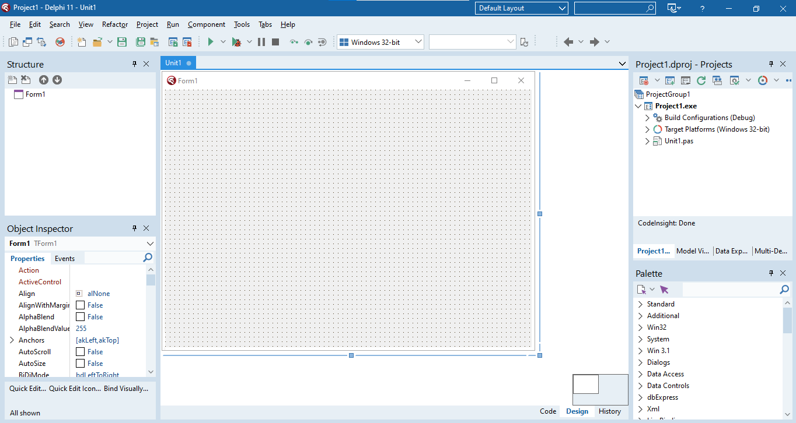
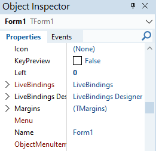
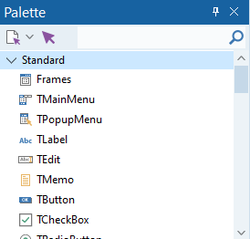
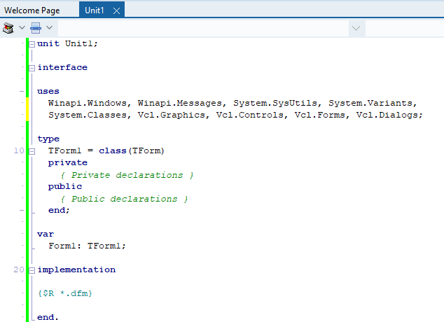
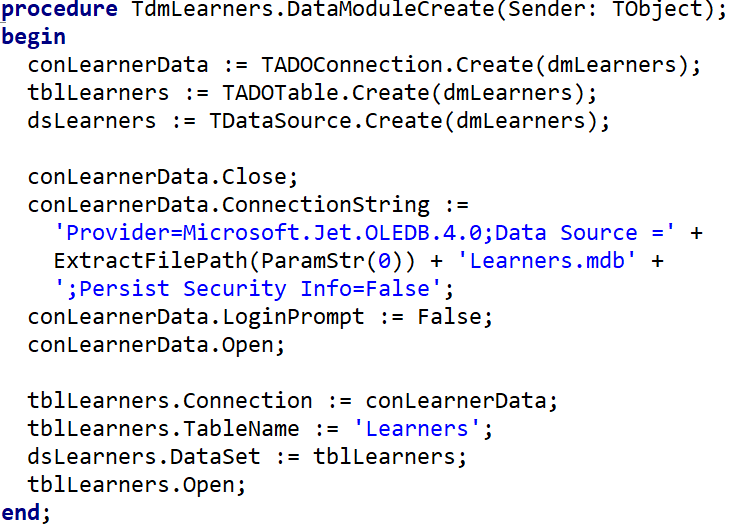

IT Study Reference
A complete printable guide to Information Technology for Grades 10, 11 & 12 - practical Delphi programming and theory.
Contents
- Grade 10
- Practical
- Algorithms & Problem Solving
- Introduction to Delphi
- Delphi Components & Events
- Data Types & Variables
- Operators & Functions
- Decision Making (IF / CASE)
- Loops
- String Manipulation
- Theory
- Digital Technologies & ICT
- Hardware
- Software & Licensing
- Data Representation
- Networks
- Internet & WWW
- Internet Services
- E-Communication
- Computer Management & Security
- Grade 11
- Practical
- 1D Arrays
- Text Files
- Procedures & Functions
- Databases in Delphi
- Theory
- Motherboard & Hardware
- Processing Techniques
- Database Management
- Networks & Protocols
- Mobile Technology
- Computer Management
- E-Communications
- Internet & Multimedia
- Internet Services
- Social Implications
- Grade 12
- Practical
- SQL
- SQL - Joining Tables
- OOP
- 2D Arrays
- Recursion
- Theory
- Data Collection & Warehousing
- Relational Databases & Normalisation
- Hardware & Performance
- Cloud Computing, AI, VR & AR
- Internet Technologies
- Networks & Remote Access
- Communication Technologies
- Cybercrime & Safeguards
- Social Implications
- Study Tools
- Term Planners
- Grade 10 - By Term
- Grade 11 - By Term
- Grade 12 - By Term
- Exam Resources
- Exam Extras (Out-of-CAPS)
Algorithms & Problem Solving Grade 10
Before writing a single line of code, good programmers plan their solution. This page covers algorithms, pseudocode, flowcharts, IPO tables and trace tables — the thinking tools of programming.
What is an Algorithm?
Imagine you want to make a cup of tea. You don't just randomly pour hot water and hope for the best — you follow steps: boil water, put teabag in cup, pour water, wait, add milk. That ordered list of steps is an algorithm.
In computing, an algorithm is a precise, step-by-step set of instructions used to solve a problem or complete a task. Every program you write starts as an algorithm in your head (or on paper) before it becomes code.
Think of an algorithm like a recipe. A recipe tells you exactly what ingredients to use, in what order, and what to do with them. A computer program is just a recipe written in a language the computer understands.
Key Characteristics of a Good Algorithm
| Property | Meaning | Example of failure |
|---|---|---|
| Clear | Every step is unambiguous — only one interpretation | "Do something with the number" — too vague |
| Finite | It must end after a certain number of steps | A loop that never stops |
| Correct | It must produce the right answer every time | Adding instead of multiplying |
| Ordered | Steps must follow a logical sequence | Calculating average before calculating total |
| Efficient | No unnecessary steps or wasted resources | Calculating the same total three times |
Why Do Algorithms Matter?
Before writing code, planning with an algorithm helps you:
- Spot logical errors before they become code bugs
- Save time — plan once, code faster
- Communicate your solution to others
- Prove your solution is correct
In 1999, NASA's Mars Climate Orbiter crashed because one team used metric units and another used imperial in their calculations. A clear algorithm with defined units would have caught this. The mistake cost $327 million. Accurate algorithms matter.
The Problem-Solving Cycle
- Understand the problem — State it in your own words. What is given? What must be produced?
- Plan the solution — Write pseudocode or draw a flowchart. Use an IPO table.
- Implement — Convert your plan into Delphi code.
- Test — Run the program and check output against expected results using a trace table.
- Fix errors — Debug and correct any mistakes, then retest.
IPO Tables (Input – Process – Output)
An IPO table is the first planning tool you use. It forces you to identify three things before writing any code: what data goes in, what happens to it (process), and what comes out.
| Input | Process | Output |
|---|---|---|
| Length, Width | Area = Length × Width Perimeter = 2 × (Length + Width) |
Area, Perimeter of rectangle |
| Mark1, Mark2, Mark3 | Total = Mark1 + Mark2 + Mark3 Average = Total ÷ 3 |
Total marks, Average mark |
| A number (num) | IF num MOD 2 = 0 THEN "Even" ELSE "Odd" | "Even" or "Odd" |
| Temperature in Celsius (C) | F = (C × 9/5) + 32 | Temperature in Fahrenheit (F) |
In exams you may be asked to complete an IPO table. Always write the Process column as a formula or decision — not just "calculate it". Show your working: Area = Length × Width, not just "work out the area".
Pseudocode
Pseudocode is fake code written in plain English that describes the logic of a program. It is not real Delphi code — it is for planning only. Anyone who understands programming should be able to read your pseudocode, even if they don't know Delphi.
Pseudocode Rules
- Use CAPITALS for keywords:
IF,THEN,ELSE,ENDIF,WHILE,FOR,INPUT,OUTPUT - Indent inside structures to show what is inside a block
- Use
:=or=for assignment (both are accepted) - Keep it short and clear — no Delphi syntax needed
- Start with START and end with END
SET total TO 10 // assignment
INPUT age // get data from user
OUTPUT total // show result
SET area TO length * width // calculation
IF age >= 18 THEN
OUTPUT "May vote"
ELSE
OUTPUT "Too young to vote"
ENDIFExample: Find the Average of Three Marks
START
INPUT mark1
INPUT mark2
INPUT mark3
SET total TO mark1 + mark2 + mark3
SET average TO total / 3
OUTPUT "Total: ", total
OUTPUT "Average: ", average
ENDExample: Even or Odd
START
INPUT num
IF num MOD 2 = 0 THEN
OUTPUT num, " is Even"
ELSE
OUTPUT num, " is Odd"
ENDIF
ENDFlowcharts
A flowchart shows the steps of an algorithm as a picture using standard symbols connected by arrows. It is easier to spot errors in a diagram than in written text, which is why flowcharts are so useful.
Flowchart Symbol Reference
Flowchart example: checking if a colour is blue
Worked Example: Is a Number Even or Odd?
This flowchart takes a number as input, checks if it divides evenly by 2, and displays "Even" or "Odd" before ending.
Worked Example: Nested Decisions
Here one decision sits inside another. First we check the age; only if that is True do we ask the second question about the licence.
Flowchart: nested decisions — check age first; only if True check the licence.
The diamond shape always asks a Yes/No question. The two arrows leaving the diamond are labelled YES and NO. Both paths must eventually reach the END oval.
Trace Tables
A trace table is used to test an algorithm by hand. You pick a test value, then track every variable as you step through the algorithm line by line. This helps you check whether the algorithm produces the correct output.
Trace Table Example: Even or Odd (num = 7)
| Step | Instruction | num | num MOD 2 | Output |
|---|---|---|---|---|
| 1 | START | — | — | — |
| 2 | INPUT num | 7 | — | — |
| 3 | IF num MOD 2 = 0? | 7 | 1 | — |
| 4 | Condition FALSE → ELSE branch | 7 | 1 | — |
| 5 | OUTPUT "Odd" | 7 | 1 | "Odd" |
| 6 | END | — | — | — |
Trace Table Example: Average of Three Marks (90, 70, 80)
| Step | Instruction | mark1 | mark2 | mark3 | total | average |
|---|---|---|---|---|---|---|
| 1 | INPUT mark1 | 90 | — | — | — | — |
| 2 | INPUT mark2 | 90 | 70 | — | — | — |
| 3 | INPUT mark3 | 90 | 70 | 80 | — | — |
| 4 | total = mark1+mark2+mark3 | 90 | 70 | 80 | 240 | — |
| 5 | average = total / 3 | 90 | 70 | 80 | 240 | 80 |
| 6 | OUTPUT total, average | — | — | — | 240 | 80 |
Comparing Algorithms
When two algorithms solve the same problem, we compare them. Three key criteria matter in CAPS exams:
| Criterion | What it means | Poor example | Better example |
|---|---|---|---|
| Sequence | Steps must be in the correct order | Calculate average BEFORE total | Calculate total first, THEN average |
| Precision | Each step must have one clear meaning | "Calculate the answer" | SET total TO mark1 + mark2 + mark3 |
| Efficiency | No unnecessary steps or repeated work | Calculate total three separate times | Calculate total once and reuse the variable |
Common Algorithm Patterns in Delphi
Finding Smallest and Largest Values
The trick: assume the first value is both smallest and largest, then compare the rest one by one.
var
iNum1, iNum2, iNum3: Integer;
iSmallest, iLargest: Integer;
begin
iNum1 := StrToInt(edtNum1.Text);
iNum2 := StrToInt(edtNum2.Text);
iNum3 := StrToInt(edtNum3.Text);
iSmallest := iNum1; // assume first is smallest
iLargest := iNum1; // assume first is largest
if iNum2 < iSmallest then iSmallest := iNum2;
if iNum3 < iSmallest then iSmallest := iNum3;
if iNum2 > iLargest then iLargest := iNum2;
if iNum3 > iLargest then iLargest := iNum3;
lblResult.Caption := 'Smallest: ' + IntToStr(iSmallest)
+ ' Largest: ' + IntToStr(iLargest);
end;Swapping Two Values
You always need a temporary variable to swap values. Without it, one value gets overwritten before it can be saved — like trying to swap two glasses of water without a third empty glass.
var
iA, iB, iTemp: Integer;
begin
iA := StrToInt(edtA.Text);
iB := StrToInt(edtB.Text);
iTemp := iA; // step 1: save A into temp
iA := iB; // step 2: overwrite A with B
iB := iTemp; // step 3: put saved A into B
edtA.Text := IntToStr(iA);
edtB.Text := IntToStr(iB);
end;Even or Odd
var
iNum: Integer;
begin
iNum := StrToInt(edtNum.Text);
if iNum MOD 2 = 0 then
lblResult.Caption := 'Even number'
else
lblResult.Caption := 'Odd number';
end;Factor Check
A number is a factor if it divides another with no remainder (MOD = 0). For example, 3 is a factor of 12 because 12 ÷ 3 = 4 with remainder 0.
if iNum2 MOD iNum1 = 0 then
lblResult.Caption := IntToStr(iNum1) + ' is a factor of ' + IntToStr(iNum2)
else
lblResult.Caption := IntToStr(iNum1) + ' is NOT a factor of ' + IntToStr(iNum2);Introduction to Delphi Grade 10
Delphi is a visual programming environment — you design the screen AND write the code. You drag components onto a form to build the interface, then write Delphi code to make it all work. This page covers the IDE layout, components, naming, events, and your first program.
The Delphi IDE — What You See When You Open It
When you open Delphi, this is what you will see. It might look overwhelming at first — but each area has one clear job:



Switching to Code View
Press F12 to toggle between the Design View (what you see above) and the Code View (where you type your Delphi code).

The Delphi IDE Layout
The Integrated Development Environment (IDE) is where you write, design and run your programs. Think of it as your workshop — every tool you need is right there.
Key IDE Panels
| Panel | Purpose |
|---|---|
| Menu Bar | Top menu — File, Edit, View, Project, Run, Tools etc. |
| Tool Palette | All Delphi components grouped by category. Click a component, then click on the form to place it. |
| Object Inspector | Sets the initial properties and events of a selected component. |
| Structure Panel | Quick reference showing all objects on the current form. |
| Form / Design Area | The visual canvas — drag and drop components here to build the UI. |
| Code View | Where you write Delphi code. Toggle with F12. |
Basic Format of Statements
An assignment statement stores a value in a property or variable using the assignment operator :=. We use code in Delphi to assign values to properties of components in the following format:
Component.Property := Value;All the properties a component has can be seen in the Object Inspector when that component is selected — the same properties you set visually at design time can also be set in code.
- Always assign TO the component/property on the left side of
:=— never the other way round. - Every statement ends with a semicolon
;
Form1.Height := 500;
Form1.Width := 700;
Button1.Caption := 'Register';
Shape1.Top := 20;
Shape1.Left := 20;Step-by-Step: Creating Your First Project
- File → New → Windows VCL Application — creates a blank Form (TForm).
- Place components by clicking them in the Tool Palette, then clicking on the form.
- Set properties in the Object Inspector (e.g. change a button's Caption).
- Double-click a button to go to Code View and write the event handler.
- File → Save All (Ctrl+Shift+S) — save in a NEW dedicated folder.
- Press F9 to compile and run.
Each project must be saved in its own dedicated folder. Save the Unit file as FileName_u.pas and the Project file as FileName_p.dproj. Never mix two projects in one folder.
Visual Component Reference
Components are the building blocks placed on a form. Each is an object with properties and events. Here is what the most common ones look like:
Naming Convention
Every component gets a prefix that indicates its type, followed by a meaningful name. This makes code readable.
| Prefix | Component Type | Example |
|---|---|---|
btn | TButton | btnCalculate |
lbl | TLabel | lblResult |
edt | TEdit | edtName |
mem | TMemo | memOutput |
img | TImage | imgLogo |
pnl | TPanel | pnlHeader |
sed | TScrolledEdit | sedNotes |
cbo | TComboBox | cboGrade |
lst | TListBox | lstNames |
rgp | TRadioGroup | rgpGender |
chk | TCheckBox | chkAgree |
tmr | TTimer | tmrClock |
Event-Driven Programming
Delphi programs are event-driven — code only runs when something HAPPENS (an event), like pressing a button, typing in a box, or a timer ticking.
Think of a vending machine. It just sits there doing nothing — until you push a button. That press is the event. The machine then dispenses the item — that is the event handler (your code). If no button is pressed, nothing happens. Delphi works exactly like this.
| Event | When it fires | Common use |
|---|---|---|
OnClick | User clicks a button / component | Calculate, submit, navigate |
OnChange | Text in an edit box changes | Live validation, update display |
OnKeyPress | A key is pressed while component has focus | Accept only numbers |
OnCreate | Form loads / opens | Initialise variables, load data |
OnTimer | Timer interval elapses | Countdown, clock display |
How to Create an Event Handler
- In Design View, double-click a button to create its
OnClickhandler automatically. - For other events, go to the Events tab in the Object Inspector and double-click next to the event name.
- Delphi creates a skeleton procedure. Write your code between
beginandend. - Never change the procedure header — only add code inside.
procedure TForm1.btnCalculateClick(Sender: TObject);
begin
// Your code goes here
ShowMessage('Button clicked!');
end;ShowMessage and InputBox
ShowMessage displays a pop-up with a message. InputBox pops up a window asking the user to type something. Both are modal — the program pauses until the user responds.
ShowMessage('Hello world!');
ShowMessage('Result: ' + IntToStr(iAnswer));// Returns a string
sName := InputBox('Name', 'Enter your name:', '');
// Convert to integer
iNum := StrToInt(InputBox('Number', 'Enter a number:', ''));
// Convert to real
rAmount := StrToFloat(InputBox('Amount', 'Enter amount:', ''));
// Get first character only
cClass := InputBox('Class', 'Enter class:', '')[1];Components — Properties
Properties control how a component looks and behaves. Set them in the Object Inspector or through code.
| Property | Description | Example Value |
|---|---|---|
Name | Unique identifier used in code | btnCalculate |
Caption | Text shown on labels, buttons, forms | 'Calculate' |
Text | Text in a TEdit box | edtName.Text |
Height | Component height in pixels | 30 |
Width | Component width in pixels | 150 |
Font.Size | Text size | 14 |
Font.Color | Text colour (note: Color not Colour) | clRed |
Visible | Whether component is shown | True / False |
More Properties in Code
The same Component.Property := Value; format works for every property, including nested ones like Font.Color:
Label1.Font.Color := clGreen;
Shape1.Brush.Color := clRed;Methods
Methods are pre-written operations that perform tasks on components. Format: ComponentName.Method;
| Method | Effect |
|---|---|
Button1.Hide; | Makes the button invisible |
Button1.Show; | Makes the button visible again |
Edit1.SetFocus; | Moves the cursor into the edit box |
Memo1.Clear; | Clears all text in the memo |
Form1.Close; | Closes the form / program |
RichEdit1.Lines.Add('text'); | Adds a new line to a RichEdit or Memo |
Syntax Rules
Forgetting the closing semicolon ; on a statement causes a syntax error. There is never a semicolon before else. Begin/end pairs must always match.
Delphi Components & Events Grade 10
Beyond buttons and labels — these components are used in most IT practical exams. Know each one's key property and how to use it in code.
Input Components
| Component | Key Property/Event | How to use in code |
|---|---|---|
| TEdit | .Text | edtName.Text — read or write as string |
| TSpinEdit (sedNum) | .Value | sedNum.Value — returns Integer directly |
| TComboBox | .Text or .ItemIndex | cboMonth.Text or cboMonth.ItemIndex (0-based) |
| TListBox | .ItemIndex, .Items | lstNames.Items.Add('Alice'); lstNames.ItemIndex |
| TRadioGroup | .ItemIndex | if rgpGender.ItemIndex = 0 then (0 = first item) |
| TCheckBox | .Checked | if chkAgree.Checked then |
| TTrackBar | .Position | trkVolume.Position — Integer |
| TDateTimePicker | .Date | dtpBirth.Date — TDate value |
Output Components
| Component | Key Property | Code example |
|---|---|---|
| TLabel | .Caption | lblResult.Caption := 'Done'; |
| TMemo | .Lines | memOut.Lines.Add('Hello'); |
| TRichEdit | .Lines | Same as Memo; supports formatting |
| TListBox | .Items | lstOut.Items.Add('Alice'); |
| TImage | .Picture | imgPhoto.Picture.LoadFromFile('face.jpg'); |
| TProgressBar | .Position | pbrLoad.Position := 75; |
| TPanel | .Caption, .Color | pnlInfo.Caption := 'Ready'; |
PageControl (Tabbed Forms)
A TPageControl creates tabbed pages on a form. Each tab is a TTabSheet.
Creating tabs
- Add
TPageControlto the form - Right-click → New Page to add tabs
- Set each
TTabSheet.Captionin the Object Inspector - Drop other components onto each tab — they belong to that tab
Controlling tabs in code
// Show a tab
TabSheet2.TabVisible := True;
// Hide a tab
TabSheet2.TabVisible := False;
// Jump to a specific tab
pgcMain.ActivePage := TabSheet3;Timer Component
A TTimer fires its OnTimer event at regular intervals without user input.
| Property | Meaning |
|---|---|
Interval | Milliseconds between triggers (1000 = 1 second) |
Enabled | True/False — starts or stops the timer |
var
iSeconds: Integer; // global variable
// OnTimer event (fires every 1000ms)
procedure TForm1.tmrCountTimer(Sender: TObject);
begin
Dec(iSeconds);
lblTime.Caption := IntToStr(iSeconds) + ' seconds left';
if iSeconds <= 0 then
begin
tmrCount.Enabled := False;
ShowMessage('Time is up!');
end;
end;ComboBox — Adding Items
// At design time: use Items property in Object Inspector
// At runtime:
cboMonth.Items.Add('January');
cboMonth.Items.Add('February');
cboMonth.ItemIndex := 0; // select first item
// Reading selected item
sSelected := cboMonth.Text;
iIndex := cboMonth.ItemIndex;ListBox — Adding, Clearing, Accessing Items
lstNames.Items.Add('Alice'); // add item
lstNames.Items.Clear; // remove all
lstNames.Items.Delete(0); // remove first item
iCount := lstNames.Items.Count; // number of items
sItem := lstNames.Items[2]; // access item at index 2
sSelected := lstNames.Items[lstNames.ItemIndex]; // selected itemResetting a Selection — the -1 Trick
The ItemIndex property tells you which item is selected, counting from 0 (the first item). When nothing is selected, ItemIndex is -1.
This works in reverse too: setting ItemIndex := -1 deselects everything and visually clears the box. This is the standard way to reset a TComboBox, TListBox or TRadioGroup — for example when a user clicks a "Clear form" button.
cboMonth.ItemIndex := -1; // ComboBox: no month selected (box appears empty)
rgpGender.ItemIndex := -1; // RadioGroup: no radio button filled in
lstNames.ItemIndex := -1; // ListBox: nothing highlightedIf the user has not chosen anything, ItemIndex is -1. Reading cboMonth.Items[cboMonth.ItemIndex] while it is -1 causes a runtime error (list index out of bounds). Guard it first:
if cboMonth.ItemIndex = -1 then
ShowMessage('Please select a month first.')
else
sMonth := cboMonth.Text;Naming Convention for Components
| Prefix | Component |
|---|---|
btn | TButton |
lbl | TLabel |
edt | TEdit |
mem | TMemo |
sed | TSpinEdit |
cbo | TComboBox |
lst | TListBox |
rgp | TRadioGroup |
chk | TCheckBox |
pgc | TPageControl |
tmr | TTimer |
img | TImage |
Data Types & Variables Grade 10
Every value in Delphi has a data type. Variables are the containers that hold these values while your program runs. Constants hold values that never change.
Data Types
| Data Type | What it stores | Examples | Quotes? |
|---|---|---|---|
Integer | Whole numbers (positive & negative, no decimals) | 3, -15, 1250 | No |
Real | Numbers with decimals (floating point) | 3.14, -13.24, 125.89 | No |
String | One or more characters — text | 'Banana', '23.45', '@!jkl' | Single quotes '…' |
Char | A single character only | 'S', '!', 'a' | Single quotes '…' |
Boolean | Only True or False | True, False | No |
Variables
A variable is a named storage location that holds a value during program execution. Think of it as a labelled box — you can put something in, use it, and swap it out.
Variables must be: Declared → Populated → Used.
Naming Convention — Prefixes
| Prefix | Data Type | Example |
|---|---|---|
i | Integer | iAge |
r | Real | rPrice |
s | String | sName |
c | Char | cGrade |
b | Boolean | bFound |
Declaring Variables
Declared in the var section using: variableName : DataType;
Local Declaration (inside a procedure)
procedure TForm1.btnClickClick(Sender: TObject);
var
sName: string;
iNumber: integer;
begin
// code here
end;Global Declaration (available to all procedures)
var
Form1: TForm1;
sName: string; // declared here, below existing var block
iNumber: integer;Populating (Assigning) Variables
Use the assignment operator := to put a value into a variable.
sName := 'Jannie';
sName := edtName.Text; // from a text box
iNumber := 15;
iNumber := sedNum.Value; // from a spin edit
bFlag := True;Initialising Variables
Set a starting value before using a variable, especially counters and totals — otherwise Delphi may assign a random garbage value.
i := 0;
iTotal := 0;
sReverse := '';
cLetter := '';Using Variables
lblFullName.Caption := sName + ' ' + sSurname;
memOut.Lines.Add(sName + ' ' + sSurname);
iAnswer := iNum1 + iNum2;
memOut.Lines.Add(IntToStr(iNum1) + ' + ' + IntToStr(iNum2)
+ ' = ' + IntToStr(iAnswer));Constants
A constant holds a value that is known before the program runs and cannot change while it runs. Use const instead of var. No data type is needed, and use = not :=.
const
VAT = 0.15;
MAX_ITEMS = 100;
// Using a constant — exactly like a variable
rVatAmount := rCostPrice * VAT;
rTotal := rCostPrice + rVatAmount;Type Conversion
Components like TEdit only hold strings. You must convert to the right type before using in calculations.
| Function | Converts | Example |
|---|---|---|
StrToInt() | String → Integer | iAge := StrToInt(edtAge.Text); |
StrToFloat() | String → Real | rPrice := StrToFloat(edtPrice.Text); |
IntToStr() | Integer → String | lblOut.Caption := IntToStr(iTotal); |
FloatToStr() | Real → String | lblOut.Caption := FloatToStr(rAverage); |
Val procedure — converting safelyStrToInt crashes (runtime error) if the text isn't a valid number. The Val procedure converts a string to a number without crashing: it gives back the converted value AND an error code that tells you whether the conversion worked (0 = success, otherwise the position of the first bad character).
var
iValue, iCode : Integer;
begin
Val(edtAge.Text, iValue, iCode);
if iCode = 0 then
ShowMessage('Valid number: ' + IntToStr(iValue))
else
ShowMessage('Not a valid number!'); // iCode = position of the bad character
end;Formatting Real Numbers
// FloatToStrF(value, format, totalDigits, decimals)
lblPrice.Caption := FloatToStrF(rPrice, ffCurrency, 4, 2); // → R24.50
lblPrice.Caption := FloatToStrF(rPrice, ffFixed, 4, 2); // → 24.50Types of Errors
| Error Type | When it occurs | Example |
|---|---|---|
| Syntax Error | Code is typed incorrectly — won't compile | Missing semicolon, missing end |
| Runtime Error | Crashes while the program is running | Dividing by zero |
| Logical Error | Runs, but gives wrong answer | Calculating average before total, infinite loop |
Operators & Functions Grade 10
Operators perform calculations. Delphi also has a rich library of built-in functions for maths, string handling, and more.
Arithmetic Operators
| Operator | Symbol | Description | Example | Result |
|---|---|---|---|---|
| Addition | + | Add values | 5 + 3 | 8 |
| Subtraction | - | Subtract | 10 - 4 | 6 |
| Multiplication | * | Multiply | 4 * 3 | 12 |
| Division | / | Divide (returns Real) | 7 / 2 | 3.5 |
| Integer Division | DIV | Whole part only (no remainder) | 7 DIV 2 | 3 |
| Modulus | MOD | Remainder only | 7 MOD 2 | 1 |
MOD and DIV Examples
| Calculation | Working | MOD result | DIV result |
|---|---|---|---|
5 MOD/DIV 2 | 5 ÷ 2 = 2 remainder 1 | 1 | 2 |
25 MOD/DIV 5 | 25 ÷ 5 = 5 remainder 0 | 0 | 5 |
17 MOD/DIV 3 | 17 ÷ 3 = 5 remainder 2 | 2 | 5 |
Even/Odd check: n MOD 2 = 0 → even
Factor check: b MOD a = 0 → a is a factor of b
Last digit: n MOD 10 → last digit of n
Operator Precedence (Order of Operations)
| Priority | Operators |
|---|---|
| 1st (highest) | Brackets ( ) |
| 2nd | * / DIV MOD (left to right) |
| 3rd (lowest) | + - (left to right) |
result := 2 + 3 * 4; // = 14 (3*4 first)
result := (2 + 3) * 4; // = 20 (brackets first)
result := 10 DIV 2 + 3; // = 8 (DIV first)Mathematical Functions
Add Math to your uses section to access power, floor, ceil etc.
| Function | Description | Example | Result |
|---|---|---|---|
sqr(x) | x squared (x²) | sqr(4) | 16 |
sqrt(x) | Square root | sqrt(16) | 4.0 |
power(x,n) | x to the power of n | power(5,3) | 125 |
round(x) | Round to nearest integer | round(5.68) | 6 |
trunc(x) | Remove decimal (truncate) | trunc(5.68) | 5 |
floor(x) | Round DOWN | floor(3.76) | 3 |
ceil(x) | Round UP | ceil(3.76) | 4 |
abs(x) | Absolute value (remove negative) | abs(-12) | 12 |
frac(x) | Fractional part only | frac(12.75) | 0.75 |
pi | Value of π | pi | 3.14159… |
random(n) | Random number from 0 to n-1 | random(10) | 0–9 |
RoundTo(x,-n) | Round to n decimal places | RoundTo(12.3456,-2) | 12.35 |
Inc and Dec
| Procedure | Effect | Example | Result |
|---|---|---|---|
Inc(x) | Increment by 1 | Inc(5) | 6 |
Inc(x, n) | Increment by n | Inc(5, 3) | 8 |
Dec(x) | Decrement by 1 | Dec(5) | 4 |
Dec(x, n) | Decrement by n | Dec(6, 4) | 2 |
Ord and Chr
Ord and Chr convert between characters and their ASCII numeric codes.
| Function | Description | Example | Result |
|---|---|---|---|
Ord(c) | Character → ASCII integer | Ord('A') | 65 |
Chr(n) | ASCII integer → Character | Chr(65) | 'A' |
Caesar Cipher Example
var
sInput, sOutput: string;
i, iShift: Integer;
begin
sInput := InputBox('Text', 'Enter text:', 'ABC');
iShift := StrToInt(InputBox('Shift', 'Enter shift (1-25):', '3'));
sOutput := '';
for i := 1 to Length(sInput) do
sOutput := sOutput + Chr(Ord(sInput[i]) + iShift);
ShowMessage('Shifted: ' + sOutput); // ABC → DEF
end;Upcase and Trim
| Function | Description | Example | Result |
|---|---|---|---|
UpCase(c) | Convert single char to uppercase | UpCase('a') | 'A' |
Trim(s) | Remove spaces from both ends | Trim(' Hello ') | 'Hello' |
TrimLeft(s) | Remove leading spaces | TrimLeft(' Hi') | 'Hi' |
TrimRight(s) | Remove trailing spaces | TrimRight('Hi ') | 'Hi' |
Decision Making — IF & CASE Grade 10
Decision structures let your program choose different paths based on conditions. Delphi uses if…then…else and case for this.
What is Decision Making?
Decision-making (also called conditional logic) is when a program tests whether something is true or false and then chooses what to do next based on the answer. A condition is any question that can only be answered with true or false — for example, "is the age 18 or more?".
Everyday analogy: A robot (traffic light) at an intersection makes a decision for you. If the light is green you go; else you stop. Your program does the same thing — it looks at a condition and takes one path or another.
Why Do Programs Need to Make Decisions?
Without decisions, a program could only ever do the exact same thing every single time it runs. Decisions make a program react to its data and its user.
- React to input – an age-check on a website: if you are old enough it lets you in, otherwise it blocks you.
- Validate data – if a mark is below 0 or above 100, warn the user it is invalid.
- Choose an outcome – if a learner scored 50 or more, display "Passed", otherwise display "Failed".
- Stay safe – if the password matches, grant access; otherwise deny it.
The IF Statement
Evaluates a condition (true/false) and executes code accordingly.
The IF statement is the most common decision in programming. In plain words it says: "If this is true, then do that; otherwise (else) do something else." Everyday analogy: "If it is raining, take an umbrella, else wear a cap." The "if it is raining" part is the condition that is checked first.
IF … THEN (one-way)
if condition then
statement;IF … THEN … ELSE (two-way)
Never put a ; on the line before else — it ends the if statement too early.
if condition then
statement
else
statement;Multiple Statements — use BEGIN…END
if iAge >= 18 then
begin
lblResult.Caption := 'Adult';
btnVote.Enabled := True;
end
else
begin
lblResult.Caption := 'Minor';
btnVote.Enabled := False;
end;Examples
if iNum1 > iNum2 then
ShowMessage(IntToStr(iNum1) + ' is larger');
if age >= 18 then
ShowMessage('Old enough to vote');
if username <> 'admin' then
ShowMessage('Access denied')
else
ShowMessage('Welcome, administrator!');Comparison Operators
| Operator | Meaning | Example |
|---|---|---|
= | Equal to | iAge = 18 |
<> | Not equal to | sName <> 'Admin' |
> | Greater than | iScore > 50 |
< | Less than | iAge < 18 |
>= | Greater than or equal to | iMark >= 30 |
<= | Less than or equal to | rPrice <= 100.0 |
Boolean Operators
Combine multiple conditions in one statement.
Boolean operators let you ask more than one question at the same time. Everyday analogy: to get into a club you might need to be 18 AND have an ID — both must be true. To qualify for a discount you might need to be a student OR a pensioner — either one is enough. NOT simply flips an answer around, like saying "if it is not a holiday, school is open".
| Operator | Rule | Example |
|---|---|---|
AND | Both conditions must be true | (iAge >= 18) AND (bHasID = True) |
OR | At least one condition must be true | (sGender = 'M') OR (sGender = 'F') |
NOT | Inverts the condition | NOT (iScore > 50) |
if (iAge >= 18) AND (bHasLicense = True) then
bCanDrive := True;
if (iScore >= 30) OR (bHasSymbol = True) then
lblResult.Caption := 'Passed';Nested IF
An IF inside another IF.
if iAge >= 18 then
begin
if bHasLicense = True then
bDrive := True
else
bDrive := False;
end
else
bDrive := False;Decision Components
RadioGroup
Uses an ItemIndex property — first item is index 0.
if rgpGender.ItemIndex = 0 then
sGender := 'Male'
else
sGender := 'Female';CheckBox
Uses the Checked property — True or False.
if chkInsurance.Checked = True then
rCost := rCost + rInsuranceAmount;The IN Operator
Tests if a value is in a set. Cleaner than multiple OR conditions.
// Check for specific values
if iNumber IN [1, 3, 5, 7] then
ShowMessage('Odd single digit found');
// Range using ..
if iMark IN [0..49] then
lblSymbol.Caption := 'F';
// Works with Char too
if cLetter IN ['A', 'E', 'I', 'O', 'U'] then
ShowMessage('Vowel');The CASE Statement
Cleaner alternative to multiple IF…ELSE when testing one variable against many values. Works with Integer and Char only.
Use CASE when one variable could take many possible values and each value leads to a different outcome — like turning a mark into a grade symbol. Everyday analogy: a vending machine. You press one button (the value), and depending on which button it was, a different snack drops out. Writing that as a long chain of IF…ELSE statements works, but CASE lays it out neatly so it is much easier to read.
case expression of
value1: statement1;
value2: statement2;
value3: statement3;
else
statementDefault;
end;CASE has no begin, but always has end. You can use ranges with ..
case iMark of
80..100: lblSymbol.Caption := '7 — Outstanding';
70..79: lblSymbol.Caption := '6 — Meritorious';
60..69: lblSymbol.Caption := '5 — Substantial';
50..59: lblSymbol.Caption := '4 — Adequate';
40..49: lblSymbol.Caption := '3 — Moderate';
30..39: lblSymbol.Caption := '2 — Elementary';
else
lblSymbol.Caption := '1 — Not Achieved';
end;MessageDlg
A pop-up dialog that asks the user a yes/no question and returns a result.
if MessageDlg('Are you sure?', mtConfirmation, mbYesNo, 0) = mrYes then
// execute if user clicked Yes
ShowMessage('Confirmed!');| Parameter | Options |
|---|---|
| Message type | mtConfirmation, mtInformation, mtWarning, mtError |
| Buttons | mbYesNo, mbOKCancel, mbYesNoCancel |
| Result | mrYes, mrNo, mrOK, mrCancel |
Loops Grade 10
Loops repeat a block of code multiple times. Delphi has three loop types — choose based on whether you know how many times to repeat.
What is a Loop?
A loop is a programming structure that repeats a block of code over and over until a certain point is reached. Instead of writing the same instruction many times, you write it once and tell the computer how often, or until when, to repeat it.
Everyday analogy: Think of doing push-ups. The coach does not shout "do a push-up" fifty separate times. He says "do fifty push-ups." That single instruction, repeated until you reach fifty, is a loop. The action (one push-up) is the loop body, and "fifty" is the condition that tells you when to stop.
Why Do We Use Loops?
Loops save us from repeating ourselves and let programs handle any amount of work with the same short piece of code.
- Less code – printing the numbers 1 to 100 takes three lines with a loop instead of one hundred lines without one.
- Fewer mistakes – you write the instruction once, so there is only one place where a typo could hide.
- Flexibility – the same loop can run 5 times or 5 000 times just by changing one number, so your program copes with any size of data.
- Processing collections – loops let you visit every item in a list, every learner in a class, or every character in a string, one at a time.
The Three Loop Types in Plain Words
Choosing the right loop comes down to one question: do you know in advance how many times to repeat?
- FOR – use it when you know the exact number of repeats. Analogy: climbing a staircase with a known number of steps — you count "step 1, step 2…" up to the top.
- WHILE – use it when you do not know how many times, and you must check first before doing anything. Analogy: filling a glass of water — you keep checking "is it full yet?" before each pour, and if the glass was already full you never pour at all.
- REPEAT…UNTIL – use it when you do not know how many times, but you must do the action at least once and check afterwards. Analogy: asking someone for their PIN — you always ask once, then check if it was right, and ask again only if it was wrong.
Types of Loops
| Loop | Type | Use when… |
|---|---|---|
for … do | Unconditional (fixed) | You know exactly how many times |
while … do | Conditional (pre-test) | Repeat WHILE a condition is true — check first |
repeat … until | Conditional (post-test) | Repeat UNTIL a condition is true — always runs at least once |
FOR Loop (Fixed / Unconditional)
Runs a set number of times. The counter increments or decrements automatically.
We call it fixed or unconditional because the number of repeats is decided before the loop even starts and cannot change while it runs. You give it a start value and an end value, and Delphi handles the counting for you — you never have to add 1 to the counter yourself.
Reach for a FOR loop whenever you can finish the sentence "do this exactly ___ times" with a number — printing 1 to 10, working through all 30 learners in a class, or drawing 12 rows of a table.
for counter := lowest to highest do
begin
// code repeated each iteration
end;for i := 1 to 5 do
begin
memOut.Lines.Add(IntToStr(i));
end;FOR … DOWNTO (counting down)
for i := 5 downto 1 do
begin
memOut.Lines.Add(IntToStr(i));
end;FOR Loop — Running Total
var
i, iTotal: Integer;
begin
iTotal := 0; // initialise!
for i := 1 to 10 do
iTotal := iTotal + i;
lblTotal.Caption := 'Sum = ' + IntToStr(iTotal);
end;WHILE … DO Loop (Pre-Conditional)
Checks the condition before each iteration. If the condition is false from the start, the loop body never runs.
We call it pre-conditional ("pre" = before) because it tests the condition first, and only then decides whether to run the body. This makes it the safe choice when there is a chance the loop should not run at all.
Use WHILE when you do not know how many repeats you need and it might be zero — for example, "keep reading numbers while the user hasn't typed 0". If they type 0 immediately, you correctly do nothing.
while condition do
begin
// code
end;The counter must be initialised before the loop and incremented inside the loop — otherwise it runs forever and crashes your program.
var
Counter: Integer;
begin
Counter := 1; // initialise BEFORE loop
while Counter <= 5 do
begin
memOut.Lines.Add('Counter: ' + IntToStr(Counter));
Inc(Counter); // increment INSIDE loop
end;
end;WHILE — Reading user input until sentinel
var
iNum, iTotal: Integer;
begin
iTotal := 0;
iNum := StrToInt(InputBox('Input', 'Enter number (0 to stop):', ''));
while iNum <> 0 do
begin
iTotal := iTotal + iNum;
iNum := StrToInt(InputBox('Input', 'Enter number (0 to stop):', ''));
end;
lblTotal.Caption := 'Total: ' + IntToStr(iTotal);
end;REPEAT … UNTIL Loop (Post-Conditional)
Runs the body first, then checks the condition. Guaranteed to run at least once. Loop continues while condition is false; stops when it becomes true.
We call it post-conditional ("post" = after) because it does the work first and asks the question afterwards. That is the opposite of the WHILE loop, and it is exactly what you want when the action must happen at least one time no matter what.
Use REPEAT…UNTIL when the body must run at least once — like showing a menu and asking the user to choose, or asking for a valid mark and re-asking until they get it right. You always ask once, then keep asking until the answer is acceptable.
repeat
// code
until condition;var
i: Integer;
begin
i := 1;
repeat
memOut.Lines.Add(IntToStr(i));
i := i + 1;
until i > 10;
end;REPEAT — Validate input
var
iMark: Integer;
begin
repeat
iMark := StrToInt(InputBox('Mark', 'Enter mark (0-100):', ''));
if (iMark < 0) OR (iMark > 100) then
ShowMessage('Invalid! Enter 0-100');
until (iMark >= 0) AND (iMark <= 100);
end;Comparison: Which Loop to Use?
| Situation | Best Loop |
|---|---|
| Print numbers 1 to 100 | for |
| Read until user types "stop" | while or repeat |
| Must run at least once (e.g. menu) | repeat |
| Unknown number of iterations | while or repeat |
| Process each element in an array | for |
String Manipulation Grade 10
Strings are sequences of characters. Delphi provides built-in functions and procedures to analyse, extract, and modify strings.
What is String Manipulation?
String manipulation is the process of working with text inside a program — searching it, pulling pieces out of it, changing it and measuring it. A string is simply a piece of text: a name, an ID number, an email address or a whole sentence are all strings.
Everyday analogy: Think of a string like a row of bead letters on a piece of string, exactly like a beaded keyring that spells a name. Each bead is one character and it sits in a fixed position. String manipulation is what you do when you slide beads off the end, count how many there are, swap a small to a capital bead, or read which bead is sitting in position 3.
Almost every real program handles text. When you log in, the computer compares the string you typed against the stored one. When a website greets you by your first name only, it has extracted that name out of your full name. When a form checks that an email contains an "@", it is searching a string. Learning these functions means you can validate input, format output neatly, and pull useful data out of messy text — skills you will use in every program from here on.
Note: In Delphi, the very first character of a string sits at position 1 (not 0). This is why the reference string below numbers its letters starting at 1.
All examples on this page use: sSourceText := 'Andre is cute';
Positions: A=1, n=2, d=3, r=4, e=5, (space)=6, i=7, s=8, (space)=9, c=10, u=11, t=12, e=13
Quick Reference
| Name | Type | What it does | Returns |
|---|---|---|---|
Pos | Function | Position of a substring in a string | Integer |
Index [ ] | — | Character at a specific position | String (1 char) |
Copy | Function | Extract part of a string | String |
Insert | Procedure | Insert text into a string | Modifies original |
Delete | Procedure | Remove part of a string | Modifies original |
Length | Function | Number of characters in a string | Integer |
UpperCase | Function | Convert to all capitals | String |
LowerCase | Function | Convert to all lowercase | String |
Group 1 — Searching a String
Searching means asking "is this smaller piece of text in there, and if so, where?" The answer you get back is a position number. This is the first thing you do before you can extract or change part of a string, because you usually need to know where something is first.
Everyday analogy: It is like using Find (Ctrl+F) in a document. You type a word, and the computer jumps to the spot where it appears and tells you where it is. Pos is Delphi's version of that "Find".
Pos — Find Position
Returns the integer position of the first occurrence of a substring. Returns 0 if not found.
IntegerVariable := Pos(StrToBeFound, SourceText);iX := Pos('e', sSourceText); // = 5 (first 'e' in 'Andre')
iX := Pos('is', sSourceText); // = 7
iX := Pos('xyz', sSourceText); // = 0 (not found)Index [ ] — Character at Position
Access a single character using square brackets and a position number.
StringVariable := SourceText[CharacterPosition];sNewText := sSourceText[2]; // = 'n'
sNewText := sSourceText[5]; // = 'e'Group 2 — Extracting Part of a String
Extracting means taking a copy of a piece of the string without changing the original. You decide where to start and how many characters to grab. This is how you pull a first name out of a full name, a year out of a date, or an area code out of a phone number.
Everyday analogy: Think of cutting a slice out of a loaf of bread. The loaf (the original string) stays whole; you just take a slice from a chosen spot of a chosen thickness. Copy takes the slice, and Index [ ] takes a single thin slice — just one character.
Copy — Extract Substring
Extracts a section of text starting at a position for a given number of characters.
StringVariable := Copy(SourceText, BeginPosition, Length);sNewText := Copy(sSourceText, 10, 4); // = 'cute' (start at 10, take 4)
sNewText := Copy(sSourceText, 1, 5); // = 'Andre' (start at 1, take 5)Group 3 — Changing a String
Changing a string means actually modifying it — adding text in, taking text out, or measuring it. Unlike extracting, these Insert and Delete procedures change the original string directly, so afterwards the string is different from before.
Everyday analogy: This is like editing a sentence in your exercise book. Insert squeezes a new word into the middle of the sentence; Delete rubs a few words out. Length is just counting how many letters the sentence now has.
Insert — Add Text
Inserts text into an existing string at a given position. Modifies the string directly.
Insert(InsertText, SourceText, Position);Insert('very ', sSourceText, 10);
// sSourceText is now: 'Andre is very cute'Delete — Remove Text
Removes a section of text from a string. Modifies the string directly.
Delete(SourceText, Position, Length);Delete(sSourceText, 9, 5);
// sSourceText is now: 'Andre is' (removed ' cute')Length — String Length
IntegerVariable := Length(SourceText);iX := Length(sSourceText); // = 13 (length of 'Andre is cute')
iX := Length('Hello'); // = 5Group 4 — Changing Case
Changing case means turning all the letters into capitals (UpperCase) or all into small letters (LowerCase). The most important reason we do this is to compare text fairly. The computer thinks 'YES', 'yes' and 'Yes' are three different strings, so if you force them all to lowercase first, they all match.
Everyday analogy: Imagine a teacher marking a one-word answer. Whether a learner wrote "Cape Town", "CAPE TOWN" or "cape town", it is the same correct answer. Lowercasing both the answer and the memo before comparing is how you make sure capitals do not unfairly mark someone wrong.
Important Rule: UpperCase and LowerCase return a new string — they do not change the original unless you store the result back into a variable.
UpperCase and LowerCase
sResult := UpperCase(sSourceText);
// 'Andre is cute' → 'ANDRE IS CUTE'
sResult := LowerCase(sSourceText);
// 'Andre is cute' → 'andre is cute'Practical Patterns
Reverse a String
var
sInput, sReverse: string;
i: Integer;
begin
sInput := edtInput.Text;
sReverse := '';
for i := Length(sInput) downto 1 do
sReverse := sReverse + sInput[i];
lblResult.Caption := sReverse;
end;Count Occurrences of a Character
var
sText: string;
i, iCount: Integer;
begin
sText := LowerCase(edtInput.Text);
iCount := 0;
for i := 1 to Length(sText) do
if sText[i] IN ['a','e','i','o','u'] then
Inc(iCount);
lblResult.Caption := 'Vowels: ' + IntToStr(iCount);
end;Extract First Name from "Surname, Name"
var
sFullName, sName, sSurname: string;
iCommaPos: Integer;
begin
sFullName := edtInput.Text; // e.g. 'Smith, John'
iCommaPos := Pos(',', sFullName);
sSurname := Copy(sFullName, 1, iCommaPos - 1);
sName := Copy(sFullName, iCommaPos + 2, Length(sFullName));
lblOut.Caption := 'Name: ' + sName + ' Surname: ' + sSurname;
end;Digital Technologies & ICT Grade 10
Understanding what digital technology and ICT actually mean, how computers process information, and the basic model behind every computer system.
Digital Technologies
Digital technologies are electronic tools, systems and devices that use digital data (0s and 1s) to collect, process, store and communicate information.
Examples: computers, smartphones, networks, cloud computing, databases, AI systems, IoT devices.
ICT vs IT
| Term | Stands for | Meaning |
|---|---|---|
| ICT | Information Communication Technology | All technologies that capture, transmit and display data electronically — people, hardware, software, procedures, data. |
| IT | Information Technology | A subset of ICT — the development, maintenance and use of computer systems, software and networks for processing and communicating data. |
Data vs Information vs Knowledge
| Term | Definition | Example |
|---|---|---|
| Data | Raw, unprocessed facts with no meaning on their own | 3, 5, 7, 1, 9 |
| Information | Data that has been processed and given meaning | "Sorted list: 1, 3, 5, 7, 9" |
| Knowledge | Insight derived from understanding information | "These are odd numbers in ascending order" |
Characteristics of a Computer
- Speed — performs millions of operations per second
- Accuracy — follows instructions exactly
- Diligence — does not get tired or distracted
- Storage — large amounts of data can be stored
- Automation — tasks can be executed automatically
- Versatility — can perform many different types of tasks
The Information Processing Cycle
All computer operations follow this cycle:
| Stage | Description | Example |
|---|---|---|
| Input | Raw data is collected and entered | Typing on keyboard, scanning a barcode |
| Processing | CPU manipulates data using instructions | Calculating a total, sorting a list |
| Output | Results produced in usable format | Screen display, printout |
| Storage | Data saved for future use | Saving to HDD, cloud backup |
| Communication | Data transferred between systems | Email, network transfer |
Benefits and Negative Impacts of ICT
| Benefits | Negative Impacts |
|---|---|
| Improved communication | Cyberbullying |
| Automation of services | Addiction to digital devices |
| Access to information | Job displacement due to automation |
| Improved education and training | Privacy and security risks |
| Remote work possibilities | Digital divide |
The Digital Divide
The digital divide is the growing gap between people with access to digital technology ("haves") and those without ("have-nots"). Factors include:
- Education — higher-educated households use technology more
- Income — lower-income areas lack infrastructure
- Location — rural areas have limited access
Hardware Grade 10
Hardware is every physical component of a computer — the parts you can actually touch. Software is the instructions that tell hardware what to do. Together they make a complete computing system.


Hardware vs Software — The Body Analogy
Think of your body: your brain, eyes, hands, heart are hardware — physical organs you can touch. The thoughts, decisions, and reflexes your brain generates are software — instructions that control what your body does. A computer works the same way: the physical parts are hardware, and the programs running on them are software.
The Computer System — Five Categories
Every hardware component falls into one of five categories. Data flows through the system in a loop: Input → Processing → Output, while Memory holds data temporarily and Storage saves it permanently. Communication devices connect the computer to other devices.
Hardware Categories
| Category | Description | Examples | You use this when… |
|---|---|---|---|
| Input devices | Allow you to add data to the computer | Keyboard, mouse, touchscreen, scanner, microphone, webcam | You type, click, scan a document, or record a video |
| Output devices | Present results to the user | Monitor, printer, speakers, projector | You read text on screen, print a document, hear sound |
| Processing devices | Execute instructions and perform calculations | CPU, GPU | Any program runs — it's always using the CPU |
| Memory (RAM) | Temporary storage for data being processed | RAM, cache | You open a program — it loads into RAM |
| Storage devices | Permanently save data for later use | HDD, SSD, USB flash drive, memory card, optical disc | You save a file — it goes to storage |
| Communication devices | Allow computers to connect to networks | NIC, modem, router, Wi-Fi card | You browse the internet or share a printer |
Input Devices in Detail
Keyboard
- Used to type letters, numbers, symbols, and commands
- Types: mechanical (tactile click), membrane (quiet, cheap), wireless, ergonomic
- Special keys: F1–F12 (function keys), Ctrl, Alt, Shift (modifier keys), shortcuts like Ctrl+C (copy)
- You use this when: typing a document, entering a password, coding in Delphi
Mouse
- Pointing device for graphical interfaces (GUI)
- Types: optical (uses LED light), laser (more precise), trackball, wireless
- Actions: left-click (select), double-click (open), right-click (context menu), drag-and-drop, scroll wheel
- You use this when: navigating a desktop, clicking buttons, drawing in a graphics program
Other Input Devices
| Device | How it works | Common use |
|---|---|---|
| Touchscreen | Detects finger or stylus pressure on screen | Smartphones, tablets, POS tills at Pick n Pay |
| Scanner (flatbed) | Passes light over document, captures image | Scanning ID documents, photos |
| Barcode scanner | Reads black/white stripes with laser | Supermarket checkouts, library books |
| Webcam / camera | Captures video/still images | Google Meet, Teams calls, security cameras |
| Microphone | Converts sound waves into digital data | Voice commands, online calls, recordings |
| Stylus/graphics tablet | Pressure-sensitive pen on surface | Digital art, architect sketches |
Output Devices
Monitors

LCD/LED Monitor
| Specification | Meaning | Example |
|---|---|---|
| Resolution | Number of pixels (dots) on screen. More = sharper image | 1920×1080 (Full HD), 3840×2160 (4K) |
| Refresh rate (Hz) | How many times the screen redraws per second | 60 Hz standard; 144 Hz for gaming |
| Screen size (inches) | Measured diagonally corner to corner | 24" desktop, 15.6" laptop |
| LCD | Liquid Crystal Display — uses fluorescent backlight | Older monitors and TVs |
| LED | Improved LCD with LED backlight — brighter, thinner, more energy efficient | Most modern monitors |
| OLED | Each pixel emits its own light — perfect blacks, best contrast | Premium phones, TVs |
Printers
| Type | How it works | Use case | Cost per page |
|---|---|---|---|
| Inkjet | Sprays microscopic ink droplets onto paper | Home or office colour printing, photos | Medium |
| Laser | Electrostatic drum attracts toner powder, fuses it with heat | Fast high-volume office printing | Low (bulk) |
| Ink-tank | Bulk refillable ink reservoir — no cartridges | Schools, high-volume printing (e.g. Epson EcoTank) | Very low |
| 3D Printer | Layers material (plastic, resin) from a digital design | Prototypes, models, custom parts | Varies |
DPI (dots per inch) = print quality (higher = sharper).
PPM (pages per minute) = print speed.
Storage Devices


| Device | Technology | Speed | Notes |
|---|---|---|---|
| HDD | Magnetic spinning platters — a read/write head hovers just above them on a cushion of air, without touching, to read and write data | Slow (~120 MB/s) | Cheap per GB, large capacities (1–20 TB), fragile (moving parts; contact = "head crash") |
| SSD | Flash memory chips — no moving parts, like a giant USB drive | Very fast (~500 MB/s+) | Durable, silent, faster boot times, more expensive per GB |
| NVMe SSD | SSD connected directly to CPU via PCIe slot | Extremely fast (~3500 MB/s) | Found in high-end laptops and desktops |
| USB flash drive | Flash memory in a portable stick | Moderate | Easy to carry, easy to lose; 8 GB–512 GB common |
| Memory card | Flash (SD, microSD) | Moderate–fast | Used in cameras, phones, drones |
| Optical disc | Laser reads/writes pits and lands on a spinning disc | Slow | CD (700 MB), DVD (4.7 GB), Blu-ray (25 GB) — mostly obsolete |
HDD vs SSD — Detailed Comparison
| Feature | HDD | SSD |
|---|---|---|
| Speed | Slow (~80–160 MB/s read) | Fast (~400–3500 MB/s read) |
| Durability | Fragile — moving parts can break if dropped | Durable — no moving parts |
| Cost | Cheap (R500 for 1 TB) | More expensive (R800–R1200 for 1 TB) |
| Noise | Audible clicking/spinning sound | Completely silent |
| Power use | Uses more power — reduces laptop battery life | Uses less power — better for laptops |
| Boot time | ~45–60 seconds | ~8–15 seconds |
| Best use case | Bulk storage, backups, external drives | Operating system drive, main laptop drive |
Types of Computers


Memory vs Storage
RAM = your desk workspace — only holds what you're actively working on right now. It's fast to access but clears when you switch off.
Storage (HDD/SSD) = the filing cabinet — stores everything long-term, even when the power is off. Slower to access than RAM.
Memory Hierarchy — Speed vs Capacity
The higher up the pyramid, the faster and more expensive the memory — but there's less of it.
| CPU Cache | RAM | SSD | HDD | |
|---|---|---|---|---|
| Purpose | Holds the CPU's most-used data | Active programs and open files | Installed programs, OS | Bulk file storage |
| Volatile? | Yes — clears on power off | Yes — clears on power off | No — data stays | No — data stays |
| Speed | Extremely fast (nanoseconds) | Very fast | Fast | Slow |
| Typical size | 4–32 MB | 4–64 GB | 256 GB – 4 TB | 500 GB – 20 TB |
Processing — CPU & GPU
- CPU (Central Processing Unit) — the "brain" of the computer. Fetches instructions from memory, decodes them, and executes them. Measured by: clock speed (GHz — higher = faster), number of cores (more cores = more tasks at once), and cache size. Example: Intel Core i5, AMD Ryzen 5.
- GPU (Graphics Processing Unit) — specialist processor for parallel tasks like rendering graphics, gaming, and AI. Can be integrated (built into the CPU — uses less power) or dedicated (separate card with its own memory, like NVIDIA GeForce). Example: your phone camera uses a GPU to apply filters in real-time.
Storage Units
| Unit | Abbreviation | Size | Real-world example |
|---|---|---|---|
| Bit | b | Smallest unit — 0 or 1 | A single on/off switch |
| Byte | B | 8 bits | One character, e.g. the letter "A" |
| Kilobyte | KB | 1 024 bytes | ~One page of plain text |
| Megabyte | MB | 1 024 KB | A small photo, a 3-minute MP3 song |
| Gigabyte | GB | 1 024 MB | A 2-hour movie, a smartphone game |
| Terabyte | TB | 1 024 GB | A large hard drive, server storage |
| Petabyte | PB | 1 024 TB | Entire data centres, cloud storage |
Software & Licensing Grade 10
Software is the set of instructions that tells hardware what to do. Without software, a computer is just an expensive paperweight. Understanding the different types and how they are licensed is essential IT knowledge.
What is Software?
Software is a collection of programs and data that tells a computer how to perform tasks. You can't touch software — it only exists digitally. Hardware is the body; software is the brain telling the body what to do.
System Software
System software manages and controls the hardware. The most important type is the Operating System (OS).
Operating System (OS)
The Operating System (OS) is system software that manages a computer's hardware and software resources, and provides a platform on which application software can run. It is the first software to load when a computer starts up, and every other program runs through it.
The OS is like the manager of a restaurant. The manager organises the kitchen (hardware), assigns tasks to staff (processes), keeps everything running smoothly, and makes sure customers (users) get what they need.
What the OS does:
- User interface — provides the desktop, windows and menus you interact with
- Hardware management — controls how programs access the CPU, RAM and storage
- File management — organises files and folders on storage devices
- Process management — runs multiple programs at once (multitasking)
- Security — manages user accounts and access permissions
| OS Type | Description | Examples |
|---|---|---|
| Stand-alone (desktop) | Installed on a single personal computer. Used for everyday tasks. | Windows 10/11, macOS, Ubuntu |
| Network (server) | Manages a network of computers. Controls who accesses what. | Windows Server, Red Hat Linux |
| Embedded | Built into a device to control one specific task. Very small. | Smart TV OS, ATM software, fridge firmware |
| Mobile | Designed for touchscreen devices. Efficient with battery. | Android, iOS |
Utility Programs
Utility programs are small tools that help maintain the computer. They come with the OS or can be downloaded.
- Antivirus software (e.g. Avast, Windows Defender)
- Disk cleanup and defragmentation tools
- File compression tools (e.g. WinZip, 7-Zip)
- Backup software
Device Drivers
A device driver is a small program that allows the OS to communicate with a hardware device. Without the correct driver, hardware won't work properly.
Example: When you plug in a new printer, Windows downloads or installs the printer driver so it knows how to send data to that specific printer model.
Application Software
Application software lets you perform specific tasks — it uses the OS as its foundation.
| Category | Purpose | Examples |
|---|---|---|
| Productivity | Create documents, spreadsheets, presentations | Microsoft Office, LibreOffice, Google Docs |
| Communication | Send messages, emails, make calls | WhatsApp, Outlook, Zoom, Teams |
| Education | e-learning, tutorials, reference | Khan Academy, Siyavula, Duolingo |
| Entertainment | Play games, watch media, listen to music | Netflix, Spotify, Steam |
| Creativity | Edit photos, videos, audio | Photoshop, Audacity, Canva |
| Web browsers | Access websites and web applications | Chrome, Firefox, Edge |
Software Licensing
When you "buy" software, you're not actually buying the software — you're buying a licence to use it. The developer keeps ownership. Software licences define what you are and aren't allowed to do with the software.
| Type | Cost | Can modify code? | Can share? | Examples |
|---|---|---|---|---|
| Proprietary | Paid | No | No (only on licensed devices) | Microsoft Office, Adobe Photoshop, Windows |
| Freeware | Free | No (source code hidden) | Yes (as-is) | Skype, Google Chrome, Adobe Acrobat Reader |
| Shareware | Free for trial period, then pay | No | Limited (trial version) | WinZip, many antivirus programs |
| Free Open-Source (FOSS) | Free | Yes — source code public | Yes (under same licence) | Linux, LibreOffice, Firefox, GIMP |
EULA — End User Licence Agreement
The EULA is the legal agreement between you and the software developer. It's that long wall of text you click "I Agree" on when installing software.
It specifies: how many devices you can install on, what you're not allowed to do, and who owns the software.
| Licence Type | Who it covers |
|---|---|
| Single-user licence | One user on one device only |
| Multi-user licence | A specific number of users or devices (e.g. 10 PCs) |
| Site licence | Unlimited use within one organisation (e.g. a school) |
Software Piracy & Copyright
Copyright is the legal right that protects a creator's work. Software is automatically protected by copyright the moment it is created. You cannot copy, share or distribute software without the copyright holder's permission.
Piracy is the illegal copying or distribution of copyrighted software. It is a crime in South Africa and most countries.
Forms of software piracy:
- Softlifting: installing one licensed copy on multiple computers
- Counterfeiting: making and selling fake copies of licensed software
- Online piracy: downloading software illegally from the internet (torrents, crack sites)
- Hard disk loading: selling computers with pirated software pre-installed
Copyleft & Creative Commons
These are alternative licensing systems that allow sharing and collaboration while still giving creators some protection.
- Attribution (BY): You can use the work if you credit the creator
- Non-Commercial (NC): You can use it, but not for profit
- Share-Alike (SA / Copyleft): Any work you create from it must use the same licence
- No Derivatives (ND): You cannot modify the original work
Data Representation Grade 10
Computers only understand two states: on (1) and off (0). Everything — text, images, sound, video — must first be converted to those 1s and 0s before a computer can process it. This page explains how that conversion works.
Why Only 1s and 0s?
Deep inside your computer, everything is built from tiny transistors — microscopic electronic switches. Each switch can only be in one of two states: on (1) or off (0). This is called binary because there are only two options.
A single 1 or 0 is called a bit (short for binary digit). On its own, one bit can only represent two things. But group 8 bits together into a byte, and suddenly you can represent 256 different values (28 = 256) — enough for every letter, digit, and common symbol.
Think of a light switch: it is either ON or OFF — that's 1 bit. Now imagine a row of 8 light switches. Each combination of on/off gives a different pattern — 256 possible combinations. That's how a computer stores one character.
Bits and Bytes — Visual Diagram
Eight bits grouped together form one byte. The example below shows the byte 01000001 — the binary code for the letter A in ASCII.
Number Systems Overview
| System | Base | Digits used | Used for |
|---|---|---|---|
| Decimal | 10 | 0–9 | Everyday counting — the system humans naturally use |
| Binary | 2 | 0, 1 | Internal computer data — all data is stored this way |
| Hexadecimal | 16 | 0–9, A–F | Colour codes (#FF5733), memory addresses, shorter binary notation |
Binary (Base 2)
In decimal, each column is worth 10× the column to its right (1, 10, 100, 1000…). In binary, each column is worth 2× the column to its right — these are the powers of 2.
Memorise the 8 place values: 128, 64, 32, 16, 8, 4, 2, 1. Every binary conversion uses these numbers. Notice each one doubles: 1×2=2, 2×2=4, 4×2=8, 8×2=16, and so on.
Step-by-Step Conversion Examples
Binary → Decimal
Multiply each bit by its place value, then add them all up. Only count the columns where the bit is 1.
Place value: 128 64 32 16 8 4 2 1
Bit: 0 0 1 0 1 1 0 1
Calculation: 0 + 0 + 32 + 0 + 8 + 4 + 0 + 1
= 45Place value: 16 8 4 2 1
Bit: 1 0 1 1 0
Calculation: 16 + 0 + 4 + 2 + 0
= 22Decimal → Binary (Divide by 2 Method)
Divide the number by 2 repeatedly. Write down each remainder. Read the remainders from bottom to top.
25 ÷ 2 = 12 remainder 1 ← LSB (written last, read first from bottom)
12 ÷ 2 = 6 remainder 0
6 ÷ 2 = 3 remainder 0
3 ÷ 2 = 1 remainder 1
1 ÷ 2 = 0 remainder 1 ← MSB (written first, read last from bottom)
Read remainders bottom to top: 1 1 0 0 1
= 11001₂
Verify: 16 + 8 + 0 + 0 + 1 = 25 ✓13 ÷ 2 = 6 remainder 1
6 ÷ 2 = 3 remainder 0
3 ÷ 2 = 1 remainder 1
1 ÷ 2 = 0 remainder 1
Read bottom to top: 1 1 0 1 = 1101₂
Verify: 8 + 4 + 0 + 1 = 13 ✓Hexadecimal (Base 16)
Hexadecimal (hex) uses 16 symbols: the digits 0–9, then the letters A–F for values 10–15. Because one hex digit represents exactly 4 binary bits, hex is a much shorter way to write binary numbers. For example, 11111111 in binary is just FF in hex.
Hex Digit Table
| Decimal | Binary (4-bit) | Hex |
|---|---|---|
| 0 | 0000 | 0 |
| 1 | 0001 | 1 |
| 2 | 0010 | 2 |
| 3 | 0011 | 3 |
| 4 | 0100 | 4 |
| 5 | 0101 | 5 |
| 6 | 0110 | 6 |
| 7 | 0111 | 7 |
| 8 | 1000 | 8 |
| 9 | 1001 | 9 |
| 10 | 1010 | A |
| 11 | 1011 | B |
| 12 | 1100 | C |
| 13 | 1101 | D |
| 14 | 1110 | E |
| 15 | 1111 | F |
Hex → Decimal Conversion
Each position in hex is worth 16× the position to its right (just like binary uses powers of 2, hex uses powers of 16).
2A₁₆ has two digits: 2 and A
Position: 16¹ 16⁰
Digit: 2 A (=10)
Value: 2×16 + 10×1
= 32 + 10
= 42₁₀3F₁₆:
3 × 16¹ = 3 × 16 = 48
F × 16⁰ = 15 × 1 = 15
----
63₁₀Decimal → Hex Conversion (Divide by 16)
200 ÷ 16 = 12 remainder 8 → 8
12 ÷ 16 = 0 remainder 12 → C (12 in hex = C)
Read remainders bottom to top: C 8 → C8₁₆
Verify: 12 × 16 + 8 = 192 + 8 = 200 ✓Hex is everywhere in computing. Colour codes in web design use hex: #FF0000 = red (255 red, 0 green, 0 blue). Memory addresses in low-level programming are hex. Even Delphi lets you write hex literals with a dollar sign: $FF = 255.
ASCII — Storing Text
A computer stores text by mapping each character to a number. The most common mapping is ASCII (American Standard Code for Information Interchange). Each character has a unique number — a code — which is then stored in binary.
Key ASCII Values to Memorise
| Character | ASCII decimal | Binary (8-bit) | Notes |
|---|---|---|---|
| Space | 32 | 00100000 | The space bar produces this |
| 0 | 48 | 00110000 | The digit zero (not the letter O) |
| 9 | 57 | 00111001 | Digits 0–9 = ASCII 48–57 |
| A | 65 | 01000001 | First uppercase letter |
| B | 66 | 01000010 | |
| Z | 90 | 01011010 | Last uppercase letter |
| a | 97 | 01100001 | First lowercase — exactly 32 more than 'A' |
| z | 122 | 01111010 | Last lowercase letter |
The difference between an uppercase letter and its lowercase version is always 32 in ASCII. So Ord('A') = 65 and Ord('a') = 97 (65 + 32 = 97). This is how Delphi's UpCase() function works internally — it subtracts 32.
Unicode and UTF-8
| Standard | Description | Example |
|---|---|---|
| ASCII | 7-bit (128 chars) or 8-bit (256). English letters, digits, symbols only. | 'A' = 65 |
| UTF-8 | Variable length (1–4 bytes). Backward compatible with ASCII. Most common on the web. | Supports Zulu, Xhosa, Arabic, Chinese… |
| Unicode | Universal standard — 140 000+ characters including all world languages. | isiZulu characters, emoji |
Data Representation in Delphi
// Ord: char → ASCII number
iCode := Ord('A'); // = 65
iCode := Ord('a'); // = 97
// Chr: ASCII number → char
cChar := Chr(65); // = 'A'
cChar := Chr(97); // = 'a'
// Convert lowercase to uppercase using the +32 rule:
cUpper := Chr(Ord(cLower) - 32);
// Print ASCII values of each character in a string
for i := 1 to Length(sText) do
memOut.Lines.Add(sText[i] + ' = ' + IntToStr(Ord(sText[i])));Storage Units
| Unit | Symbol | Size | Real-world example |
|---|---|---|---|
| Bit | b | Single 0 or 1 | One transistor state |
| Byte | B | 8 bits | One character, e.g. 'A' |
| Kilobyte | KB | 1 024 bytes | One page of plain text (~1 000 characters) |
| Megabyte | MB | 1 024 KB | A small JPEG photo, a 3-min MP3 song |
| Gigabyte | GB | 1 024 MB | A 2-hour HD movie, a mobile game |
| Terabyte | TB | 1 024 GB | A standard laptop hard drive |
| Petabyte | PB | 1 024 TB | Large data centres, cloud storage |
Computers work in binary (powers of 2). 210 = 1 024, which is close to 1 000 but not equal. So 1 KB = 1 024 bytes (not 1 000). Hard drive manufacturers sometimes use 1 000 to make drives sound bigger — that's why a "500 GB" drive shows as ~465 GB in Windows.
Networks Grade 10
A computer network connects two or more devices so they can communicate and share resources. Networks are what make the internet, school computer labs, and your home Wi-Fi possible.
Why Would You Connect Computers Together?
Imagine your school has 30 computers but only 2 printers. Without a network, only the computers physically connected to a printer could print. With a network, every computer can send print jobs to either printer — that's sharing resources.
Networks make all of the following possible:
- Resource sharing — share printers, scanners, internet connections, and storage across multiple computers
- File sharing — send a document from one computer to another without a USB drive
- Communication — email, instant messaging, video calls (e.g. your school uses Microsoft Teams or Google Meet)
- Centralised data and backups — store all student data on one server so it's accessible from any computer in the lab
- Internet access — one router can give all devices in a building internet access
- Remote work — teachers can access school systems from home via a VPN (Virtual Private Network)
Your school's computer lab is a LAN (Local Area Network). Every computer connects through a switch to a router, which connects to your ISP (Internet Service Provider) — maybe Telkom, MWEB, or Vodacom. That router gives every computer in the lab access to the internet.
Network Size Classifications
| Type | Full name | Coverage area | Typical speed | SA Examples |
|---|---|---|---|---|
| PAN | Personal Area Network | ~1–3 metres (arm's reach) | Low–medium | Bluetooth headphones, Apple Watch connected to phone, wireless keyboard |
| HAN | Home Area Network | Within one household | Medium–fast | Home Wi-Fi router (Telkom/Vodacom fibre), smart TV, gaming console, laptop all connected |
| LAN | Local Area Network | One building or campus | Fast (100 Mbps–10 Gbps) | School computer lab, office building network, university campus network |
| WAN | Wide Area Network | Cities, countries, continents | Varies widely | The Internet; MTN/Vodacom cellular network connecting towns across SA |
Network Topologies — Star Topology
A topology describes the physical layout of how devices are connected in a network. The most common topology used in school labs and offices is the Star Topology: every device connects directly to a central switch or hub.
Star Topology — Advantages and Disadvantages
| Advantages | Disadvantages |
|---|---|
| Easy to add new devices — just connect to the switch | If the central switch fails, the whole network goes down |
| One faulty cable only affects that one device | Requires more cable than some other topologies |
| Easy to diagnose faults — test one connection at a time | Cost of the switch adds to setup expense |
| Most widely used in schools and offices | Performance depends on the quality of the switch |
Essential Network Components
Data from your computer travels through several devices before it reaches the internet. Here is how they connect:
Network Hardware Reference
| Component | Purpose | SA Example |
|---|---|---|
| NIC (Network Interface Card) | Connects a device to a network. Every computer has one, either built-in or as an add-on card. Assigns the device a unique MAC address. | Your laptop's built-in Ethernet port or Wi-Fi card |
| Switch | Connects multiple devices within a LAN. Smarter than a hub — sends data only to the specific device it's addressed to (using MAC addresses). | The network switch in your school's server room connecting all computers in the lab |
| Router | Connects two or more networks together. Routes data between your LAN and the internet using IP addresses. Usually also acts as a firewall. | The Telkom/Vodacom router in your home or school that gives Wi-Fi access |
| Modem | Converts digital computer data into a signal suitable for your internet line (ADSL, fibre, LTE), and vice versa. "Modulator-Demodulator". | Telkom ADSL modem, or LTE modem (like a Huawei Wifi router) |
| Access Point (Wi-Fi) | Extends wireless network coverage. Connects wirelessly to clients and wired to the switch/router. | Extra Wi-Fi routers placed in different classrooms of a large school |
Network Types — Client-Server vs Peer-to-Peer
Client-Server Network
A central server provides services (files, printers, internet access, authentication) to multiple client computers. The server is a dedicated, powerful computer that is always on.
Peer-to-Peer (P2P) Network
All computers have equal status — any device can be both client and server. No single central machine is in charge. Common in small home networks.
| Feature | Client-Server | Peer-to-Peer (P2P) |
|---|---|---|
| Cost | Expensive — dedicated server hardware needed | Cheap — any computer can participate |
| Security | Strong — administrator controls all access | Weak — each device manages its own security |
| Management | Centralised — easy to manage by one admin | Decentralised — hard to manage as network grows |
| Performance | Consistent — server is optimised for the job | Variable — depends on each computer's specs |
| Backups | Easy — all data is on the server | Difficult — data is spread across all machines |
| Failure point | If server fails, whole network is affected | One computer failing rarely affects others |
| Best for | Schools, businesses, organisations (10+ users) | Small home networks (2–5 devices) |
| SA Example | School lab with a Windows Server; bank branch | Two friends sharing files between laptops at home |
Communication Media
The medium is the physical pathway over which data travels. Choosing the right medium depends on the required speed, distance, security, and budget.
| Medium | How it works | Speed | Range | Security | Cost | SA Example |
|---|---|---|---|---|---|---|
| UTP Cable (Ethernet, Cat5e/Cat6) |
Electrical signals through 4 twisted copper pairs. RJ45 connectors. | 100 Mbps – 10 Gbps | Up to 100 m per segment | Good — hard to intercept without physical access | Low — cheapest option | School computer lab wiring; office desk connections |
| Fibre Optic | Light pulses through thin glass/plastic strands. Not affected by electrical interference. | 1 Gbps – 100+ Gbps | Kilometres (single-mode) | Very high — almost impossible to tap | Higher — more expensive to install | Openserve/Vumatel fibre to your home; undersea cables connecting SA to Europe |
| Wi-Fi (802.11 radio waves) |
Radio signals transmitted through air. No cable needed. | 54 Mbps – 9.6 Gbps (Wi-Fi 6) | 10–100 m indoors | Needs encryption (WPA3) — radio signals can be intercepted | Low — just a router; no cabling needed | Home routers; school library hotspots; coffee shops |
| LTE / 5G (mobile broadband) |
Radio signals through cell towers. Cellular network. | 10–100+ Mbps (LTE); up to 1 Gbps (5G) | Kilometres per tower | Moderate — carrier-managed encryption | Variable — data bundle costs | MTN, Vodacom, Cell C towers connecting rural SA; mobile data on phones |
| Infrared | Infrared light — requires line of sight, no obstacles. | Very slow | Very short (<1 m) | Line of sight only | Very low | TV remotes, old phone data transfers (largely obsolete) |
Many South African schools and homes are getting fibre connections through providers like Openserve (Telkom), Vumatel, and Frogfoot. Before fibre, most homes used ADSL over copper phone lines. In rural areas where fibre hasn't reached, LTE (4G) from MTN, Vodacom, or Rain is the main option for internet access.
Internet & WWW Grade 10
The Internet and the World Wide Web are related but different. Learn how they work and how to use search engines effectively.
Internet vs World Wide Web
| Internet | World Wide Web (WWW) | |
|---|---|---|
| Definition | The global network of connected computers | A collection of websites accessible via the Internet |
| Technology | Physical infrastructure (cables, routers, servers) | HTML pages, URLs, HTTP protocol |
| Analogy | The road network | The shops and buildings on those roads |
Key Concepts
| Term | Meaning |
|---|---|
| IP Address | Unique address identifying a device on the Internet (e.g. 192.168.1.1) |
| Domain | Readable name linked to an IP address (e.g. google.com) |
| URL | Full web address of a specific page (e.g. https://www.school.co.za/it) |
| HTML | HyperText Markup Language — coding language used to build web pages |
| HTTP | Protocol for transferring web pages (unencrypted) |
| HTTPS | Secure HTTP with encryption — look for the padlock icon |
| ISP | Internet Service Provider — company that gives you internet access |
Web Browsers
A web browser interprets HTML and displays web pages. Examples: Chrome, Firefox, Edge, Safari.
Search Engine Techniques
| Technique | How to use | Example |
|---|---|---|
| Exact phrase | Use quotation marks | "fastest animal" |
| Exclude words | Minus sign before word | fastest animal -cheetah |
| Specific site | site: prefix | IT help site:wikipedia.org |
| Search social media | @ prefix | IT news @twitter |
| Filter by date | Tools → Any time | Past 24 hours |
Common Internet Threats
| Threat | Description | Protection |
|---|---|---|
| Phishing | Fake official emails stealing login details | Never click suspicious links; verify email address |
| Pharming | Fake websites stealing sensitive info | Check URL carefully before entering passwords |
| Spam | Unsolicited bulk emails | Use spam filter; don't open unknown attachments |
| Ransomware | Malware that encrypts your data and demands payment | Regular backups; don't open unknown attachments |
| Hoax | False information spread as if true | Verify with reputable sources before sharing |
Internet Services Grade 10
The internet provides far more than just web browsing. This page covers plug-in applications, common internet services, and the technologies that power them.
Plug-in Applications
A plug-in is additional software installed into an existing application (e.g. a browser) to extend its functionality.
| Plug-in | Purpose |
|---|---|
| PDF converter/reader | Allows browsers to open and display PDF files |
| Flash Player | Allows browsers to display interactive animations and videos (mostly obsolete now) |
| Java | Allows Java programs to run within a web browser |
| QuickTime / RealPlayer | Stream and play audio/video directly from the browser |
| Silverlight | Enhanced interactivity for web pages (replaced by HTML5) |
| Ad blockers | Block advertising content from loading |
Internet Services Technologies
Internet services technologies cover web development, web design, networking and e-commerce. They are used together to create functional, interactive websites.
| Technology | Purpose |
|---|---|
| HTML | Structures and displays web page content |
| CSS | Controls the visual styling of web pages (colours, fonts, layout) |
| JavaScript | Adds interactivity to web pages (animations, form validation) |
| PHP / ASP.NET | Server-side scripting — processes forms and connects to databases |
| SQL | Queries and manages database data for websites |
| FTP | Transfers files between computers over a network |
Common Internet Services
| Service | Description |
|---|---|
| World Wide Web | Collection of web pages accessed via browser using HTTP/HTTPS |
| Electronic mail — send and receive messages | |
| FTP | File Transfer Protocol — upload and download large files |
| VoIP | Voice over IP — phone/video calls over the internet |
| Streaming | Audio and video delivered in real time without downloading first |
| Cloud storage | Store and access files on remote servers (Google Drive, OneDrive) |
| Online banking | Manage bank accounts and transfer money via the internet |
| E-commerce | Buy and sell goods and services online |
W3C — World Wide Web Consortium
The W3C sets the standards that all web browsers and websites should follow to ensure web pages display correctly across all devices and browsers. Web designers follow these standards.
E-Communication Grade 10
Electronic communication covers all methods of exchanging information digitally — from email and instant messaging to video calls and social media.
Forms of Electronic Communication
| Form | Description | Examples |
|---|---|---|
| Send/receive digital messages with attachments | Gmail, Outlook, Yahoo Mail | |
| Instant Messaging | Real-time text communication | WhatsApp, Telegram, MS Teams |
| Video Conferencing | Live video and audio calls | Zoom, Google Meet, Skype |
| VoIP | Voice calls over the Internet | WhatsApp calls, Skype |
| Social Media | Platforms for sharing and interaction | Facebook, Instagram, X (Twitter) |
| Blogs | Online journal/informational website | WordPress, Blogger |
| Webinar | Online seminar or presentation | Zoom webinars, MS Teams |
| FTP | Transfer large files between computers | FileZilla, WinSCP |
Email Address Format
username@domain.co.za — e.g. student@school.co.za
Netiquette (Network Etiquette)
- Use a clear, descriptive subject line
- Begin with a greeting; end with a signature
- Keep messages short and professional
- AVOID ALL CAPS — it looks like shouting
- Proofread for spelling and grammar before sending
- Compress large attachments before sending
- Do not forward spam or chain emails
- Never send sensitive info (passwords, banking details) via email
E-Communication Factors
| Factor | Effect |
|---|---|
| Speed | Almost instant delivery worldwide |
| Cost | Most digital communication is free (data costs may apply) |
| Distance | No physical distance limitations |
| Accuracy | Written messages reduce misunderstandings vs. verbal |
| Time | Asynchronous — recipient reads when convenient |
Ergonomics and Health
- Sit upright; monitor at eye level
- Keyboard and mouse at comfortable arm height
- Take breaks every 30–60 minutes
- Use the 20-20-20 rule: every 20 min, look at something 20 feet (~6m) away for 20 seconds
Social Issues
- Cyberbullying — harassment via digital channels
- Fake news — always verify with reputable sources
- Privacy — be careful what you share online; it leaves a digital footprint
- Green computing — turn off devices, reduce printing, recycle e-waste
Computer Management & Security Grade 10
Keeping a computer running well and securely requires regular maintenance tasks and an understanding of common threats.
General Housekeeping Tasks
| Task | Purpose |
|---|---|
| Disk Clean-up | Removes temporary files to free up storage space |
| Defragmentation | Reorganises fragmented files on HDD for faster access (not needed for SSD) |
| Task Scheduler | Automates tasks like backups and updates at set times |
| File compression | Reduces file size using mathematical algorithms (.zip) |
| Archiving | Moves inactive data to separate storage (long-term, not duplicated) |
| Backup | Creates copies of data on a different device for disaster recovery |
Types of Backup
| Type | Description |
|---|---|
| Full backup | Complete copy of all files. Slowest but easiest to restore. |
| Incremental backup | Only backs up files changed since last backup (any type). Fast, but restoring needs all increments. |
| Differential backup | Backs up files changed since last full backup. Compromise between full and incremental. |
Backup Locations
- Local — external hard drive kept at same location
- Off-site — physical device kept at a different location
- Cloud/online — e.g. Google Drive, OneDrive — automatic, accessible anywhere
Common Malware Threats
| Threat | Description |
|---|---|
| Virus | Replicates and spreads; performs harmful actions |
| Worm | Spreads across networks without user action |
| Trojan | Disguised as useful software; gives attackers back-door access |
| Ransomware | Encrypts your data; demands payment for the key |
| Spyware | Secretly tracks your activity |
| Adware | Displays unwanted advertisements (pop-ups) |
Security Measures
| Measure | Purpose |
|---|---|
| Antivirus | Detects, prevents and removes malware |
| Firewall | Monitors network traffic; blocks unauthorised connections |
| Strong password | 8+ chars, uppercase, lowercase, numbers, special characters |
| Access rights | Users only access files they are authorised for |
| UPS | Uninterruptible Power Supply — keeps computer running during power failure |
| Encryption | Scrambles data so only authorised parties can read it |
Organising Files & Folders
A file is a collection of data stored as a single unit (a document, image, song, program). A folder (directory) is a container used to group related files. Organising files means storing them in a logical, meaningful way so they are easy to find later.
Anatomy of a File Path
A path describes exactly where a file lives on a storage device — the drive, the folders, the file name and its extension.
| Part | Example | Meaning |
|---|---|---|
| Drive | C: | The storage device the file is on |
| Path (folders) | \Users\Mari\Documents\IT\ | The chain of folders leading to the file |
| File name | report | The name you gave the file |
| Extension | .docx | Tells the computer what type of file it is |
Put together: C:\Users\Mari\Documents\IT\report.docx
Common File Extensions
The extension (the letters after the dot) tells the operating system which program should open the file.
| Extension | File Type | Example |
|---|---|---|
.txt | Plain text file | notes.txt |
.docx | Microsoft Word document | report.docx |
.xlsx | Microsoft Excel spreadsheet | budget.xlsx |
.pdf | Portable Document Format | manual.pdf |
.jpg / .png | Image files | photo.jpg |
.mp3 / .mp4 | Audio / Video | song.mp3 |
.exe | Executable program | setup.exe |
.accdb | Microsoft Access database | students.accdb |
Why Use a Good File Structure?
- Makes files easier and faster to find
- Reduces duplication — you don't save the same file in many places
- Improves organisation and reduces clutter
- Makes backing up specific folders simpler
A File Manager (e.g. Windows File Explorer) is the software used to view, move, copy, rename and delete files and folders.
Save As vs Export
| Save As | Export | |
|---|---|---|
| Purpose | Save the file under a new name, location, or a different version/format of the same kind | Create a new output file in a different format for use elsewhere |
| Example | Save a .docx as an older Word version | Export a Word document to .pdf |
| Original | Replaced or copied | Stays open and unchanged |
File Naming Best Practices
- Use meaningful file names:
2025_Term1_IT_Project.docx✓,untitled2.docx✗ - Organise files into logical folder structures
- Avoid special characters in file names:
\ / : * ? " < > | - Use underscores or dashes instead of spaces
- Back up regularly — at least weekly
1D Arrays Grade 11
Imagine you need to store 30 student marks. Without arrays you would need 30 separate variables — iMark1, iMark2, … iMark30. With an array, one name stores them all: arrMarks[1..30]. Arrays are a Grade 11 Term 1 topic.
Why Use Arrays?
What is a 1D Array?
A one-dimensional array holds an ordered list of values. Think of it like a train — each carriage (box) holds one value and has a number (index). The index tells you where to find the value.
Declaring an Array
arrName : array [lowerIndex..upperIndex] of DataType;var
arrNames : array [1..30] of String;
arrMarks : array [1..30] of Integer;
arrPrices : array [0..9] of Real;Arrays of Unknown Length — use a constant
You don't always know in advance exactly how many items you will store. A common trick is to declare a constant for the maximum size, then use it as the upper index. If the size needs to change later, you only edit one line.
The constant must be declared above the array declaration (it can go just above type in the interface section), otherwise Delphi won't know what Max means yet.
const
Max = 100; // maximum possible learners
var
arrNames : array [1..Max] of String;
iCount : Integer; // how many are ACTUALLY usedKeep a separate counter (iCount) for how many elements are really in use, and loop 1 to iCount instead of 1 to Max.
Dynamic Arrays
A dynamic array has no fixed size when declared — you set (and can later change) its length while the program runs with SetLength. This is perfect when the number of items is only known at runtime (e.g. after reading a file).
Unlike array[1..30], a dynamic array is always 0-based. If you SetLength(arr, 5) the valid indexes are 0,1,2,3,4. Use Low(arr) for the first index (0) and High(arr) for the last (length − 1).
| Routine | Purpose |
|---|---|
SetLength(arr, n) | Sets (or changes) the array to hold n elements |
Length(arr) | Returns the current number of elements |
Low(arr) | First valid index (always 0 for dynamic arrays) |
High(arr) | Last valid index (Length − 1) |
var
arrNum : array of Integer; // note: NO index range given
i : Integer;
begin
SetLength(arrNum, 5); // now holds 5 ints, index 0..4
for i := Low(arrNum) to High(arrNum) do
arrNum[i] := i * 2; // 0, 2, 4, 6, 8
SetLength(arrNum, 8); // grow to 8 — existing values are kept
end;Populating an Array
Method 1: Fixed values
arrNames[1] := 'Alice';
arrNames[2] := 'Bob';
arrNames[3] := 'Callie';Method 2: Constant array (known at compile time)
const
arrDays : array [1..7] of String =
('Mon', 'Tue', 'Wed', 'Thu', 'Fri', 'Sat', 'Sun');Method 3: User input with a loop
for i := 1 to 30 do
arrNames[i] := InputBox('Name', 'Enter name:', '');Displaying & Calculating
// Display all
for i := 1 to Length(arrMarks) do
memOut.Lines.Add(IntToStr(arrMarks[i]));
// Sum and average
iTotal := 0;
for i := 1 to Length(arrMarks) do
iTotal := iTotal + arrMarks[i];
rAvg := iTotal / Length(arrMarks);Linear Search
bFound := False;
for i := 1 to Length(arrNames) do
if arrNames[i] = sSearch then
begin
ShowMessage('Found at position ' + IntToStr(i));
bFound := True;
Break;
end;
if not bFound then
ShowMessage('Not found');Binary Search (sorted array)
Binary search is much faster than linear — it halves the search range each step. The array must be sorted first. We are searching for 23 in the array [2, 5, 8, 12, 16, 23, 38, 56, 72, 91].
iLow := 1;
iHigh := Length(arrNums);
bFound := False;
while (iLow <= iHigh) and not bFound do
begin
iMid := (iLow + iHigh) div 2;
if arrNums[iMid] = iTarget then
bFound := True
else if arrNums[iMid] < iTarget then
iLow := iMid + 1
else
iHigh := iMid - 1;
end;
if bFound then
ShowMessage('Found at position ' + IntToStr(iMid));Bubble Sort — Pass by Pass
Bubble sort compares adjacent elements and swaps them if they are in the wrong order. After each full pass, the largest unsorted value "bubbles" to its correct position at the end. Array: [5, 3, 8, 1, 9] — sorting ascending.
for i := Length(arrNums) - 1 downto 1 do
for j := 1 to i do
if arrNums[j] > arrNums[j + 1] then
begin
iTemp := arrNums[j];
arrNums[j] := arrNums[j + 1];
arrNums[j + 1] := iTemp;
end;Selection Sort — Pass by Pass
Selection sort finds the smallest remaining element and swaps it into its correct position. Same array: [5, 3, 8, 1, 9].
for i := 1 to Length(arrNums) - 1 do
begin
iMin := i;
for j := i + 1 to Length(arrNums) do
if arrNums[j] < arrNums[iMin] then
iMin := j;
if iMin <> i then
begin
iTemp := arrNums[i];
arrNums[i] := arrNums[iMin];
arrNums[iMin] := iTemp;
end;
end;Parallel Arrays
Two arrays are parallel when the same index refers to the same "record" — e.g. arrNames[3] and arrMarks[3] both belong to the same student. When you sort one, you must sort both to keep them in sync.
for i := 1 to Length(arrNames) - 1 do
for j := i + 1 to Length(arrNames) do
if arrNames[i] > arrNames[j] then
begin
// Swap both arrays at the same time
sTemp := arrNames[i]; arrNames[i] := arrNames[j]; arrNames[j] := sTemp;
iTemp := arrMarks[i]; arrMarks[i] := arrMarks[j]; arrMarks[j] := iTemp;
end;Date Methods (Grade 11)
Delphi has built-in functions for working with dates — required for Grade 11 Term 1.
| Function | Returns | Example & Output |
|---|---|---|
Now | Current date & time (TDateTime) | lblDate.Caption := DateToStr(Now) → '2025/05/30' |
DateToStr(d) | Date as formatted string | DateToStr(dtpBirth.Date) → '2008/03/15' |
TimeToStr(t) | Time as formatted string | TimeToStr(Now) → '14:32:07' |
StrToDate(s) | String → TDateTime | StrToDate('2024/05/01') |
IsLeapYear(y) | Boolean (True/False) | IsLeapYear(2024) → True |
YearOf(d) | Integer year | YearOf(dtpDate.Date) → 2025 |
MonthOf(d) | Integer month (1–12) | MonthOf(Now) → 5 |
DayOf(d) | Integer day (1–31) | DayOf(Now) → 30 |
// Display today's date
lblToday.Caption := DateToStr(Now); // '2025/05/30'
// Calculate age in years
iAge := YearOf(Now) - YearOf(dtpBirth.Date); // e.g. 17
// Check leap year
if IsLeapYear(YearOf(Now)) then
ShowMessage('This is a leap year')
else
ShowMessage('Not a leap year');Text Files Grade 11
Text files allow your Delphi program to save and load data that persists between runs. Learn the four operations: reading, writing, appending, and checking existence.
What Is a Text File?
A text file is a file that stores plain, readable characters with no special formatting — just letters, numbers and line breaks, exactly as you would type them into Notepad. There are no fonts, colours, or hidden layout codes like you would find in a Word document; it is simply text, one line after another.
Think of a text file as a plain notepad. You can open it, read what is written, add a new line at the bottom, or tear out the page and start fresh. There is nothing fancy inside — just the words you wrote.
Why Do We Use Files?
The variables in your program only live in memory (RAM) while the program is running. The moment you close the program, everything in those variables is gone. A file gives your data persistence — it is saved onto the disk so that it survives after the program closes and is still there the next time you run it.
Example: a marks program that lets a teacher capture results is useless if every mark vanishes when she closes it. By writing the marks to a text file, the data is safely stored and can be read back tomorrow.
Physical vs Logical Filename
When working with files in Delphi there are two "names" to keep straight:
- Physical filename – the real name of the file as it exists on the disk, for example
'Data.txt'. This is what you would see in File Explorer. - Logical filename – the file variable inside your program (of type
TextFile), for exampleF. Your code talks to this variable, not directly to the disk.
The AssignFile command is what links the two together — it tells Delphi "whenever I use the logical variable F, I really mean the physical file Data.txt on the disk".
Think of a postbox. The physical filename is the actual postbox standing in the street with a real street address. The logical filename is the label F you stick on your desk that says "this drawer represents that postbox". AssignFile is the act of writing the street address onto your label so the two are connected.
What Each File Command Does
Before looking at the table, here is each command explained in plain words:
- AssignFile(F, 'file.txt') – links your file variable to the real file on disk. Always the very first step.
- Reset(F) – opens an existing file so you can read from it, starting at the very beginning.
- Rewrite(F) – creates a brand-new empty file for writing. If the file already exists, its old contents are wiped out, so use it with care.
- Append(F) – opens an existing file and moves to the very end, so new lines are added without destroying what is already there.
- ReadLn(F, S) – reads one whole line from the file into the variable
S, then moves on to the next line. - WriteLn(F, S) – writes the contents of
Sinto the file as one line. - CloseFile(F) – saves and properly closes the file. Like shutting and locking the postbox so nothing is lost.
- Eof(F) – short for "End Of File". Returns
Trueonce you have read the last line, so your loop knows when to stop.
Key Procedures and Functions
| Command | Purpose |
|---|---|
AssignFile(F, 'file.txt') | Links the file variable F to a file on disk |
Reset(F) | Opens existing file for reading (from beginning) |
Rewrite(F) | Creates/overwrites a file for writing |
Append(F) | Opens existing file for writing — adds to end |
CloseFile(F) | Saves and closes the file |
ReadLn(F, S) | Reads one line from file into variable S |
WriteLn(F, S) | Writes variable S as one line to the file |
EOF(F) | Returns True when the end of the file is reached |
FileExists('file.txt') | Returns True if the file exists on disk |
Reading a Text File
var
F: TextFile;
S: string;
begin
if FileExists('Data.txt') then
begin
AssignFile(F, 'Data.txt');
Reset(F); // open for reading
while not EOF(F) do
begin
ReadLn(F, S);
memOut.Lines.Add(S); // process each line
end;
CloseFile(F);
end
else
ShowMessage('File not found!');
end;Writing to a Text File (Overwrite)
var
F: TextFile;
begin
AssignFile(F, 'Output.txt');
Rewrite(F); // creates or overwrites
WriteLn(F, sName + ',' + sSurname + ',' + IntToStr(iAge));
CloseFile(F);
end;Appending to a Text File
var
F: TextFile;
begin
AssignFile(F, 'Data.txt');
Append(F); // adds to existing file
WriteLn(F, 'New data line');
CloseFile(F);
end;Reading CSV Data into Arrays
var
F: TextFile;
sLine, sName: string;
iMark, iCount, iPos: Integer;
begin
iCount := 0;
AssignFile(F, 'marks.txt');
Reset(F);
while not EOF(F) do
begin
ReadLn(F, sLine);
iPos := Pos(',', sLine);
Inc(iCount);
arrNames[iCount] := Copy(sLine, 1, iPos - 1);
arrMarks[iCount] := StrToInt(Copy(sLine, iPos + 1, Length(sLine)));
end;
CloseFile(F);
end;Forgetting CloseFile(F) means the file remains locked and data may not be saved properly.
Procedures & Functions Grade 11
User-defined procedures and functions let you break code into reusable, named blocks. This makes programs easier to read, maintain and debug.
What Is a Method?
A method is a named block of code that performs a specific task. Instead of writing the same instructions over and over inside your event handlers, you write them once, give that block a name, and then simply call that name whenever you need the task done. In Delphi we build methods in two forms: procedures and functions.
Think of a method like a recipe card in a cookbook. The recipe is written down once. Whenever you want that dish, you don't rewrite the steps from scratch — you just fetch the card and follow it. A method works exactly the same way: write the steps once, then "fetch" them by name as often as you like.
What Is a Procedure?
A procedure is a named block of code that does a task but does not send a value back to where it was called. It simply carries out its instructions — showing a message, clearing some boxes, drawing on a canvas — and then control returns to the program.
A procedure is like asking someone to "switch off the lights". They go and do the job. You don't expect them to hand you anything back — you just expect the task to be done.
What Is a Function?
A function is a named block of code that does a task and then returns exactly one value back to where it was called. Inside the function you store the answer in the special variable Result, and that answer is handed back so you can use it — store it, display it, or calculate further with it.
A function is like asking someone "How much is the bread?" They go, check, and come back with an answer you can use. A function always brings something back; a procedure does not have to.
Why Do We Break Code Into Methods?
When you are starting out it can feel like extra work to split your program into little named blocks. But experienced programmers do it for very good reasons:
- DRY (Don't Repeat Yourself) – if the same instructions appear in three places and you copy-paste them, you now have to fix bugs in three places. Put them in one method and you fix it once.
- Readability – a well-named method like
CalcAveragetells the reader exactly what is happening, far better than ten lines of arithmetic. - Easier testing and debugging – you can test one small method on its own instead of hunting through a giant block of code.
- Reuse – once written, a method can be called from many different buttons and events.
Each method should do only one job. If a method is trying to do several things at once, that is usually a sign it should be split into smaller methods.
Parameters vs Arguments
A parameter is a placeholder name listed in the method's declaration — it stands for a value the method will receive. An argument is the actual value you pass in when you call the method. In short: parameters live in the declaration; arguments are the real values you supply at the call.
Think of a parameter as a labelled jar called "sName" sitting empty on the shelf when the recipe is written. The argument is the actual "Ms Coetzee" you scoop into that jar when you finally cook. The jar's label is the parameter; what you put in it is the argument.
Example: in DisplayGreeting(sMessage, sName: string) the names sMessage and sName are parameters. When you call DisplayGreeting('Good morning', 'Ms Coetzee'), the strings 'Good morning' and 'Ms Coetzee' are the arguments.
Value Parameters
A value parameter means the method receives a copy of the argument. The method can change that copy freely inside itself, but the original variable back in the calling code stays untouched. This is the default and safest kind of parameter, because the caller never has to worry about its variables being changed unexpectedly.
A value parameter is like giving someone a photocopy of a document. They can scribble all over their copy, but your original is safe at home.
Procedures vs Functions
| Procedure | Function | |
|---|---|---|
| Returns a value? | No (or modifies var parameters) | Yes — always returns exactly one value |
| Called how? | Alone as a statement | As part of another statement (assigned) |
| Keyword | procedure | function |
Procedures
Without Parameters
// Declaration (above the event handlers)
procedure ShowHello;
begin
ShowMessage('Hello!');
end;
// Calling it
procedure TForm1.btnShowClick(Sender: TObject);
begin
ShowHello; // called alone
end;With Parameters
procedure DisplayGreeting(sMessage, sName: string);
begin
ShowMessage(sMessage + ' ' + sName);
end;
// Call with arguments
DisplayGreeting('Good morning', 'Ms Coetzee');Functions
Without Parameters
function GetAnswer: Integer;
begin
Result := 42;
end;
// Must be assigned
iVal := GetAnswer;With Parameters
function AddNumbers(num1, num2: Integer): Integer;
begin
Result := num1 + num2;
end;
// Call
iAnswer := AddNumbers(5, 3); // = 8
lblResult.Caption := IntToStr(AddNumbers(iA, iB));Function Example — Calculate Average
function CalcAverage(iTotal, iCount: Integer): Real;
begin
if iCount = 0 then
Result := 0
else
Result := iTotal / iCount;
end;
// Use it
rAvg := CalcAverage(iSum, iNumStudents);
lblAvg.Caption := FloatToStr(rAvg);Why Use Procedures and Functions?
To bring it all together, here are the practical benefits you gain every time you reach for a method instead of writing one long block of code:
- Break large programs into manageable pieces
- Reuse code from multiple event handlers — no duplication
- Easier to find and fix bugs
- Easier to update — change in one place, works everywhere
- Each method should perform only one task
Databases in Delphi Grade 11
In Grade 11 you learn how to connect a Delphi program to a Microsoft Access database, display its data on screen, and add, edit or delete records using code — without SQL (SQL comes in Grade 12).
In Grade 11 you use TADOTable and write code (loops, IF statements) to work with records.
In Grade 12 you switch to TADOQuery and use SQL statements to do the same things — faster and more powerful.
The Big Picture — How the Pieces Connect
Think of connecting to a database like setting up a water supply to a tap:
Understanding Each Component
TADOConnection — The Door to the Database
Imagine the database file (.accdb) is locked inside a room. The TADOConnection is the key that unlocks the door so Delphi can get in. You tell it where the file is on your computer.
Place TADOConnection on a Data Module (a special form-like container for database components). Go to File → New → Data Module to create one.
ConnectionString → Build... → Choose "Microsoft Jet 4.0 OLE DB Provider"
→ Browse to your .accdb file
LoginPrompt → False (stops the "Enter password" popup appearing)TADOTable — One Table from the Database
A database can have many tables (Students, Subjects, Classes…). A TADOTable represents one of those tables. You need one TADOTable for each table you want to work with.
Connection → select your ADOConnection (dm.conDB)
TableName → choose the table from the dropdown (e.g. "tblStudents")
Active → True (this "opens" the table so data loads)TDataSource — The Go-Between
This is the part students find confusing. Why do we need it?
Think of it this way: your TADOTable is like a water tank (holds all the data). Your DBGrid is the tap (where the data comes out on screen). The TDataSource is the pipe connecting the tank to the tap. Without the pipe, no water flows.
You cannot connect a DBGrid directly to a TADOTable. Every visual display component (DBGrid, DBEdit, DBLabel) must connect through a TDataSource. These display components are called data-aware controls — controls that are aware of database data.
DataSet → select your TADOTable (dm.tblStudents)TDBGrid — The Table You See on Screen
The DBGrid is a component you drop onto your main form (not the Data Module). It displays the database records as rows and columns — just like a spreadsheet. It updates automatically as you navigate through records.
DataSource → select your TDataSource (dm.dsStudents)
Step-by-Step Setup
- Create a Data Module: File → New → Data Module. Save it as
DataModule_u.pas. - Drop TADOConnection onto the Data Module. Set up the connection string (browse to your .accdb file). Set
LoginPrompt = False. - Drop TADOTable onto the Data Module. Set
Connectionto the ADOConnection. SetTableName. SetActive = True. - Drop TDataSource onto the Data Module. Set
DataSetto the TADOTable. - On your main form: add the Data Module name to the
usesclause at the top of your unit. - Drop TDBGrid onto your main form. Set its
DataSourceto the DataSource you created in the Data Module. - The grid should now show your database records!
Name components so you know what they are at a glance:
conStudents (TADOConnection) • tblStudents (TADOTable) • dsStudents (TDataSource) • dbgStudents (TDBGrid)
Accessing Field Values in Code
Once connected, you can read the value of any field in the current record using this syntax:
variable := DataModuleName.TableName['FieldName'];sName := dm.tblStudents['Name']; // reads the Name field
sSurname := dm.tblStudents['Surname']; // reads the Surname field
iGrade := dm.tblStudents['Grade']; // reads the Grade field
// Display in a label
lblInfo.Caption := dm.tblStudents['Name'] + ' ' + dm.tblStudents['Surname'];Navigating Records
Think of records as pages in a book. These methods let you turn pages:
| Method | What it does |
|---|---|
tblStudents.First | Jump to the very first record |
tblStudents.Last | Jump to the last record |
tblStudents.Next | Move forward one record |
tblStudents.Prior | Move back one record |
tblStudents.Eof | Returns True when you have gone past the last record (End Of File). Use in a WHILE loop to process all records. |
dm.tblStudents.First; // start at record 1
while not dm.tblStudents.Eof do // keep going until past last
begin
memOut.Lines.Add(dm.tblStudents['Name']); // do something with this record
dm.tblStudents.Next; // move to next record
end;If you forget tblStudents.Next inside the loop, the program will be stuck on the first record forever — an infinite loop that will crash Delphi.
Searching for a Record
To find a specific record, loop through all records and check each one:
dm.tblStudents.First;
while not dm.tblStudents.Eof do
begin
if dm.tblStudents['Surname'] = edtSearch.Text then
begin
ShowMessage('Found: ' + dm.tblStudents['Name']);
Break; // stop searching once found
end;
dm.tblStudents.Next;
end;Inserting a New Record
Adding a new record is a 3-step process: prepare → fill in values → save.
dm.tblStudents.Insert; // Step 1: prepare a blank new record
dm.tblStudents['Name'] := edtName.Text; // Step 2: fill in the fields
dm.tblStudents['Surname'] := edtSurname.Text;
dm.tblStudents['Grade'] := sedGrade.Value;
dm.tblStudents.Post; // Step 3: save to the databaseEditing an Existing Record
// First navigate to the record you want to change, then:
dm.tblStudents.Edit; // Step 1: put the record into edit mode
dm.tblStudents['Grade'] := 12; // Step 2: change the value
dm.tblStudents.Post; // Step 3: save the changeDeleting a Record
// Navigate to the record first, then:
dm.tblStudents.Delete; // removes the current record permanentlyThere is no undo. Always confirm with the user before deleting: if MessageDlg('Delete this record?', mtConfirmation, mbYesNo, 0) = mrYes then dm.tblStudents.Delete;
Sorting Records
dm.tblStudents.Sort := 'Surname ASC'; // A to Z by surname
dm.tblStudents.Sort := 'Mark DESC'; // highest mark first
dm.tblStudents.Sort := 'Grade ASC, Surname ASC'; // by grade, then surnameComplete Example — Finding the Highest Mark
var
iHighest : Integer;
sTopName : String;
begin
iHighest := 0;
sTopName := '';
dm.tblStudents.First;
while not dm.tblStudents.Eof do
begin
if dm.tblStudents['Mark'] > iHighest then
begin
iHighest := dm.tblStudents['Mark'];
sTopName := dm.tblStudents['Name'];
end;
dm.tblStudents.Next;
end;
lblResult.Caption := sTopName + ' scored the highest: ' + IntToStr(iHighest);
end;Connecting a Database Dynamically (in Code)
Everything above used components dropped onto a Data Module at design time. You can also build the whole connection at runtime with code — no components needed. This is called a dynamic connection, and it is useful when the database path is only known while the program runs (e.g. the user browses to the file).
usesDynamic database objects live in two units. Add ADODB and DB to the uses clause before you can create them in code.
Declare the three objects (usually under public in the Data Module, or in the form):
public
conDB : TADOConnection;
tblStudents : TADOTable;
dsStudents : TDataSource;Create and wire them together — build the connection string, point the table at the connection, then link the DataSource:
procedure TdmData.DataModuleCreate(Sender: TObject);
begin
// 1. Create the connection object
conDB := TADOConnection.Create(Self);
conDB.LoginPrompt := False; // don't ask for a password
conDB.ConnectionString :=
'Provider=Microsoft.ACE.OLEDB.12.0;' +
'Data Source=' + ExtractFilePath(Application.ExeName) + 'Students.accdb;';
conDB.Connected := True;
// 2. Create the table and link it to the connection
tblStudents := TADOTable.Create(Self);
tblStudents.Connection := conDB;
tblStudents.TableName := 'tblStudents';
tblStudents.Active := True;
// 3. Create the DataSource and link it to the table
dsStudents := TDataSource.Create(Self);
dsStudents.DataSet := tblStudents;
end;Finally, link your on-screen TDBGrid to the DataSource. Do this in the main form's OnShow event:
procedure TfrmMain.FormShow(Sender: TObject);
begin
dbgStudents.DataSource := dmData.dsStudents;
end;The Data Module is usually created after the main form. If you try to link the grid in the main form's OnCreate event, the Data Module does not exist yet and you get an access violation error. Use OnShow, which fires later, once everything exists.
For older Access .mdb databases the provider is Microsoft Jet 4.0 OLE DB Provider (Provider=Microsoft.Jet.OLEDB.4.0;). Newer .accdb files use the ACE provider shown above.
Motherboard & Hardware Grade 11
A deeper look at what is inside the system unit — the motherboard, its components, buses, expansion cards, and how data flows between parts.
The Motherboard
The motherboard is a large printed circuit board that connects and provides power to all hardware components. It is the central hub of the computer.
Key Motherboard Components
| Component | Description |
|---|---|
| BIOS chip | Basic Input/Output System — first instructions when PC starts. Stored on ROM. Performs POST. |
| CPU socket (ZIF) | Connects the CPU to the motherboard |
| DIMM slots | RAM slots |
| PCI / PCIe slots | Add expansion cards (GPU, sound card, NIC) |
| SATA ports | Connect internal storage (HDD, SSD) |
| Power connector | Supplies power from PSU to all components |
| RAM (DIMM) | Volatile short-term memory for active programs |
| ROM | Read-Only Memory — stores BIOS firmware permanently |
BIOS Functions
- Performs the POST (Power-On Self-Test) — checks RAM, keyboard, storage
- Identifies and initialises hardware devices
- Locates the bootloader and hands control to the OS
- Provides low-level system settings
Motherboard Buses
A bus is a set of wires that transfers data between components.
| Bus type | Purpose |
|---|---|
| Data bus | Transfers data and instructions between components |
| Address bus | Carries the physical memory address of data |
| Control bus | CPU sends signals to coordinate actions |
| Power bus | Delivers electricity to components |
| Internal bus | Links CPU and main memory |
| External bus | Interface for peripherals (USB, SATA, PCIe) |
Data Flow Between Components
Storage → RAM → CPU: Data is loaded from slow storage into fast RAM, then the CPU fetches from RAM for processing.
RAM → VRAM → GPU: Graphics data is moved from RAM to VRAM so the GPU can render images without burdening the CPU.
Cache Memory
Cache is a very small, very fast memory located close to (or inside) the CPU. It stores frequently used instructions so the CPU does not have to wait for slower RAM.
| Level | Speed | Size |
|---|---|---|
| L1 | Fastest | Smallest (inside each core) |
| L2 | Fast | Larger |
| L3 | Moderate | Largest (shared across cores) |
Modular Design
Motherboards use a modular design — individual components (RAM, CPU, GPU) can be upgraded or replaced without replacing the whole computer.
Processing Techniques Grade 11
Modern computers can execute multiple tasks simultaneously using multitasking, multithreading and multiprocessing. This page also covers virtual memory, compilers and interpreters.
Processing Techniques
A processing technique is a method the operating system and CPU use to handle more than one job at a time so the computer feels fast and responsive. In the early days a computer could only do one thing from start to finish before moving on. Today we expect to type an email, listen to music and download a file all at once — and these techniques are what make that possible.
Why Do We Need This?
A CPU is incredibly fast, but a human is slow. While you pause to think about your next sentence, the CPU is sitting idle for millions of cycles. Processing techniques let the computer fill those gaps with other work, so no time is wasted and every program feels like it is running "at the same time".
Imagine one chef preparing several dishes. Multitasking is the chef stirring one pot, then quickly turning to chop onions, then back to the pot — one pair of hands switching between jobs so fast it looks simultaneous. Multithreading is one big recipe (say a curry) broken into steps that move along together — the sauce simmers while the rice cooks, all part of the same dish. Multiprocessing is hiring several chefs (CPU cores), each cooking a whole dish at the same moment in real parallel.
| Technique | Description | Example |
|---|---|---|
| Multitasking | OS rapidly switches between multiple programs, giving the illusion of simultaneous execution | Listening to music while browsing the web |
| Multithreading | A single program is divided into threads that run concurrently | Browser: separate threads for UI, downloads, rendering, scripts |
| Multiprocessing | Multiple CPU cores execute tasks truly in parallel | A quad-core CPU running 4 tasks simultaneously |
- Multitasking – running several programs at once by switching rapidly between them. Only one task truly runs at any instant, but the switching is so quick it feels simultaneous.
- Multithreading – splitting a single program into smaller "threads" that progress together, so one slow part (like a download) does not freeze the rest of the program.
- Multiprocessing – using two or more CPU cores to genuinely execute different tasks at the same time. This is real parallelism, not an illusion.
Note: The key difference to remember is that multitasking and multithreading share one processor by taking turns, while multiprocessing uses multiple processors to do work truly at the same moment.
Virtual Memory
Virtual memory is storage space on the hard drive that the operating system uses as if it were extra RAM. When the real RAM fills up, the OS borrows a slice of the much larger (but much slower) hard drive to keep programs running instead of crashing.
Why Do We Need This?
RAM is expensive and limited. Without virtual memory, the moment your RAM filled up the computer would simply refuse to open the next program. Virtual memory acts as a safety valve so you can keep working even when memory is tight.
Picture your RAM as the top of your desk — small, but everything on it is right in front of you and instantly reachable. The hard drive is a big filing cabinet across the room — it holds far more, but you must get up and fetch things from it. When your desk overflows, you move papers you are not using right now into the cabinet (virtual memory) and fetch them back when you need them. It works, but every trip to the cabinet wastes time.
When RAM is full, the OS uses a section of the hard drive as temporary RAM — called virtual memory.
- Programs not currently in use are swapped from RAM to virtual memory
- When needed again, they are swapped back into RAM
- Allows more programs to run than physical RAM would normally allow
- Much slower than real RAM — heavy use causes thrashing (performance crash)
Thrashing is what happens when the computer spends more time swapping data back and forth between RAM and virtual memory than it spends doing actual useful work. The hard drive light stays on constantly, the mouse stutters, and everything slows to a crawl. In our desk analogy, thrashing is when your desk is so small that you are constantly running to the filing cabinet and back, never getting anything done.
Solutions when thrashing occurs:
- Close unnecessary background apps
- Increase physical RAM
- Upgrade to 64-bit OS
Compilers vs Interpreters
Computers only understand machine code (binary 1s and 0s), but humans write in readable programming languages. A translator is needed to bridge that gap. There are two main kinds, and the difference is all about when the translation happens.
- Compiler – a translator that converts the entire source code into machine code in one go, before the program ever runs, producing a standalone executable file.
- Interpreter – a translator that reads and runs the code one line at a time, translating each line just as it is about to be executed.
Think of translating a book. A compiler is like a translator who sits down and translates the whole book into a finished printed copy — slow to prepare, but afterwards anyone can read it instantly. An interpreter is like a live human interpreter standing next to a speaker, translating each sentence out loud as it is spoken — you can start immediately, but it is slower overall because translation happens during the conversation.
| Compiler | Interpreter | |
|---|---|---|
| How it works | Translates entire source code to machine code at once | Reads and executes one line at a time |
| Speed | Slower to open program, faster once running | Faster to open, slower while running |
| On error | Stops completely — program never opens | Runs until error is hit, then crashes |
| Examples | Delphi, C++ | Python, JavaScript |
Virtualisation
Virtualisation is the technique of using software to create a "virtual" computer — called a virtual machine — that runs inside your real computer as if it were a separate physical machine with its own operating system.
Why Do We Need This?
One powerful computer can be split into several virtual machines, so a single server can do the work of many. This saves money, electricity and space, and lets you safely test risky software in a sealed-off environment without endangering your real system.
Imagine one large building (your physical computer). Virtualisation divides it into several self-contained flats (virtual machines). Each flat has its own front door, kitchen and tenants (its own operating system and programs), and what happens in one flat does not affect the others — yet they all share the same building, plumbing and electricity (the real hardware).
Example: Running Windows on a Mac, or a single cloud server hosting dozens of separate websites, each in its own virtual machine.
Programming Languages
| Type | Description | Examples |
|---|---|---|
| Low-level | Close to machine code; fast and efficient; hard to read | Assembly language |
| High-level | English-like; easier to write and understand; compiled or interpreted | Delphi, Python, Java, C++ |
Types of Errors
| Error Type | Description |
|---|---|
| Syntax | Code typed incorrectly — won't compile |
| Runtime | Crashes while running (e.g. divide by zero) |
| Logical | Runs but gives wrong output |
| Overflow | Calculation result too large for the data type |
Database Management Grade 11
A database is like a highly organised digital filing cabinet — instead of papers stuffed into folders, your data is stored in neat tables with rows and columns, so you can find, sort and filter it in seconds. A DBMS (Database Management System) is the software that manages it all.
Key Terms
| Term | Definition |
|---|---|
| Database | An organised collection of data stored in tables |
| Table | Rows and columns storing one type of entity (e.g. Students) |
| Record | One complete row — all data about one item |
| Field | One column — a specific attribute (e.g. Surname, Age) |
| Primary key | Unique field that identifies each record (e.g. StudentID) |
| Foreign key | A field that links to the primary key of another table |
| DBMS | Database Management System — software to create, manage and query databases |
What a Database Table Looks Like
A table in a database looks exactly like a spreadsheet grid. The table has a name, column headers (fields), and rows of data (records).
Primary Key vs Foreign Key
Keys are what make databases powerful — they link tables together so you do not repeat data.
| Key Type | Description | Example |
|---|---|---|
| Primary Key (PK) | Uniquely identifies each record. Cannot be NULL. Cannot repeat. | StudentID = 1001 |
| Foreign Key (FK) | A field in one table that refers to the PK of another table. | ClassID in tblStudents → ClassID in tblClasses |
| Composite Key | Two or more fields combined to form a unique identifier. | StudentID + SubjectCode |
Entity Relationship Diagram (ERD)
An ERD shows the tables in a database and how they are related. The line between tables shows the type of relationship (one-to-many, etc.).
Database Field Data Types
Each field in a table has a data type that controls what kind of data can be stored.
| Data Type | Also Called | Description | SA School Example |
|---|---|---|---|
| Text / Short Text | VARCHAR, String | Letters, numbers, symbols — max 255 chars | Student name, school name |
| Number | Integer, Long Integer | Whole numbers or decimals (for calculations) | Mark out of 100, age |
| Date/Time | DateTime | Dates and/or times stored as numeric values internally | Date of birth, test date |
| Yes/No | Boolean | Only two values: True/False, Yes/No, 1/0 | Has paid school fees, is a prefect |
| AutoNumber | Identity, Auto-increment | Automatically assigns the next unique integer — ideal for PK | StudentID, RecordID |
| Currency | Money, Decimal | Monetary values with fixed decimal precision | Fee amount, textbook cost |
| Memo / Long Text | Text (large) | Longer text — more than 255 characters | Teacher comments, notes |
| OLE Object | Blob | Stores files — images, documents, audio | Student photo, report PDF |
Common DBMS Software
| DBMS | Type | Cost | Use Case |
|---|---|---|---|
| Microsoft Access | Desktop | Paid (MS Office) | Small databases, school/office, learning, Grade 11–12 IT practicals |
| MySQL | Open-source server | Free | Web applications, websites (used with PHP) |
| Oracle | Enterprise server | Very expensive | Banks, airlines, hospitals — mission-critical systems |
| PostgreSQL | Open-source server | Free | Advanced queries, large datasets, analytics |
| Microsoft SQL Server | Enterprise server | Paid | Large corporate databases, Windows environments |
Table Relationships
| Relationship | Description | Example |
|---|---|---|
| One-to-One | One record in Table A links to exactly one record in Table B | Student ↔ Locker (each student has one locker) |
| One-to-Many | One record in Table A links to many records in Table B | Class → Students (one class has many students) |
| Many-to-Many | Many records in A link to many records in B (needs a linking table) | Students ↔ Subjects (students take many subjects; subjects have many students) |
Data Quality Characteristics
Data quality means the data is fit for purpose. Poor quality data leads to wrong decisions.
| Characteristic | Meaning | SA School Example |
|---|---|---|
| Accuracy | Data is correct and free from errors | A learner's mark recorded as 78, not 87 (transposition error) |
| Correctness | Data conforms to defined rules and constraints | Grade field only contains values 8–12 |
| Currency | Data is up to date — not outdated | A learner's address updated after they move house |
| Completeness | All required data is present — no blank fields where required | Every learner record has a valid ID number and grade |
| Relevance | Only data that is needed is stored | A school database does not need to store a learner's favourite colour |
Data Integrity
Data integrity ensures data is accurate, consistent and reliable over its entire lifetime.
- Physical integrity — protection from hardware failure using RAID, backups, and UPS.
- Logical integrity — data follows rules: input validation, referential integrity, access control.
- Referential integrity — a FK value must exist as a PK in the related table (no orphan records).
Validation Types
Validation checks that data entered is reasonable and in the correct format — it does not check if data is true, just if it is acceptable.
| Check | Description | SA School Example |
|---|---|---|
| Format check | Data matches required pattern or structure | Email must contain @ and a dot — alice@school.co.za |
| Range check | Value falls within acceptable minimum and maximum | Test mark must be between 0 and 100 |
| Type check | Data entered is the correct data type | Age field must be a number, not text |
| Presence check | The field must not be blank (required) | Surname cannot be empty — every learner must have a surname |
| Check digit | A calculated digit is appended and re-calculated to verify correctness | SA ID number: last digit is a check digit |
| Lookup check | Value must match an item in a predefined list | Province field: only one of the 9 SA province names allowed |
| Consistency check | Two or more fields must be logically consistent | If Grade = 10, Year must be after 2005 (15-year-old) |
Database Types by Usage
| Type | Description | Example |
|---|---|---|
| Desktop / Personal | Single user, stored locally on one computer | MS Access for a school IT project |
| Server / Centralised | Multi-user, stored on a server, accessed over a network | School administration system accessed by teachers and admin |
| Distributed | Spread across multiple locations/servers, synchronised | A national learner database accessed from all provinces |
Database Careers
- DBA (Database Administrator) — maintains security, backups, performance tuning
- Database Programmer / Developer — writes queries, stored procedures, applications
- Database Analyst — designs structure, models relationships, plans migrations
- Data Scientist — analyses large datasets to find patterns and insights
- Project Manager — manages database projects, budgets and teams
Networks & Protocols Grade 11
Building on Grade 10 networks — this page covers topologies, network devices in depth, protocols, VoIP, VPN and acceptable use.
Network Topologies
A network topology is the layout or "shape" of a network — it describes how the computers and devices are physically or logically arranged and connected to one another. The topology you choose affects how easy the network is to set up, how it copes with a fault, and how easy it is to add new devices later.
Star Topology
In a star topology every device connects to one central point — usually a switch. Nothing connects directly to anything else; all traffic passes through the middle.
Picture a bicycle wheel: the hub in the centre is the switch, and each spoke is a cable running out to one computer. If a single spoke breaks the rest of the wheel is fine — but if the hub itself fails, the whole wheel falls apart. That is exactly why a star network keeps working when one PC fails, yet goes completely down if the central switch fails.
| Topology | Layout | Advantages | Disadvantages |
|---|---|---|---|
| Star | All devices connect to a central switch | One failure doesn't affect others; easy to add devices | If switch fails, entire network fails |
| Ring | Devices in a closed loop | Equal opportunity to transmit; no collision | One break can down the whole network |
Thin vs Thick Client
| Thin Client | Thick (Fat) Client | |
|---|---|---|
| Processing | Done mostly on server | Done on local computer |
| Storage | Minimal local storage | Large local storage |
| Cost | Cheaper | More expensive |
| Example | School lab PC connected to server | Personal desktop PC |
Key Protocols
| Protocol | Purpose |
|---|---|
| HTTP | Transfer web pages (unencrypted) |
| HTTPS | Secure web transfer (SSL/TLS encryption) |
| SMTP | Send emails |
| POP3 | Download emails to device |
| IMAP | Access emails online without downloading |
| FTP | Transfer large files between computers |
| VoIP | Voice calls over the Internet |
VoIP
Voice over Internet Protocol allows phone/video calls using the Internet instead of traditional phone lines.
Your voice is broken into tiny digital packets, sent across the internet just like any other data, and reassembled at the other end. Because it rides on your existing internet connection, calls to other VoIP users are usually free no matter how far away they are — which makes it far cheaper than a traditional long-distance phone call.
- Examples: WhatsApp calls, Skype, Discord, Zoom
- Requires: stable internet, low latency, sufficient bandwidth
VPN
A Virtual Private Network creates an encrypted "tunnel" over the Internet.
- Allows remote users to access a private network securely
- Hides IP address and encrypts all data in transit
- Used by companies for remote workers
Internet vs Intranet vs Extranet
| Network | Access | Description |
|---|---|---|
| Internet | Public | Global network open to all |
| Intranet | Private | Internal company/school network |
| Extranet | Controlled external | Intranet accessible from outside (VPN) |
Acceptable Use Policies (AUP)
Rules governing how ICT resources may be used in an organisation. Key rules:
- No downloading illegal content
- Use computers for educational/work purposes
- No cyberbullying or harassment
- Respect copyright laws
Mobile Technology Grade 11
Mobile devices have transformed communication and computing. This page covers smartphones, tablets, wireless technologies, and location-based services.
What Is Mobile Technology?
Mobile technology is any portable, wireless technology that lets you communicate, compute and access information while on the move, without being tied to a desk or a cable. The key idea is mobility: the device travels with you, connects wirelessly, and runs off its own battery.
In South Africa mobile technology is especially important. Many people first reach the internet not through a desktop PC but through a smartphone, because data on a phone is often cheaper and more accessible than a fixed-line connection at home. This makes the smartphone the main computer in millions of households.
Common Mobile Devices Explained
- Smartphone – a pocket-sized computer that combines a phone, camera, GPS, web browser and thousands of apps. It connects through Wi-Fi and the cellular network and is by far the most common mobile device in South Africa.
- Tablet – a larger touchscreen device, ideal for reading, watching media and light productivity. The bigger screen makes it more comfortable than a phone, but it is less pocket-friendly.
- Wearables – devices worn on the body, such as smartwatches and fitness bands. They track health data like heart rate and steps, and show notifications from your phone.
- GPS – the Global Positioning System uses signals from satellites to work out exactly where a device is on Earth, which is what powers navigation apps.
- Bluetooth – a short-range wireless technology (about 10m) used to connect devices to each other, such as wireless earphones, keyboards or a car's hands-free system.
- Wi-Fi – a wireless technology that connects devices to the internet through a router or hotspot over a medium range, usually inside a home, school or office.
- 4G and 5G – generations of mobile cellular internet. 4G gave us reliable mobile browsing and video; 5G is far faster and more responsive, enabling things like real-time video and large numbers of connected smart devices.
Advantages and Limitations of Mobile Technology
Advantages – you can work, bank, learn and communicate from anywhere; devices are convenient and always with you; and a single phone replaces many separate gadgets (camera, torch, calculator, GPS).
Limitations – small screens and keyboards are harder to work on for long periods; battery life is limited; mobile data can be expensive in South Africa; and the constant connection raises privacy, security and "always-on" distraction concerns.
Mobile Device Types
| Device | Key Features |
|---|---|
| Smartphone | High-res touchscreen, app store, camera, Wi-Fi, cellular, GPS |
| Tablet | Larger screen (7"+), touch input, iOS/Android, media and productivity apps |
| Smartwatch / Wearable | Fitness tracking, heart rate, notifications, GPS |
| eReader | E-ink display, long battery, sunlight readable, primarily for books |
| GPS device | Satellite navigation, location tracking |
Wireless Technologies
| Technology | Range | Speed | Use |
|---|---|---|---|
| Bluetooth | ~10m | Low–medium | Headphones, keyboards, file sharing |
| Wi-Fi | 10–100m | High | Internet access via router/hotspot |
| 4G/LTE | Nationwide | 5–100 Mbps | Mobile internet on the go |
| 5G | Nationwide | 50 Mbps–10 Gbps | IoT, real-time VR, autonomous vehicles |
| NFC | ~4cm | Low | Contactless payments, tap-to-share |
Location-Based Computing (LBC)
Software that uses your device's location (via GPS, Wi-Fi, cellular) to provide customised services.
Examples
- Weather apps showing your local forecast
- Uber/Bolt finding the nearest driver
- Food delivery apps delivering to your address
- Google Maps navigation
Social Implications of LBC
| Benefit | Risk |
|---|---|
| Navigation and route planning | Privacy — organisations track your movements |
| Emergency services can locate you | Stalking risk |
| Personalised services | Targeted advertising without consent |
| Find lost/stolen devices | Data sold to third parties |
Connection Speed — Shaping and Throttling
- Shaping — ISP prioritises certain traffic types (e.g. video gets priority over downloads)
- Throttling — ISP intentionally slows your speed after you exceed a data cap
Computer Management Grade 11
Safeguarding a computer system requires understanding threats, knowing how malware works, and applying the right remedies.
Human Error Threats
- Sharing sensitive information with wrong people
- Writing down or reusing passwords
- Clicking links without verifying them
- Leaving devices unlocked / unattended
- Accidentally deleting valuable data
Physical Threats
- Theft of devices or storage media
- Hard drive mechanical failure (moving parts)
- Power surges or outages damaging hardware
- Water/liquid spills causing short circuits
Malware
| Type | Description |
|---|---|
| Virus | Attaches to files; replicates when file is run; causes damage |
| Worm | Spreads across networks without user action |
| Trojan | Disguised as useful software; gives attacker back-door access |
| Rootkit | Hides in OS; gives remote attacker control; avoids detection |
| Ransomware | Encrypts data; demands payment to restore access |
| Spyware | Secretly monitors activity and steals data |
| Adware | Displays unwanted pop-up advertisements |
Network Vulnerabilities
| Attack | Description |
|---|---|
| Phishing | Fake official-looking emails to steal credentials |
| Pharming | Redirects users to fake websites |
| Spoofing | Forges sender addresses to impersonate someone |
| SQL Injection | Malicious SQL commands entered via web forms |
Remedies and Protection
| Remedy | Purpose |
|---|---|
| Antivirus | Detects, removes and prevents malware infections |
| Firewall | Filters all incoming and outgoing network traffic |
| Strong passwords | 8+ chars; mix of uppercase, lowercase, numbers, symbols; unique per site |
| User access rights | Users only access files they are authorised for |
| Encryption | Scrambles data so it cannot be read if intercepted |
| UPS | Keeps computer running during power failure |
| Software updates | Patches fix known security vulnerabilities |
| 2FA / MFA | Requires additional verification beyond just a password |
Backups
| Type | Description | Restore speed |
|---|---|---|
| Full backup | Copy all files every time | Fastest |
| Incremental | Only files changed since last backup (any type) | Slowest to restore |
| Differential | Files changed since last full backup | Moderate |
Backup Locations
- Local — external HDD at same location (fast, but vulnerable to fire/theft)
- Off-site — physical device at another location (protects against local disaster)
- Cloud — Google Drive, OneDrive (automatic, accessible anywhere)
3 copies, on 2 different media types, 1 stored off-site or in the cloud.
E-Communications Grade 11
Mobile and wireless communication forms — blogs, podcasts, VoIP, instant messaging, video conferencing and webinars.
What Are E-Communications?
E-communication (electronic communication) is any way of sending and receiving information using electronic devices and the internet, instead of paper or face-to-face talking. It covers everything from a short WhatsApp message to a live video meeting with people on different continents.
The Communication Forms Explained
- Blogging – a blog is a regularly updated online journal where one person or organisation publishes articles ("posts"), with the newest post at the top. It is mostly one-way: the author writes, readers read. Think of it as a public diary anyone can visit.
- Microblogging – the same idea as blogging but with very short posts, like on X (Twitter). It is designed for quick, frequent updates shared with followers rather than long articles.
- SMS – a Short Message Service text message sent over the cellular network. Its great strength is that it needs no internet, which is why banks still use it for one-time PINs.
- Instant Messaging (IM) – real-time text and media chat over the internet, such as WhatsApp. Messages arrive instantly and you can chat one-on-one or in groups.
- VoIP – Voice over Internet Protocol carries your voice (and video) over the internet instead of the old telephone network, so calls between VoIP users are usually free.
- Video Conferencing – a live meeting where several people see and hear each other on video at the same time, such as on Zoom or Teams. Because you can see faces, it captures nonverbal cues that a phone call cannot.
- Podcasting – an audio series you can download and listen to offline, like a radio show on demand. Listeners subscribe and new episodes arrive automatically.
A blog is like a public diary, microblogging is like shouting a quick headline across a crowd, and a podcast is like your own radio station that listeners can tune into whenever they choose.
Mobile/Wireless E-Communication Forms
| Form | Description | Examples |
|---|---|---|
| Blogging | Online journal; one-way content; new posts appear at top | WordPress, Blogger, Medium |
| Microblogging | Very short posts (text/image/video) shared with followers | X/Twitter (280 chars) |
| SMS | 160-char text via mobile network; no internet needed | Cell provider; bank OTPs |
| Instant Messaging | Free real-time text/media over internet; group chats | WhatsApp, Telegram, Signal |
| Vlogging / Videocasting | Video content; pre-recorded or live-streamed | YouTube, TikTok |
| Podcasting | Audio-only series; downloadable for offline listening | Spotify Podcasts, Apple Podcasts |
| VoIP | Voice/video calls over internet; free to other VoIP users | WhatsApp calls, Skype, Discord |
| Video Conferencing | Live multi-person video; includes nonverbal communication | Zoom, Google Meet, MS Teams |
| Webinar | Online seminar with interactive features (polls, Q&A) | Zoom Webinars, Teams Live |
Advantages and Disadvantages of Key Forms
Instant Messaging
| Advantages | Disadvantages |
|---|---|
| Free to send; delivery confirmation | Not permanently backed up by default |
| Group conversations and media sharing | Too informal for professional use |
| Works globally instantly | Can be a distraction; creates pressure to respond |
Video Conferencing
| Advantages | Disadvantages |
|---|---|
| Free calls; shows nonverbal cues | Requires fast, stable internet |
| Enables remote education and work | High data consumption |
| Can be recorded for later viewing | All participants must be available simultaneously |
VoIP Requirements
- Stable, high-speed internet connection
- Low latency (minimal delay)
- Sufficient bandwidth for voice/video packets
- Microphone and speakers/headset
Data Security in E-Communications
Because e-communications travel across networks that strangers also use, keeping your messages private and your accounts safe is essential. A few key ideas help here: HTTPS encrypts the link between your browser and a website; end-to-end encryption scrambles a message so that only the sender and the intended receiver can read it — not even the service in the middle; and multi-factor authentication (MFA) adds a second proof of identity (like a code on your phone) on top of your password, so a stolen password alone is not enough to break in.
- Use HTTPS for all web communication
- End-to-end encryption (only sender and receiver can read)
- Strong, unique passwords per account
- Multi-factor authentication (MFA)
- Avoid public Wi-Fi for sensitive communications
Internet & Multimedia Grade 11
The evolution of the web, Big Data concepts, streaming vs downloading, multimedia formats and compression technologies.
Evolution of the Web
| Era | Name | Characteristics |
|---|---|---|
| Web 1.0 | Read-only Web | Static HTML pages; users can only read, not interact. (1990s) |
| Web 2.0 | Read-Write Web | Interactive content; user-generated content; social media; blogs; wikis. (2000s–present) |
| Web 3.0 | Semantic / Intelligent Web | AI-driven; understands meaning; personalised; decentralised (blockchain). (Emerging) |
Big Data Concepts
Big Data refers to extremely large and complex datasets that traditional software cannot process effectively.
The 3 Vs of Big Data
| V | Meaning |
|---|---|
| Volume | Massive amounts of data generated every second |
| Velocity | Speed at which data is created and must be processed |
| Variety | Data comes in many forms: text, images, video, sensor data, etc. |
Uses of Big Data
- Healthcare: predict patient risk and personalise treatment
- Retail: recommend products based on browsing and purchase history
- Banking: detect fraud in real time
- Government: optimise traffic, predict crime
Multimedia on the Internet
Download vs Streaming
| Downloading | Streaming | |
|---|---|---|
| How it works | Entire file transferred before playback | Plays in real time as data arrives |
| Storage | Saves a local copy | No local copy stored |
| Internet required | Only during download | Continuously during playback |
| Examples | Downloading a movie file | Netflix, YouTube, Spotify |
Live Broadcasts
Content streamed in real time as it happens — no pre-recording. Examples: live sport, news, gaming streams, webinars, online concerts.
VOD and IPTV
- VOD (Video on Demand): watch any content at any time — Netflix, Showmax, Disney+
- IPTV: TV over the internet; allows pausing live TV, time-shifting, catch-up TV
Compression Technology
Compression reduces file size to speed up transfer and save storage. The trade-off: higher compression = smaller file but lower quality.
| Format | Type | Used for |
|---|---|---|
| MP3 | Lossy audio | Music — removes sounds humans can barely hear |
| JPEG | Lossy image | Photos — removes fine detail to reduce size |
| PNG | Lossless image | Logos, screenshots — no quality loss |
| MPEG-4 (MP4) | Lossy video | Online streaming — high quality, smaller file |
| MPEG-2 | Lossy video | DVDs and early digital TV (older standard) |
| ZIP / RAR | Lossless general | Files and folders — full recovery on decompression |
Lossy: permanently removes data to get smaller files. Cannot fully recover original.
Lossless: compresses without losing data. Decompressed file is identical to original.
Internet Services Grade 11
Types of websites, supporting web technologies, security services, and internet-related careers.
Internet Services
An internet service is any facility the internet provides that lets people find, share, communicate or transact online — from browsing websites to streaming video to online banking. The websites you visit are the most visible internet service, and they come in many types depending on their purpose.
Types of Websites
| Type | Purpose | Examples |
|---|---|---|
| E-commerce | Sell goods or services online | Takealot, Amazon |
| Informational | Provide reference information | Wikipedia, government sites |
| Educational | Online courses and learning | Khan Academy, Siyavula |
| Entertainment | Videos, music, games | Netflix, YouTube, Spotify |
| News | Daily current events | News24, BBC |
| Social networking | User profiles, sharing, interaction | Facebook, Instagram, X |
| Search engine | Find information on the web | Google, Bing |
Static vs Dynamic Websites
Not all websites are built the same way. A static website shows the same fixed pages to everyone, and only changes when the developer manually edits the HTML files. A dynamic website builds its pages on the spot, pulling fresh content out of a database every time you visit, so what you see can differ from what the next person sees.
A static site is like a printed poster on a wall — it says exactly the same thing to everyone until someone takes it down and pins up a new one. A dynamic site is like a digital noticeboard wired to a computer — it can greet you by name, show your shopping cart, and update prices automatically because it fetches the latest information each time.
| Static | Dynamic | |
|---|---|---|
| Content | Fixed HTML; only changes when developer edits | Generated from a database on demand |
| Database | No | Yes |
| Speed | Faster (no processing needed) | Slightly slower |
| Security risk | Lower | Higher (SQL injection, data breaches) |
| Examples | Simple portfolio, info page | Online shops, social media, news sites |
HTTP vs HTTPS
HTTP (HyperText Transfer Protocol) is the set of rules browsers and web servers use to send web pages to each other. HTTPS is the same protocol with an added layer of security (the "S" stands for Secure) that encrypts the data so nobody can read it while it travels across the internet.
Why Does the "S" Matter?
When you log in to your bank or type in your password, that information passes through many computers on its way across the internet. With plain HTTP, anyone who intercepts it can read it. HTTPS scrambles it into nonsense that only the destination can unlock.
Sending data over HTTP is like writing your message on a postcard — every postal worker who handles it can read it along the way. Sending data over HTTPS is like sealing it inside a locked envelope that only the person you are writing to has the key to open. Always look for the padlock and "https://" before typing anything personal.
| HTTP | HTTPS | |
|---|---|---|
| Encryption | None — plain text | SSL/TLS — encrypted |
| Browser padlock | No | Yes |
| Use for | Non-sensitive public pages | Login, banking, any personal data |
Security Services
Multi-Factor Authentication (MFA)
Requires more than one proof of identity. Examples: password + SMS code; password + fingerprint.
- Advantages: much harder for attackers to access accounts
- Limitations: requires additional device; SMS can be intercepted
One-Time PIN (OTP)
A code sent to your device, valid for one login only. Prevents replay attacks even if code is intercepted later.
Security Token
A hardware device or app that generates a new code every 30–60 seconds. More secure than SMS-based OTPs.
Internet-Related Careers
| Career | Role |
|---|---|
| Web Designer | Designs visual layout and user experience of websites (colours, fonts, layout) |
| Web Developer / Author | Writes HTML, CSS and JavaScript to build and maintain websites |
| Graphics & Multimedia Designer | Creates logos, icons, animations, videos and interactive media |
| Database Administrator | Manages website databases, security, backups and performance |
| SEO Specialist | Optimises websites to rank higher in search results |
| Cybersecurity Analyst | Monitors and protects systems from attacks |
Social Implications Grade 11
The impact of technology on society — covering IoT, Big Data, the Fourth Industrial Revolution, cybercrime, and digital ethics.
Internet of Things (IoT)
A network of physical devices embedded with sensors and internet connectivity that collect and exchange data automatically.
| Category | Examples |
|---|---|
| Smart home | Smart fridges, thermostats, security cameras |
| Connected cars | Real-time traffic, remote diagnostics |
| Healthcare | Remote patient monitoring, smart wearables |
| Agriculture | Soil sensors, weather monitoring for crop yields |
| Smart cities | Adaptive lighting, smart bins, traffic management |
Big Data
Extremely large and complex datasets that traditional software cannot handle. Characteristics: Volume, Velocity, Variety.
- Healthcare: track vitals, predict illnesses
- Marketing: personalised advertising
- Banking: fraud detection
- Risk: privacy erosion, data breaches, discrimination
Blockchain
A distributed digital ledger where data is stored in linked, tamper-resistant "blocks".
- Decentralised — no single owner
- Highly secure — changing one block breaks the chain
- Used for: cryptocurrency (Bitcoin), smart contracts, supply chain tracking
Digitalisation and the 4IR
| Effect | Positive | Negative |
|---|---|---|
| Employment | New IT-related jobs created | Many routine jobs automated away |
| Efficiency | Faster, more accurate processes | Over-reliance on technology |
| Access | Global connectivity and knowledge sharing | Digital divide widens |
| Privacy | Better security systems | Constant surveillance and data collection |
Cybercrime
| Crime | Description |
|---|---|
| Identity theft | Stealing personal info to commit fraud |
| Business data theft | Stealing company secrets or customer databases |
| Ransomware | Encrypting company data and demanding ransom |
| SQL Injection | Inserting malicious SQL into web forms to access databases |
Crowdsourcing
Crowdsourcing is getting ideas, content, services or funding by asking a large group of people (the "crowd"), usually online, rather than from traditional employees or suppliers. The internet makes it possible to reach huge numbers of contributors quickly.
| Type | Example |
|---|---|
| Crowdfunding (raising money) | Kickstarter, BackaBuddy, GoFundMe |
| Knowledge / content | Wikipedia, Stack Overflow, OpenStreetMap |
| Reviews & ratings | Google Maps reviews, TripAdvisor |
| Problem solving / micro-tasks | Citizen-science projects, design competitions |
Benefit: taps into a wide range of skills and ideas cheaply and quickly. Risk: contributions may be inaccurate, biased or unverified.
Digital Footprint
The trail of data you leave online. Active: data you intentionally share (posts, forms). Passive: data collected without your knowledge (cookies, browsing history).
Implications: affects reputation, privacy, can be used by employers or cybercriminals.
SQL — Structured Query Language Grade 12
SQL (pronounced "S-Q-L" or "sequel") is the language used to communicate with a database. It lets you retrieve, add, update and delete records. In Delphi, SQL is added to a TADOQuery component.
Think of a database as a massive spreadsheet with thousands of rows. SQL is how you ask the database a question: "Give me all students in Grade 12 with a mark above 80, sorted by surname." Without SQL, you would have to scroll through every row manually.
Anatomy of a SQL Statement
Using SQL in Delphi
SQL goes into the SQL property of a TADOQuery component. Always close the query before changing the SQL, then open it again.
// Method 1: assign as one string
qryStudents.Close;
qryStudents.SQL.Text := 'SELECT * FROM tblStudents WHERE Grade = 12';
qryStudents.Open;
// Method 2: build line-by-line (easier to read for long queries)
qryStudents.Close;
qryStudents.SQL.Clear;
qryStudents.SQL.Add('SELECT Name, Surname, Mark');
qryStudents.SQL.Add('FROM tblStudents');
qryStudents.SQL.Add('WHERE Grade = 12');
qryStudents.SQL.Add('ORDER BY Surname ASC');
qryStudents.Open;SELECT — Choosing What to Display
SELECT * FROM tblCD; -- all fields, all records
SELECT CDName, Artist FROM tblCD; -- only these two fields
SELECT DISTINCT Genre FROM tblCD; -- each genre shown once only
SELECT TOP 5 * FROM tblCD; -- first 5 records onlyWHERE — Filtering Records
The WHERE clause is how you filter — like asking "show me only the records that match this condition."
WHERE Genre = "Rock" -- exact match (text in double quotes)
WHERE Price < 100 -- numbers (no quotes)
WHERE Grade <> 11 -- not equal
WHERE Mark >= 50 -- greater than or equal
WHERE Genre = "Pop" AND Price < 100 -- both must be true
WHERE Genre = "Pop" OR Genre = "Rock" -- either can be trueSpecial WHERE Operators
| Operator | Meaning | Example |
|---|---|---|
LIKE | Pattern match. % = any chars, _ = one char | WHERE Name LIKE "S%" — starts with S |
IN | Match any value in a list | WHERE Genre IN ("Rock","Pop","Jazz") |
BETWEEN | Within a range (inclusive for numbers) | WHERE Price BETWEEN 50 AND 150 |
IS NULL | Field is empty/blank | WHERE CellNo IS NULL |
IS NOT NULL | Field has a value | WHERE CellNo IS NOT NULL |
#date# | Date values use # symbols | WHERE OrderDate = #2024-05-01# |
WHERE CDName LIKE "S%" -- starts with S
WHERE CDName LIKE "%love%" -- contains the word "love"
WHERE CDName LIKE "%s" -- ends with s
WHERE Code LIKE "A__" -- starts with A followed by exactly 2 charsORDER BY — Sorting Results
SELECT * FROM tblCD ORDER BY Artist; -- ascending (default)
SELECT * FROM tblCD ORDER BY Price DESC; -- most expensive first
SELECT * FROM tblCD ORDER BY Genre, CDName ASC; -- sort by genre, then nameCalculated Fields & Aliases
You can do maths inside a SELECT and give the result a name using AS.
SELECT Name, Price, Price * 1.15 AS PriceWithVAT FROM tblProducts;
SELECT Name, Mark, ROUND(Mark / 2, 0) AS HalfMark FROM tblStudents;Aggregate Functions — Calculating Summaries
| Function | What it calculates | Example |
|---|---|---|
COUNT(*) | Number of records | SELECT COUNT(*) FROM tblStudents |
SUM(field) | Total of numeric field | SELECT SUM(Mark) FROM tblResults |
AVG(field) | Average of numeric field | SELECT AVG(Mark) FROM tblResults |
MIN(field) | Lowest value | SELECT MIN(Price) FROM tblProducts |
MAX(field) | Highest value | SELECT MAX(Price) FROM tblProducts |
-- Count students per grade
SELECT Grade, COUNT(*) AS Total
FROM tblStudents
GROUP BY Grade;
-- Only show groups with more than 10 students
SELECT Grade, COUNT(*) AS Total
FROM tblStudents
GROUP BY Grade
HAVING COUNT(*) > 10;WHERE filters individual records before grouping. HAVING filters groups after GROUP BY. If you have both, WHERE runs first.
SQL String & Math Functions
| Function | Returns | Example |
|---|---|---|
LEN(field) | Character count | SELECT LEN(Name) FROM tblStudents |
LEFT(field, n) | First n characters | LEFT(Surname, 3) → first 3 letters |
RIGHT(field, n) | Last n characters | RIGHT(IDNo, 4) |
MID(field, start, n) | Substring from position | MID(IDNo, 3, 2) → year of birth |
ROUND(field, dec) | Rounded value | ROUND(Avg, 2) → 2 decimal places |
INT(field) | Integer part (no decimal) | INT(75.8) = 75 |
FORMAT(field, "0.00") | Formatted string | FORMAT(Price, "R0.00") |
Date Functions
SELECT Name, YEAR(BirthDate) AS BirthYear FROM tblStudents;
SELECT * FROM tblOrders WHERE MONTH(OrderDate) = 12; -- December orders
SELECT * FROM tblStudents WHERE YEAR(BirthDate) = 2008;INSERT, UPDATE, DELETE
-- Add a new record
INSERT INTO tblStudents (Name, Surname, Grade)
VALUES ("Alice", "Smith", 12);
-- Change existing data
UPDATE tblStudents
SET Grade = 12
WHERE StudentID = 45;
-- Remove a record
DELETE FROM tblStudents
WHERE StudentID = 45;Without a WHERE clause, UPDATE changes every record and DELETE removes every record in the table. Always double-check your condition.
Parameterised Queries
Instead of hardcoding a value, use a parameter that is filled in by the user at runtime.
qryStudents.Close;
qryStudents.SQL.Clear;
qryStudents.SQL.Add('SELECT * FROM tblStudents');
qryStudents.SQL.Add('WHERE Grade = :pGrade'); // :pGrade is the parameter
qryStudents.Parameters.ParamByName('pGrade').Value := sedGrade.Value;
qryStudents.Open;SQL in Delphi — Reading Field Values
// Read a field value from the current record
sName := qryStudents['Name'];
iGrade := qryStudents['Grade'];
rMark := qryStudents['Average'];
// Loop through all records
qryStudents.First;
while not qryStudents.Eof do
begin
memOut.Lines.Add(qryStudents['Name'] + ' ' + qryStudents['Surname']);
qryStudents.Next;
end;SQL — Joining Tables Grade 12
In SA IT CAPS, joining two tables is done using the WHERE clause method — listing both tables in FROM and linking them with a matching condition in WHERE. This is the only join method required for CAPS.
The official SA IT CAPS specifies the WHERE method for single joins. The CAPS document states: “Create a join query (single joins) using WHERE”. Do NOT use the INNER JOIN keyword in exams.
Why Join Tables?
A relational database splits related data across tables. For example, a student record stores a ClassID but the class name lives in a separate table. To display both together, you join the tables.
Syntax
SELECT TableA.Field1, TableB.Field2
FROM TableA, TableB
WHERE TableA.KeyField = TableB.KeyField;Both tables appear in FROM, separated by a comma. The WHERE clause links the tables on their shared key field.
Examples
Example 1 — Students with their class names
SELECT tblStudents.Name, tblStudents.Surname, tblClasses.ClassName
FROM tblStudents, tblClasses
WHERE tblStudents.ClassID = tblClasses.ClassID;Example 2 — With extra filtering and sorting
SELECT tblStudents.Name, tblStudents.Surname, tblClasses.ClassName
FROM tblStudents, tblClasses
WHERE tblStudents.ClassID = tblClasses.ClassID
AND tblStudents.Grade = 12
ORDER BY tblStudents.Surname ASC;Use AND after the join condition to filter results further. The join condition always comes first in WHERE.
Example 3 — Join with GROUP BY and COUNT
SELECT tblClasses.ClassName, COUNT(tblStudents.StudentID) AS Total
FROM tblStudents, tblClasses
WHERE tblStudents.ClassID = tblClasses.ClassID
GROUP BY tblClasses.ClassName
ORDER BY Total DESC;Example 4 — Using LIKE with a join
SELECT tblBooks.Title, tblAuthors.AuthorName, tblBooks.Price
FROM tblBooks, tblAuthors
WHERE tblBooks.AuthorID = tblAuthors.AuthorID
AND tblBooks.Title LIKE "IT%"
ORDER BY tblBooks.Price DESC;Using a Join in Delphi (TADOQuery)
qryData.Close;
qryData.SQL.Clear;
qryData.SQL.Add('SELECT tblStudents.Name, tblStudents.Surname, tblClasses.ClassName');
qryData.SQL.Add('FROM tblStudents, tblClasses');
qryData.SQL.Add('WHERE tblStudents.ClassID = tblClasses.ClassID');
qryData.SQL.Add('AND tblStudents.Grade = 12');
qryData.Open;Cartesian Product Warning
If you list two tables in FROM but omit the WHERE link condition, SQL returns every possible combination of rows (a Cartesian product). For two tables with 100 rows each, this produces 10,000 rows — all incorrect. Always include WHERE TableA.Key = TableB.Key.
Common Mistakes
| Mistake | Effect | Fix |
|---|---|---|
| Missing join condition in WHERE | Cartesian product (massive wrong result) | Always link: WHERE tblA.Key = tblB.Key |
Ambiguous field name (e.g. just Name when both tables have it) | SQL error | Always prefix: tblStudents.Name |
Not calling qryData.Close before changing SQL | Runtime error | Always close first |
Object-Oriented Programming (OOP) Grade 12
OOP lets you model real-world things as objects in code. Think of a class as a blueprint (like architectural plans for a house) and an object as the actual building made from that plan. One blueprint, many buildings — one class, many objects.

Core OOP Concepts
| Term | Definition |
|---|---|
| Class | A blueprint or template that describes what an object looks like and can do |
| Object | A specific instance of a class (like one particular cat — Whiskers) |
| Attribute | A variable that stores data about the object (e.g. fName, fAge) |
| Method | A procedure or function that belongs to the class (e.g. GetName, SetAge) |
| Constructor | Special method Create that creates an instance and sets initial values |
| Encapsulation | Hiding private data inside a class; only accessible through public methods |
| Inheritance | A new class inherits all attributes and methods of an existing (parent) class |
| Polymorphism | The same method name behaves differently in different classes |
In Delphi, every component is an object. TButton is a class; btnOK is an object. TForm is a class; Form1 is an object. OOP lets you create your own custom classes.
One Class, Many Objects
A class is defined once. You can create as many objects (instances) from it as you need — each with its own data.
UML Class Diagram
Before coding a class, design it using a UML (Unified Modeling Language) diagram — a rectangle divided into 3 sections.
Encapsulation
Keep attributes private — hidden from the outside world. Only expose them through controlled public methods (getters and setters). This protects data from accidental or invalid changes.
private
fName: string; // hidden from outside — direct access blocked
public
procedure SetName(s: string); // controlled write access (can include validation)
function GetName: string; // controlled read accessInheritance
A child class inherits all attributes and methods from a parent class, and can add or override its own. This avoids repeating code.
type
TAnimal = class
procedure Speak; virtual; // can be overridden in child classes
end;
TDog = class(TAnimal) // inherits everything from TAnimal
procedure Speak; override; // replaces TAnimal.Speak
end;
TCat = class(TAnimal)
procedure Speak; override;
end;Polymorphism
The same method name (Speak) behaves differently depending on the type of object. "Many forms" — poly = many, morph = form.
| Object | Method Called | Result |
|---|---|---|
objAnimal.Speak | TAnimal.Speak | 'Animal sound...' |
objDog.Speak | TDog.Speak (overridden) | 'Woof!' |
objCat.Speak | TCat.Speak (overridden) | 'Meow!' |
procedure TAnimal.Speak;
begin
ShowMessage('Animal sound...');
end;
procedure TDog.Speak;
begin
ShowMessage('Woof!');
end;
procedure TCat.Speak;
begin
ShowMessage('Meow!');
end;Types of Methods
| Method Type | Keyword | Description |
|---|---|---|
| Constructor | constructor | Creates the object and sets initial attribute values. Called on the class name: TCat.Create(...) |
| Accessor (getter) | function | Returns the value of a private attribute. Read-only access. |
| Mutator (setter) | procedure | Updates the value of a private attribute. Can include validation. |
| ToString | function | Returns a string representation of the object's state — used for display. |
| Auxiliary | private | Internal helper methods used by other methods, not accessible from outside. |
How to Create a Class in Delphi
- Go to File → New → Unit – Delphi to create a new blank unit.
- Save it in the same folder as your project (e.g.
UCar.pas). - Type the class structure in the
interfacesection (see template below). - Press Ctrl+Shift+C — Delphi auto-generates the method bodies in the
implementationsection. - Fill in the code inside each method body.
- In your main form unit, add the unit name to the
usesclause (e.g.uses ..., UCar;).
After writing the class declaration in the interface section, press Ctrl+Shift+C and Delphi automatically creates all the empty method implementations in the implementation section. You just fill in the code.
Complete Class Example — TCat
unit UCat;
interface
type
TCat = class
private
fName : string;
fAge : integer;
fWeight : real;
public
constructor Create(sName: string; iAge: integer; rWeight: real);
function GetName : string;
function GetAge : integer;
function GetWeight : real;
procedure SetName(sNew: string);
function ToString : string;
end;
implementation
constructor TCat.Create(sName: string; iAge: integer; rWeight: real);
begin
fName := sName;
fAge := iAge;
fWeight := rWeight;
end;
function TCat.GetName : string;
begin
Result := fName;
end;
function TCat.GetAge : integer;
begin
Result := fAge;
end;
function TCat.GetWeight : real;
begin
Result := fWeight;
end;
procedure TCat.SetName(sNew: string);
begin
fName := sNew;
end;
function TCat.ToString : string;
begin
Result := fName + ', Age: ' + IntToStr(fAge)
+ ', Weight: ' + FloatToStr(fWeight) + 'kg';
end;
end.Practice Example — TCar Class
This is the kind of class you will write in a Grade 12 exam. Study the pattern carefully — constructor, accessors, mutator, ToString.
unit UCar;
interface
type
TCar = class
private
fMake : string; // e.g. 'Toyota'
fYear : integer; // e.g. 2022
public
constructor Create(sMake: string; iYear: integer);
function GetMake : string;
function GetYear : integer;
procedure SetMake(sNewMake: string);
function ToString : string;
end;
implementation
constructor TCar.Create(sMake: string; iYear: integer);
begin
fMake := sMake;
fYear := iYear;
end;
function TCar.GetMake : string;
begin
Result := fMake;
end;
function TCar.GetYear : integer;
begin
Result := fYear;
end;
procedure TCar.SetMake(sNewMake: string);
begin
fMake := sNewMake; // could add validation here (e.g. check not empty)
end;
function TCar.ToString : string;
begin
Result := fMake + ' (' + IntToStr(fYear) + ')';
// Output example: 'Toyota (2022)'
end;
end.Using TCar in the Main Form
// 1. Add UCar to uses clause of the main form
uses
..., UCar;
// 2. Declare object variable (global or local)
var
objCar : TCar;
// 3. Create the object — in a button click or FormCreate
objCar := TCar.Create('Toyota', 2022);
// 4. Read values using accessors
lblMake.Caption := objCar.GetMake; // 'Toyota'
lblYear.Caption := IntToStr(objCar.GetYear); // '2022'
memOut.Lines.Add(objCar.ToString); // 'Toyota (2022)'
// 5. Update a value using mutator
objCar.SetMake('Honda');
lblMake.Caption := objCar.GetMake; // 'Honda'
Always call Create before using any other method. The object does not exist until it is created. Also make sure the class unit name is in the uses clause of your main form.
Using a Class in the Main Form
uses
..., UCat;
var
objCat : TCat;
// Create the object
objCat := TCat.Create('Whiskers', 3, 4.2);
// Use its accessors
lblName.Caption := objCat.GetName; // 'Whiskers'
lblAge.Caption := IntToStr(objCat.GetAge); // '3'
memOut.Lines.Add(objCat.ToString); // 'Whiskers, Age: 3, Weight: 4.2kg'
// Update via mutator
objCat.SetName('Felix');
lblName.Caption := objCat.GetName; // 'Felix'Dynamic Components — Creating Controls at Runtime
You already know that every Delphi control is an object of a class (a button is a TButton, a label is a TLabel). Because they are classes, you can create them in code while the program is running using the same Create constructor you use for your own classes — instead of dragging them onto the form at design time.
This is called creating a dynamic component. It is useful when you don't know in advance how many controls you need (e.g. one button per record loaded from a file).
The Four Steps
- Create the object from its class, passing the owner (usually the form).
- Set the Parent so Delphi knows where to draw it (which form/panel).
- Set properties like position, size and caption.
- Assign an event handler so it actually does something when clicked.
var
btnDynamic : TButton;
begin
// 1. Create the object (Form1 is the owner – frees it automatically)
btnDynamic := TButton.Create(Form1);
// 2. Set the Parent so it appears on the form
btnDynamic.Parent := Form1;
// 3. Set properties
btnDynamic.Left := 50;
btnDynamic.Top := 50;
btnDynamic.Width := 100;
btnDynamic.Height := 30;
btnDynamic.Caption := 'Click Me';
// 4. Assign an event handler (a procedure you wrote)
btnDynamic.OnClick := btnDynamicClick;
end;
// The handler the button will run when clicked
procedure TForm1.btnDynamicClick(Sender: TObject);
begin
ShowMessage('Dynamic button clicked!');
end;Owner (the argument to Create) is responsible for freeing the component from memory when the form closes. Parent decides where on screen the component is drawn. They are usually the same form, but not always (e.g. Owner = Form, Parent = a Panel on that form).
If you create a component with Create(nil) (no owner), you must free it yourself with btnDynamic.Free; when you are done, otherwise it stays in memory. Passing the form as the owner lets Delphi clean up for you automatically.
2D Arrays Grade 12
A two-dimensional array stores data in a grid of rows and columns — like a table or spreadsheet. Each element is accessed using two indices: [row, column].
What is a 2D Array?
A two-dimensional (2D) array is a single variable that stores many values arranged in a grid of rows and columns. Where an ordinary (one-dimensional) array is like a single shopping list running down the page, a 2D array is like a whole spreadsheet — a block of cells where every value sits at the crossing point of a row and a column.
Analogy: think of a spreadsheet such as Excel. To find a cell you give a column letter and a row number — for example C5. A 2D array works exactly the same way, except we use two numbers: the first for the row and the second for the column. So myArray[2,3] means "the value in row 2, column 3", just like clicking one cell in a grid.
We use 2D arrays to store tables of data that naturally have rows and columns — for example a class register of marks where each row is a learner and each column is a subject, a seating plan, a noughts-and-crosses board, or temperatures recorded for each day across several weeks. One neat variable holds the whole table instead of dozens of separate variables.
Why Do We Use 2D Arrays?
- Related data stays together – instead of
mark1,mark2,mark3… you keep every mark in one organised grid. - Rows and columns have meaning – a row can represent one learner and a column one subject, so the position itself tells you what the value is.
- Loops do the heavy lifting – because the data is regular, two nested loops can fill, display or total the entire table in a few lines.
Declaration
Before you can use a 2D array you must declare it, telling Delphi how many rows and columns it has and what type of data each cell holds. You give two ranges in the square brackets: the first range is the rows and the second is the columns.
var
arrName : array [rowStart..rowEnd, colStart..colEnd] of DataType;var
myArray : array [1..2, 1..3] of Integer;The example above creates a grid with 2 rows and 3 columns, giving 6 integer cells in total. Note: the ranges can start at any number, but in CAPS we almost always start at 1 so that "row 1" really is the first row.
Visualising a 2D Array
The table below shows how the index numbers map onto the grid. Read it like a spreadsheet: pick a row down the side and a column across the top, and the cell where they meet is the array element you are referring to.
| Col 1 | Col 2 | Col 3 | |
|---|---|---|---|
| Row 1 | myArray[1,1] | myArray[1,2] | myArray[1,3] |
| Row 2 | myArray[2,1] | myArray[2,2] | myArray[2,3] |
Populating a 2D Array
Populating means putting values into the cells. There are two common ways: assigning each cell one by one (fine for a few known values), or using nested loops to fill the whole grid quickly.
Fixed values
Here we set each cell directly by naming its row and column. This is clear but tedious — imagine doing it for a 30 × 6 register. Use it only when you have a handful of specific values to place.
myArray[1,1] := 10; myArray[1,2] := 20; myArray[1,3] := 30;
myArray[2,1] := 40; myArray[2,2] := 50; myArray[2,3] := 60;Nested FOR loops (most common)
This is the technique you will use most often. The outer loop moves through the rows; for each row the inner loop moves through every column. The result is that the inner loop runs completely for each turn of the outer loop, so the code visits every cell, one full row at a time — exactly like reading a spreadsheet left-to-right, then dropping down to the next line.
var
myArray : array [1..3, 1..4] of Integer;
r, c : Integer;
begin
for r := 1 to 3 do
for c := 1 to 4 do
myArray[r, c] := r * c; // e.g. row 2, col 3 = 6
end;Displaying a 2D Array
To show the grid neatly we again use nested loops, but this time we build up one line of text per row. For each row we start with an empty string, add every column value to it (padding each so the columns line up), and only then add the finished line to the memo. Important Rule: the line is built inside the inner loop but written out in the outer loop — that is what keeps each row on its own line.
var
sLine: string;
r, c: Integer;
begin
memOut.Clear;
for r := 1 to 3 do
begin
sLine := '';
for c := 1 to 4 do
sLine := sLine + IntToStr(myArray[r,c]).PadLeft(5);
memOut.Lines.Add(sLine);
end;
end;Calculations on 2D Arrays
A big reason for using a grid is to add things up. The trick is knowing which index to fix and which to vary. If you think of the class register again: a row total is one learner's marks added across all subjects, while a column total is one subject's marks added across all learners.
Row total
To total a single row we fix the row number (here row 1) and let the column index c change. The loop walks across that one row, adding each cell to a running total. This answers "what is everything in this row added together?" — for example one learner's total mark.
iTotal := 0;
for c := 1 to 4 do
iTotal := iTotal + myArray[1, c];Column total
Now we do the opposite: we fix the column number (here column 2) and let the row index r change. The loop runs straight down that one column, adding each cell. This answers "what is everything in this column added together?" — for example the total of all learners' marks for one subject.
iTotal := 0;
for r := 1 to 3 do
iTotal := iTotal + myArray[r, 2];Grand total of all elements
To add up every cell in the whole grid we need nested loops again — the outer loop for rows, the inner loop for columns — so the running total picks up each cell exactly once. This is how you would work out the grand total of all marks for the entire class across all subjects.
iTotal := 0;
for r := 1 to 3 do
for c := 1 to 4 do
iTotal := iTotal + myArray[r, c];Recursion in Delphi Grade 12
Recursion is when a function or procedure calls itself repeatedly until a base condition is met. It is a powerful technique for problems that can be broken down into smaller versions of the same problem.
What is Recursion?
Recursion is when a function calls itself to solve a smaller version of the same problem, again and again, until the problem becomes so small it can be answered directly.
Analogy: picture a set of Russian nesting dolls. You open the biggest doll and find a smaller doll inside, open that and find a smaller one still, and you keep going until you reach the tiny doll that does not open. Recursion works the same way — each call opens up a slightly smaller version of the problem, and the smallest doll (the one that does not open) is the point where you stop.
A recursive routine is one that calls itself. Every recursive solution must have two parts:
- Base case — the condition that stops the recursion (essential — without it you get infinite recursion)
- Recursive case — the part where the function calls itself with a simpler input
A recursive function without a base case will call itself forever, causing a stack overflow error and crashing the program.
Example 1 — Factorial
Factorial of n (written n!) = n × (n-1) × (n-2) × … × 1. Example: 5! = 5 × 4 × 3 × 2 × 1 = 120
function Factorial(n: Integer): Integer;
begin
if n <= 1 then // base case: factorial of 0 or 1 is 1
Result := 1
else // recursive case
Result := n * Factorial(n - 1);
end;
// Calling it:
lblResult.Caption := IntToStr(Factorial(5)); // = 120Trace — how Factorial(4) executes
Factorial(4)
= 4 * Factorial(3)
= 3 * Factorial(2)
= 2 * Factorial(1)
= 1 ← base case reached
= 2 * 1 = 2
= 3 * 2 = 6
= 4 * 6 = 24Example 2 — Sum of 1 to N
function SumToN(n: Integer): Integer;
begin
if n <= 0 then
Result := 0 // base case
else
Result := n + SumToN(n - 1); // recursive case
end;
// SumToN(4) = 4 + 3 + 2 + 1 + 0 = 10Example 3 — Power (x to the power of n)
function PowerOf(base, exp: Integer): Integer;
begin
if exp = 0 then
Result := 1 // base case: x^0 = 1
else
Result := base * PowerOf(base, exp - 1); // recursive
end;
// PowerOf(2, 4) = 2*2*2*2 = 16Example 4 — Fibonacci Sequence
Each number is the sum of the previous two: 0, 1, 1, 2, 3, 5, 8, 13…
function Fibonacci(n: Integer): Integer;
begin
if n <= 1 then
Result := n // base cases: F(0)=0, F(1)=1
else
Result := Fibonacci(n - 1) + Fibonacci(n - 2);
end;Recursion vs Iteration
| Recursion | Iteration (loop) | |
|---|---|---|
| How it works | Function calls itself | Loop repeats a block |
| Code clarity | Often more elegant for naturally recursive problems | Usually easier to trace and debug |
| Memory use | Uses call stack (risk of stack overflow for large n) | Constant memory use |
| Speed | Can be slower due to function call overhead | Generally faster |
| Best for | Tree traversal, divide-and-conquer algorithms | Simple counting and totalling |
Key Rules for Writing Recursive Functions
- Always define a base case that returns a value without calling itself
- Each recursive call must move toward the base case (e.g. decrease n by 1)
- Test with small values first — trace through manually
- Use a function (not procedure) so it can return a value
Data Collection & Warehousing Grade 12
Modern databases are fed by many automated data collection methods. Large organisations store historical data in warehouses for analysis and decision-making.
Methods of Data Collection
Data collection is the process of gathering raw facts and figures from many different sources so that they can be stored, processed and turned into useful information. In the old days a person sat with a clipboard and wrote everything down by hand. Today most data is collected automatically — every time you swipe a card, drive under an e-toll gantry or tap a website, data is being captured about you without anyone writing a single thing.
A database is only as good as the data inside it. The more accurate, complete and up-to-date the collected data is, the better the decisions an organisation can make. Automated collection means more data, collected faster, with fewer human mistakes.
Example: When you scan your Pick n Pay Smart Shopper card at the till, the shop instantly records what you bought, when, where and for how much — that single swipe feeds a database that the shop later uses to send you targeted specials.
| Method | Description | Example |
|---|---|---|
| Forms (manual) | User types data directly into a form | School registration, job application |
| Web forms | Online interactive pages with GUI components (dropdowns, checkboxes) | Online survey, account sign-up |
| RFID tags | Wireless chips store ID data, read without contact | Library books, inventory, e-toll, access cards |
| Digital sensors | Gather environmental data automatically | Temperature sensors, motion detectors |
| Cookies | Small files stored by websites to record browsing behaviour and preferences | Login sessions, shopping carts, ad targeting |
| Transaction tracking | Records each purchase: date, time, location, product, amount | Credit card transactions, loyalty cards |
| Mobile apps | Collect app usage, location, device data | Uber location tracking, fitness app steps |
Static vs Dynamic Location Data
| Type | Description | Example |
|---|---|---|
| Static | Fixed, does not change once recorded | Address of a shop, GPS coordinates of a landmark |
| Dynamic | Changes as the object moves, updated continuously | Uber driver location, delivery truck tracking |
Data Warehousing
A data warehouse is a large central storage system that collects and consolidates historical data from many separate source databases into one single place, so that it can be analysed for trends and decision-making.
Think of it like this: a normal database is like the till at one Pick n Pay branch — it records today's sales as they happen. A data warehouse is like head office in Cape Town, where the sales from every branch in the country, going back many years, are all poured into one giant store. Head office does not use this to ring up a sale; they use it to spot the big picture — which products sell best in winter, which branches are growing, where to open the next store.
Central – one single store that brings many sources together.
Historical – it keeps years of old data, not just today's transactions.
Read-mostly – data is loaded in and then read for reports; it is not constantly changed.
Subject-oriented – organised around topics like "sales" or "customers" for easy analysis.
Note: Because a warehouse holds so much data from so many sources, the data must first be cleaned and put into a consistent format before it is loaded in — otherwise the same customer might appear three different ways and the analysis would be wrong.
| Database | Data Warehouse | |
|---|---|---|
| Purpose | Day-to-day transactions | Historical analysis and reporting |
| Data | Current transactions only | Historical data from many sources |
| Operations | Read + write (INSERT, UPDATE, DELETE) | Mostly read (SELECT, reports) |
| Used by | Operational staff | Analysts, management, BI tools |
Data Mining
Data mining is the process of analysing very large datasets to discover hidden patterns, trends and useful relationships that a human could never spot by eye. The name is a good clue: just as a gold miner digs through tonnes of rock to find a few grams of gold, data mining digs through millions of records to find the valuable nuggets of knowledge buried inside.
Why Do Companies Mine Data?
Companies collect enormous amounts of data, but raw data on its own is useless — it is just numbers and words. Data mining turns that raw data into insight they can act on. For example, Pick n Pay's Smart Shopper data might reveal that customers who buy nappies on a Friday evening also tend to buy snacks — so the shop places those products near each other and increases sales. Nobody told the computer to look for that link; the pattern was mined out of the data.
Process
- Extract relevant data — use SQL to pull only the required subset
- Look for patterns — analyse for trends, correlations, anomalies
- Discover knowledge — turn patterns into actionable insights
Applications
- Marketing: target campaigns based on customer age, interests, behaviour
- Healthcare: predict patient risk factors from historical data
- Government: determine social grant thresholds
- Social media: Facebook mines your likes to suggest friends and content
Caring for Data
Caring for data means protecting the accuracy, security and availability of an organisation's data throughout its life. Data is one of the most valuable assets a company owns — often worth more than its buildings or equipment — because decisions, money and reputations all depend on it. Poor data leads to poor decisions, and lost data can shut a business down completely.
"Garbage in, garbage out." If incorrect data goes into the system, only incorrect information can come out — no matter how clever your analysis is. This is why validation and verification at the point of capture are so important.
Below are the main ways an organisation looks after its data. Notice how each one protects against a different danger — wrong data, lost data, or stolen data.
- Validation — ensure entered data meets rules (format, range, type)
- Verification — ensure data is correct and intentional (double entry, confirmation)
- Logging — audit trail recording who changed what and when
- Access control — passwords, user rights, encryption
- Parallel data sets — duplicate copies in separate locations for disaster recovery
Relational Databases & Normalisation Grade 12
A relational database stores data in structured tables linked together. Normalisation is the process of cleaning up a database design to remove repetition and prevent errors.
What is a Relational Database?
A relational database stores data in tables (also called relations). Each table represents one type of thing — for example, a table for students, a separate table for subjects. Tables are then linked together using key fields.
Key Fields
| Key Type | Description | Example |
|---|---|---|
| Primary Key (PK) | Uniquely identifies each record. No duplicates, no blanks. | StudentID in tblStudents |
| Foreign Key (FK) | A field that links to the primary key of another table. Creates the relationship. | ClassID in tblStudents → links to tblClasses |
| Composite Key | Two or more fields combined to create a unique identifier | StudentID + SubjectID in tblMarks |
| Alternate Key | Could be a primary key but wasn't chosen as one | Email address (also unique, but ID was chosen as PK) |
Referential Integrity
Referential integrity is a rule that ensures relationships between tables remain consistent. It means: a foreign key value must always match an existing primary key value in the related table.
If ClassID C03 doesn't exist in tblClasses, you cannot add a student with ClassID = C03. The database will reject this to prevent orphan records (records with no matching parent).
Entity Relationship Diagram (ERD)
An ERD is a diagram that shows the entities (tables) in a database and the relationships between them. Each box is a table; the line between boxes shows how they relate. You are often asked to draw one in the exam, so practise the crow's-foot notation below.
The relationship is created by putting the primary key of the "one" table into the "many" table as a foreign key (here BookID links tblBooks to tblLoans).
Types of Relationships
| Relationship | Meaning | Example |
|---|---|---|
| One-to-One (1:1) | One record links to exactly one record in the other table | One person ↔ one ID number |
| One-to-Many (1:∞) | One record links to many records in the other table | One book can appear in many loans |
| Many-to-Many (∞:∞) | Many records link to many records — resolved with a third "link" table | Students ↔ Activities (via a link table) |
A relational database can't store a many-to-many relationship directly. You break it into two one-to-many relationships using a junction/link table (e.g. tblLoans links books and borrowers).
Physical vs Logical Integrity
| Type | What it protects | How it is ensured |
|---|---|---|
| Physical integrity | The data is not lost or damaged by hardware failure, power loss or disaster | RAID, UPS, regular backups, off-site storage |
| Logical integrity | The data stays correct, consistent and valid within the database | Validation rules, referential integrity, record locking |
Record locking temporarily "locks" a record while one user is editing it, so that a second user cannot change the same record at the same time. This prevents two users overwriting each other's changes and keeps the data consistent (a key way to protect logical integrity in a multi-user database).
Database Anomalies
When a database is poorly designed (not normalised), three types of errors can occur when working with data:
| Anomaly | When it happens | Example |
|---|---|---|
| Insertion anomaly | You can't add new data without first adding other unrelated data | Can't add a new class until at least one student enrols in it |
| Deletion anomaly | Deleting one record accidentally removes other important data | Deleting the only student in a class also deletes the class's information |
| Modification anomaly | Changing one value means updating many rows — and missing some creates inconsistency | A teacher's name appears in 50 student records; update one and the others are wrong |
Normalisation splits large, messy tables into smaller, focused tables and links them properly. This eliminates all three anomalies.
Normalisation — The Three Normal Forms
First Normal Form (1NF)
A table is in 1NF when:
- Every cell contains a single value (no lists of values in one cell)
- There are no repeating groups of columns
- Every record is unique (has a primary key)
Not in 1NF:
| StudentID | Name | Subjects |
|---|---|---|
| 1 | Alice | Maths, IT, English |
❌ Problem: Three values in one cell (Subjects column)
In 1NF:
| StudentID | Name | Subject |
|---|---|---|
| 1 | Alice | Maths |
| 1 | Alice | IT |
| 1 | Alice | English |
Second Normal Form (2NF)
A table is in 2NF when it is in 1NF AND every non-key field depends on the whole primary key (not just part of it). This only matters when the primary key is a composite key.
Example violation:
| StudentID (PK) | SubjectID (PK) | StudentName | Mark |
|---|---|---|---|
| 1 | IT | Alice | 85 |
❌ Problem: StudentName only depends on StudentID, not on (StudentID + SubjectID) together
In 2NF — split the table:
| StudentID (PK) | StudentName |
|---|---|
| 1 | Alice |
| StudentID (PK+FK) | SubjectID (PK) | Mark |
|---|---|---|
| 1 | IT | 85 |
Third Normal Form (3NF)
A table is in 3NF when it is in 2NF AND no non-key field depends on another non-key field (no transitive dependency).
Example violation:
| StudentID (PK) | Name | GradeLevel | GradeDescription |
|---|---|---|---|
| 1 | Alice | 12 | Matric |
❌ Problem: GradeDescription depends on GradeLevel (a non-key field), not on StudentID
In 3NF — split it:
| StudentID (PK) | Name | GradeLevel (FK) |
|---|---|---|
| 1 | Alice | 12 |
| GradeLevel (PK) | GradeDescription |
|---|---|
| 12 | Matric |
Quick Normalisation Checklist
| Normal Form | Check for | Fix by |
|---|---|---|
| 1NF | Multiple values in one cell? Repeating columns? | Split into separate rows; add PK |
| 2NF | Non-key field depends on only PART of the composite PK? | Move that field to its own table |
| 3NF | Non-key field depends on another non-key field? | Move the dependency to its own table |
Good Database Characteristics
| Characteristic | Meaning |
|---|---|
| Data integrity | Data is accurate, consistent and complete throughout its lifecycle |
| Data independence | Changing the database structure doesn't break the programs that use it |
| Data redundancy | Minimum — the same data should not be stored in multiple places |
| Data security | Only authorised users can access or modify data |
| Ease of maintenance | The database design makes it simple to insert, update and delete without causing problems |
Hardware & Performance Grade 12
Mobile device hardware, factors that affect computer performance, and choosing the right system for a user's needs.
Mobile Technology Hardware
Smartphones have similar hardware to desktops but in miniaturised form. Key differences:
| Component | Desktop | Smartphone |
|---|---|---|
| CPU | Separate chip; very powerful; many cores | SoC (System on a Chip) — CPU+GPU+modem+RAM in one chip |
| Input | Keyboard and mouse | Touchscreen; virtual keyboard |
| Display | Large external monitor | Small built-in touchscreen |
| Connectivity | Wired NIC or Wi-Fi card | Built-in Bluetooth, Wi-Fi, 4G/5G, GPS, NFC |
| Battery | Plugged in; no battery constraint | Limited battery; performance vs battery trade-off |
Mobile Constraints
- Battery life: limited capacity must last the whole day; processing power directly affects battery drain
- Form factor: miniaturised components mean less cooling and tighter power limits
- Screen size: limited display area affects usability for complex tasks
- Input limitations: touchscreen less precise than physical keyboard/mouse for complex input
Factors Influencing Computer Performance
| Factor | How it affects performance |
|---|---|
| CPU clock speed (GHz) | Higher = more instructions per second; faster processing |
| CPU cores | More cores = better multitasking and parallel processing |
| RAM amount and speed | More RAM = more programs running simultaneously; higher speed = faster data transfer to CPU |
| Cache size (L1/L2/L3) | Larger cache = CPU waits less for data from RAM |
| GPU clock speed | Higher GPU speed = faster graphics rendering; important for gaming and video |
| Storage type (HDD vs SSD) | SSD dramatically faster boot times and application loading |
| NIC speed (Mbps) | Faster NIC = faster downloads, streaming, network file transfers |
| Operating system | Outdated OS causes compatibility issues, security risks and slower operation |
HDD vs SSD — Summary
| Feature | HDD | SSD |
|---|---|---|
| Speed | Slow (mechanical) | Very fast |
| Durability | Fragile (moving parts) | Durable (no moving parts) |
| Noise | Audible spinning | Silent |
| Cost per GB | Cheaper | More expensive |
| Boot time | Long (30–60 seconds) | Very short (5–15 seconds) |
Motivating a Computer System for a User
When recommending a computer, match the components to the user's needs:
| User type | Recommended specs |
|---|---|
| Office/admin worker | Moderate CPU, 8GB RAM, SSD, integrated graphics |
| Graphic designer / video editor | Fast multi-core CPU, 16–32GB RAM, dedicated GPU, large SSD |
| Gamer | Fast CPU, 16GB+ RAM, high-end dedicated GPU, fast SSD |
| Student | Mid-range CPU, 8GB RAM, SSD, Wi-Fi, long battery (laptop) |
| Server / database host | Many cores, large ECC RAM, RAID storage, redundant power |
Cloud Computing, AI, VR & AR Grade 12
Grade 12 Term 2 theory: cloud computing, Artificial Intelligence, Virtual Reality, Augmented Reality, Mixed Reality and virtualisation — all new Software topics in the updated CAPS.
Artificial Intelligence (AI)
AI refers to computer systems that can perform tasks that normally require human intelligence — such as learning, reasoning, decision-making and pattern recognition.
What is AI used for?
- Virtual assistants (Siri, Google Assistant, Alexa)
- Recommendations (Netflix, Spotify, YouTube suggest content)
- Fraud detection in banking
- Medical diagnosis support
- Autonomous vehicles (self-driving cars)
- Chatbots for customer service
- Image and facial recognition
Advantages of AI
- Processes vast amounts of data faster than humans
- Works 24/7 without breaks or fatigue
- Reduces human error in repetitive tasks
- Enables automation of complex processes
Disadvantages and Limitations of AI
- Can be biased if trained on biased data
- Job displacement — automating roles previously done by humans
- No true understanding or common sense — only pattern matching
- Security risks — AI can be used to create deepfakes or power cyberattacks
- Expensive to develop and maintain
- Privacy concerns with data collection required for AI training
Cloud Computing
Software, storage and computing power delivered as a service over the Internet, rather than installed locally.
| Advantage | Disadvantage |
|---|---|
| Scalable — capacity grows automatically | Requires internet connection |
| Affordable — pay only for what you use | Downtime affects all users |
| Accessible from any device anywhere | Security and privacy concerns |
| Maintained by experts; always updated | Ongoing subscription costs |
| Easy collaboration between users | Limited control over infrastructure |
SaaS — Software as a Service
Applications accessed via browser with no local installation. Examples: Google Docs, Microsoft 365, Gmail.
Effect on Hardware
Cloud reduces the need for powerful local hardware — thin clients and low-spec devices can run complex software via the cloud. Businesses no longer need to buy expensive servers.
Virtualisation
Running multiple virtual machines on a single physical computer. Each VM has its own OS, RAM, storage and apps, isolated from others.
Benefits
- Cost savings — fewer physical servers needed
- Test operating systems safely without affecting main computer
- Disaster recovery — VM images can be backed up and restored
- Green IT — fewer machines, less power and cooling
Virtual Reality (VR)
A fully artificial, immersive 3D environment created by software. The user is completely cut off from the real world.
| Use Case | Example |
|---|---|
| Training | Military simulations, surgical training |
| Education | Virtual field trips, interactive lessons |
| Entertainment | VR gaming, virtual cinemas |
| Healthcare | Phobia treatment, pain management |
| Engineering | Virtual prototypes, architectural walkthroughs |
Hardware Requirements for VR
- VR headset (e.g. Meta Quest, PlayStation VR)
- Powerful GPU for real-time 3D rendering
- Motion controllers / tracking sensors
- High-speed processor and sufficient RAM
Augmented Reality (AR)
Overlays computer-generated content on the real world — you still see reality, with digital elements added.
| Use Case | Example |
|---|---|
| Retail | Preview furniture in your room before buying |
| Training | Step-by-step repair instructions overlaid on equipment |
| Navigation | AR arrows overlaid on road view |
| Marketing | Interactive product advertisements |
Limitations of AR
- Rendering meaningful, realistic graphics is challenging
- Scaling digital objects to the correct perspective is difficult
- Smartphones have limited storage, processing power and battery
Internet Technologies Grade 12
How the web works under the hood — search technologies, web technologies, online applications, and how data is stored and processed online.
Search Technologies
| Type | Description |
|---|---|
| Keyword search | Matches exact words in the query |
| Semantic search | Understands meaning and context behind words — interprets user intent, not just keywords |
| Mediated search | A middleman system filters results for a specific database or organisation (e.g. Google Scholar) |
| SEO | Search Engine Optimisation — techniques to make websites rank higher in search results (keywords, speed, mobile-friendly, backlinks) |
Static vs Dynamic Websites
| Static | Dynamic | |
|---|---|---|
| Content | Fixed HTML — changes only if developer edits files | Generated on demand from a database |
| Database | No | Yes |
| Examples | Simple portfolio, business info page | Online shop, social media, news sites |
| Security risk | Low | Higher (SQL injection, data breaches) |
Web Technologies
| Technology | Role | Example |
|---|---|---|
| HTML | Structure and content of web pages | Headings, paragraphs, links, images |
| CSS | Visual styling — colours, fonts, layout | Blue buttons, responsive grid |
| JavaScript | Client-side interactivity; runs in the browser | Form validation, dropdown menus, AJAX |
| PHP | Server-side scripting; processes forms, talks to databases | Login authentication, database queries |
| SQL | Query and manage database data | SELECT user data, INSERT orders |
| XML | Structured data exchange between systems | Product data feeds between websites |
Storing Data Online
- Cookies — small text files stored on the user's device by a website. Remember preferences, login sessions, shopping carts.
- Online databases — data stored on remote servers. Examples: Gmail messages, your social media posts.
Running Instructions
| Client-side (browser) | Server-side (web server) | |
|---|---|---|
| Language | JavaScript, AJAX | PHP, Python, Node.js |
| Purpose | Real-time page updates, validation, animations | Authentication, database access, processing |
| AJAX | Updates parts of a page without reloading | — |
HTTP vs HTTPS
| HTTP | HTTPS | |
|---|---|---|
| Encryption | None — data sent in plain text | SSL/TLS encryption |
| Padlock | No padlock in browser | Padlock icon shown |
| Use | Non-sensitive public pages | Login, banking, shopping — any sensitive data |
Networks & Remote Access Grade 12
Essential network components, internet connection methods, file sharing, and remote access technologies.
Essential Network Hardware
| Component | Function |
|---|---|
| NIC | Network Interface Card — hardware that connects a device to a network (wired or wireless) |
| Switch | Central hub of a LAN; forwards data only to the intended device (not broadcast) |
| Router | Connects different networks; routes packets; assigns IP addresses; acts as gateway to ISP |
| Modem | Converts digital signals to analogue for telephone lines (and back); connects to ISP |
| Wireless access point | Enables wireless devices to connect to a wired network via Wi-Fi |
| All-in-one home router | Combines modem + router + switch + Wi-Fi access point in one device |
Wired Communication Media
| Medium | Speed | Range | Notes |
|---|---|---|---|
| UTP cable (Ethernet) | Up to 10 Gbps | 100m per segment | Common in offices and schools; easy to install |
| Fibre optic | Up to Tbps | Kilometres | Uses light; most secure; expensive to install |
| Coaxial | Moderate | Hundreds of meters | Older standard; still used in some broadband |
Connecting to the Internet
| Technology | Description | Speed |
|---|---|---|
| ADSL | Uses telephone copper lines; download faster than upload | Up to ~20 Mbps |
| Fibre | Light through fibre optic cables; fastest and most reliable | 100 Mbps–1 Gbps+ |
| WiMAX | Long-range wireless; used in rural/remote areas | Moderate |
| 4G/LTE | Mobile broadband; widely available | 5–100 Mbps |
| 5G | New generation mobile; very low latency; supports IoT | 50 Mbps–10 Gbps |
File and Folder Sharing
On a network, users can share resources. Access can be restricted by permission level:
| Permission Level | What the user can do |
|---|---|
| No access | Cannot see the shared resource |
| Read-only | Can view/copy files but not modify or delete |
| Read/Write | Can view, copy, modify files |
| Full control (Admin) | Can do everything including change permissions |
Remote Access
Accessing a device or network from a physically different location.
| Type | Description | Example |
|---|---|---|
| LAN remote access | Access another computer in the same building | Shared folder on school server |
| Internet remote access | Access home/work resources from anywhere | Google Drive, OneDrive, Remote Desktop |
| VPN | Encrypted tunnel over internet; secure remote access to private network | Employee working from home via company VPN |
Cloud Storage and Sharing
- Store and access files from any device, anywhere
- Automatic backup and version history
- Collaboration: multiple users edit the same file simultaneously
- Examples: Google Drive, OneDrive, Dropbox
BitTorrent (Peer-to-Peer Sharing)
Files are split into small pieces and downloaded simultaneously from many peers.
- Legal uses: distributing Linux distros, large software updates
- Risks: often used for piracy; your IP is visible to all peers
Communication Technologies Grade 12
Internet access technologies, network hardware, remote access, VPNs, encryption and security services.
Internet Access Technologies
| Technology | Description | Speed |
|---|---|---|
| ADSL | Uses telephone copper lines; download faster than upload | Moderate (up to ~20 Mbps) |
| Fibre | Light signals through fibre optic cables; very fast and stable | Very fast (100 Mbps–1 Gbps+) |
| WiMAX | Long-range wireless broadband; used in rural/remote areas | Moderate |
| 4G/LTE | Mobile data network; widely available | 5–100 Mbps |
| 5G | Newest mobile network; very low latency; supports IoT, VR, autonomous vehicles | 50 Mbps–10 Gbps |
Network Hardware Summary
| Device | Function |
|---|---|
| Switch | Connects devices in a LAN; sends data only to the intended device |
| Router | Connects networks; routes data between them; assigns IP addresses |
| Modem | Converts digital ↔ analogue; connects to ISP |
| All-in-one | Home devices that combine modem + router + switch + Wi-Fi access point |
| NIC | Hardware in each device that connects it to the network |
Remote Access
Accessing a device or network from another physical location.
- LAN remote access: access shared folders from another PC in the same building
- Internet remote access: access home/work files from anywhere (Google Drive, remote desktop)
VPN — Virtual Private Network
Creates an encrypted tunnel over the Internet, allowing secure remote access to a private network.
- Hides your IP address and location
- All data is encrypted — safe on public Wi-Fi
- Used by companies for remote workers to securely access internal systems
Encryption & Security
| Concept | Description |
|---|---|
| Encryption | Converts readable data into unreadable code. Only someone with the correct key can decrypt it. |
| SSL/TLS | Protocol securing communication between browser and server (HTTPS). Uses public/private key pairs. |
| Digital certificate | Issued by a trusted Certificate Authority. Verifies the website is legitimate. |
| Firewall | Filters incoming and outgoing traffic based on security rules |
| MFA | Multi-Factor Authentication — requires password + second factor (OTP, fingerprint) |
| OTP | One-Time PIN — valid for one login only; prevents replay attacks |
BitTorrent (Peer-to-Peer Sharing)
A protocol that splits large files into pieces shared between many users simultaneously.
- Benefits: very fast for large files, efficient bandwidth use
- Risks: often used for illegal (pirated) content; potential malware; your IP is visible
- Legal uses: Linux distribution downloads, game updates, large software releases
Cybercrime & Safeguards Grade 12
Types of cybercrime, the people who commit them, their effects on individuals and organisations, and the safeguards used to prevent them.
Computer Criminals
| Type | Description |
|---|---|
| Hacker | Gains unauthorized access to systems. White hat (ethical) vs Black hat (malicious). |
| Cracker | Breaks software protection or encryption for illegal access or distribution |
| Script kiddie | Uses pre-written tools without understanding them; less skilled |
| Insider threat | Current or former employee who misuses access privileges |
| Cybercriminal | Commits crime for financial gain (fraud, ransomware, identity theft) |
Types of Cybercrime
| Crime | Description |
|---|---|
| Identity theft | Stealing personal information to impersonate someone (open accounts, get loans) |
| Phishing | Fake emails that look official to steal credentials |
| Pharming | Redirecting users to fake websites to steal information |
| Ransomware | Encrypts victim's data; demands payment to restore access |
| Business data theft | Stealing trade secrets, customer databases, or financial records |
| SQL Injection | Inserting malicious SQL via web forms to manipulate or steal database data |
| DDoS attack | Distributed Denial of Service — overwhelming a server with traffic to take it offline |
| Online fraud | Scams, fake auctions, advance-fee fraud (419 scams) |
| Cyberbullying | Harassment, threats or humiliation via digital channels |
| Piracy | Illegally copying, distributing or using copyrighted software/media |
Effects of Cybercrime
On Individuals
- Financial loss — stolen money or fraudulent accounts opened in your name
- Emotional distress and reputational damage
- Legal complications if identity is used for crimes
- Loss of private data (photos, documents)
On Businesses
- Financial loss from stolen funds, ransom payments, or system recovery
- Loss of competitive advantage if trade secrets are stolen
- Reputational damage and loss of customer trust
- Legal penalties for failing to protect customer data
- Operational downtime while systems are restored
Safeguards Against Cybercrime
| Safeguard | How it protects |
|---|---|
| Antivirus / Antimalware | Detects and removes malicious software |
| Firewall | Filters unauthorised network traffic |
| Encryption | Scrambles data so intercepted data is unreadable |
| Strong passwords + MFA | Makes accounts much harder to compromise |
| Regular backups | Allows recovery after ransomware or data loss |
| Software updates / patches | Fixes known vulnerabilities before criminals exploit them |
| User training / awareness | Educated users are less likely to click phishing links |
| Access control | Least-privilege principle: users only access what they need |
| Input validation | Prevents SQL injection by sanitising user input |
| Digital certificates + HTTPS | Verifies website legitimacy; encrypts all data in transit |
SA Legal Context
In South Africa, cybercrime is covered by:
- Cybercrimes Act, 2020: criminalises hacking, ransomware, online fraud, malicious communications
- POPIA (Protection of Personal Information Act): governs how personal data must be collected, stored and protected
- Electronic Communications and Transactions (ECT) Act: regulates e-commerce and online transactions
Social Implications Grade 12
How Big Data, data warehousing, globalisation and the 4IR affect society — privacy, employment, social media and the evolution of the web.
Social Implications of Big Data & Data Mining
Big Data is the term for datasets so enormous, fast-moving and varied that ordinary database tools cannot store or process them — think of every Facebook post, every WhatsApp message and every e-toll swipe in the country, all at once. When companies and governments mine this Big Data, the results affect real people's lives, and that brings both wonderful benefits and serious dangers.
Why Should We Care?
The same data that lets a hospital predict and prevent illness can also let an insurance company refuse you cover because your shopping habits suggest you eat unhealthily. The technology is neutral — it is how the data is used that creates the social problem. As IT students you must be able to argue both sides.
| Positive | Negative |
|---|---|
| Healthcare: predict and prevent illness | Privacy erosion — habits tracked without full consent |
| Fraud detection in banking | Discrimination based on data profiles |
| Personalised education programmes | Security breaches expose millions of records |
| Better government services | Data sold to third parties without user knowledge |
Globalisation and the 4IR
| Aspect | Effect |
|---|---|
| Globalisation | World interconnected economically and culturally; faster trade; outsourcing; cultural exchange; increased competition |
| 4IR technologies | AI, machine learning, IoT, robotics, automation, biotechnology, AR/VR, Big Data |
| Jobs | Routine jobs replaced by machines; new careers in data science, AI, cybersecurity |
| Workers | Must reskill constantly; digital literacy essential |
Computer Management (Gr 12)
Key factors affecting computer performance and maintenance:
- Software: outdated software causes security risks and slower performance
- Security: antivirus, firewall, strong passwords
- Housekeeping: disk cleanup, defragmentation, archiving, compression
- Hard drive space: insufficient space causes performance issues (virtual memory relies on it)
- Corrupt files: use SMART scan / Disk Check to detect and fix errors
Evolution of Social Media and its Effects
- Information overload: constant exposure to content makes it hard to focus or verify facts
- Personal data exposure: users voluntarily share location, habits, preferences
- Social engineering: attackers use social platforms to manipulate users into revealing information
- Wikis: collaborative knowledge (e.g. Wikipedia) — useful but reliability varies
- Cultural effects: global connectivity promotes exchange but can dilute local traditions
Privacy and Information Sharing
| Concept | Privacy implication |
|---|---|
| Cookies | Track browsing behaviour; can be used for targeted advertising |
| Anonymity | Enables free expression; also enables cyberbullying and illegal activity |
| GUIDs | Global Unique Identifiers track behaviour across websites and apps |
| Location data | Apps continuously track movement; risk of stalking and profiling |
| File sharing | Piracy is illegal and harms creators; but sharing also enables legal distribution |
Protecting Your Online Identity
- Use strong, unique passwords for every account
- Enable Two-Factor Authentication (2FA)
- Avoid posting sensitive personal information publicly
- Verify links before clicking — beware of phishing
- Keep software and antivirus updated
- Only connect to trusted Wi-Fi networks
- Periodically search your own name to see your digital footprint
Grade 10 — Study by Term Grade 10
Based on the 2026 IT CAPS Annual Teaching Plan. Practical (Paper 1) and Theory (Paper 2) topics per term.
- What are digital technologies & IT?
- General model of a computer (IPOS)
- Types of computers
- Data vs information, ICT systems
- Number systems: binary, decimal, hex
- Number system conversions
- ASCII & Unicode
- Bits, bytes, KB, MB, GB, TB
- Primitive data types
- File management & file structures
- Social implications: licensing, piracy, copyright, digital divide, POPIA
- IF…THEN…ELSE (full), nested IF
- Boolean operators: AND, OR, NOT, IN
- CASE statement
- MessageDlg
- Basic string methods: Length, UpperCase, UpCase, Trim
- Events: FormCreate, Activate
- Input validation (e.g. check for negative before sqrt)
- Input devices: keyboard, mouse, scanner, microphone, biometric
- Output devices: monitors (LCD/LED), printers, speakers
- Storage devices: HDD, SSD, USB, SD cards
- System unit: motherboard, CPU, RAM (general)
- Ports: USB, HDMI, NIC
- Operating systems: types, purpose, examples
- Utility programs & device drivers
- Networks overview: reasons, components, types (PAN/HAN/LAN/WAN)
- Client-server vs peer-to-peer
- E-communication tools overview
- Email, netiquette, ergonomics, green computing
- FOR loop (to / downto)
- WHILE…DO loop
- REPEAT…UNTIL loop
- String handling from first principles (no built-in: count chars, find, remove, replace)
- Full string methods: Copy, Delete, Insert, Pos, Left, Right
- Ord & Chr functions
- Prime numbers, LCM, GCD algorithms
- Timer component (simple animations)
- PAT: panels and/or tabbed panes (PageControl)
- PAT only: file I/O using LoadFromFile / SaveToFile
- Revision of all T1–T3 practical work
- Internet services: online storage, synchronisation, collaboration
- Online shopping & social media
- Revision of all T1–T3 theory
Grade 11 — Study by Term Grade 11
Based on the 2026 IT CAPS. Grade 11 introduces 1D arrays, text files, user-defined methods and databases. Note: SQL, OOP and 2D Arrays are Grade 12 topics.
- 1D arrays: concept, declaration, population
- Nested FOR loops with arrays
- Array calculations (sum, average, min, max)
- Linear search
- Binary search (sorted array)
- Bubble sort & selection sort
- Parallel arrays
- Extend string methods from Grade 10
- Date methods: DateToStr, TimeToStr, IsLeapYear
- Binary number ↔ decimal conversions in code
- Motherboard: components, slots, buses
- BIOS/UEFI & POST
- Cache memory (L1/L2/L3) & caching
- RAM vs ROM in depth; HDD vs SSD
- Computer performance factors
- OS types (stand-alone, embedded, network)
- Compilers vs interpreters
- Multitasking, multithreading, multiprocessing
- Virtual memory & virtualisation/VMs
- Network topology (star), NIC, modem, switch, router
- VoIP, Intranet/Extranet, VPN, location-based computing
- Social: LBC implications, AUP, capabilities & limitations
- Computer management: threats, malware, remedies, backups
- Text files: physical vs logical file names
- AssignFile, Reset, Rewrite, Append, CloseFile
- ReadLn, WriteLn, EOF
- FileExists check & exception handling
- Reading multiple lines; populating arrays from file
- Writing/appending; generating text reports
- User-defined procedures (no parameters)
- Procedures with value parameters
- User-defined functions (return values)
- Functions with parameters
- Input validation using methods
- Microblogging, SMS, instant messaging, social media
- Video casting, podcasting, VoIP, video conferencing
- Mobile devices, browsers, apps
- GPS, 4G/5G, Bluetooth, Wi-Fi, access points
- Shaping, throttling, protocols (POP3, SMTP, IMAP, VoIP)
- Data security: passwords, encryption, multi-layer verification
- Blockchain: definition & purpose
- Digitalisation effects, gig economy
- Online services, video conferencing, social media & influencing
- Future careers: digital forensics, 3D printing, privacy consultant
- Remote work, office automation, robotics, AI overview
- DBMS: definition, functions, examples
- Database types (desktop, server, distributed)
- Database careers (DBA, programmer, analyst)
- Connect to a database by path in code
- TADOConnection, TADOTable, DataSource, DBGrid
- Navigate records (First, Next, Eof)
- Access field values with code
- Insert, Edit, Delete, Post records
- Search/filter records using code (no SQL)
- Multi-form GUI design
- Data quality: accuracy, correctness, currency, completeness
- Data validation: format, type, range, check digit
- Records, fields & field types
- Tables & relationships (1:1, 1:M, M:M)
- Referential integrity & ERDs
- Creating a simple database (design, maintain, query)
- Effects of computer & human error on data
- Effects of cybercrime (identity theft, ransomware, SQL injection)
- PAT finalization
- Revision of all T1–T3 practical
- Evolution of internet (IoT characteristics & uses, 4IR & 5IR)
- Big Data (Volume, Variety, Velocity, Value)
- Download vs streaming, live broadcasts, VOD, IPTV
- Compression: lossy vs lossless (MP3, JPEG, MPEG-4)
- Static vs dynamic websites
- Location-based services, HTTP vs HTTPS
- MFA, OTP, security tokens
- Internet careers (web designer, developer, multimedia designer)
- Social implications of Big Data, IoT & globalisation
- 4IR & 5IR: effects on employment & society
- Protecting online identity & digital footprint
Grade 12 — Study by Term Grade 12
Based on the 2026 IT CAPS. Grade 12 introduces SQL (Term 1), OOP & 2D arrays (Term 2). Paper 2 is cumulative across all Grades 10–12.
Paper 1 (3 hrs): Delphi programming — SQL, OOP, 2D arrays, recursion, file handling, arrays, general programming.
Paper 2 (3 hrs): All theory from Gr10–12.
- SELECT, FROM, WHERE, ORDER BY, DISTINCT
- Calculated fields, aliases (AS)
- LIKE, IN, BETWEEN, IS NULL, wildcards, dates (#)
- Aggregate: SUM, MIN, MAX, AVG, COUNT, TOP
- GROUP BY and HAVING
- INSERT, UPDATE, DELETE
- SQL functions: ROUND, INT, LENGTH, LEFT, RIGHT, MID, FORMAT
- Date functions: DAY, MONTH, YEAR, DATE
- Joining tables using WHERE (single join)
- Parameterised queries (one parameter)
- All SQL via TADOQuery in Delphi
- Data collection: forms, RFID, cookies, transactions, loyalty cards
- Data warehousing vs databases
- Data mining: processes & practical examples
- Caring for data: validation, verification, integrity, access control
- Characteristics of a good database
- Referential integrity
- Database anomalies (insertion, deletion, modification)
- Normalisation: 1NF, 2NF, 3NF
- Mobile hardware & performance factors
- Mobile tech privacy implications (personal & business)
- Big Data, warehousing & mining: social implications
- OOP concepts: class, object, instance
- Non-parameterised & parameterised constructors
- Private attributes vs public methods
- Accessor (Get) methods
- Mutator (Set) methods
- Auxiliary methods
- ToString method
- Correct instantiation of objects
- 2D arrays: declaration & syntax
- Populating with nested FOR loops
- Row totals, column totals, element access
- Computer management: housekeeping, integrity, system protection
- Cloud computing: SaaS, advantages, hardware effects
- Artificial Intelligence (AI): uses, advantages, limitations
- VR: uses, hardware/software requirements, limitations
- AR & Mixed Reality: uses, hardware, limitations
- Virtualisation: uses & benefits
- Computer criminals: hackers, crackers, cyber gangs
- Types of cybercrime: identity theft, ransomware, phishing, botnets
- Effects of cybercrime
- Safeguards against cybercrime
- Past paper practice: full Paper 1 (2019–2025)
- Complex SQL (join + aggregate + GROUP BY)
- OOP multi-class scenarios
- 2D array exam scenarios
- Recursion varied problems & tracing
- File handling & CSV processing
- 1D array sort/search/parallel
- Semantic search, mediated search, SEO
- Online apps: cookies, PHP/JS/XML, CSS, AJAX
- Switch, cables, wireless base station
- Internet connections: fibre, Wi-Fi, 4G/5G, satellite
- Sharing files/folders, user rights, BitTorrent
- Remote access (LAN, Internet, VPN)
- SSL, public/private keys, digital certificates, firewall
- Review Gr11 data security (blockchain, encryption, MFA)
- Computers solving national/global problems
- Social networking evolution & its effects
- Privacy: cookies, anonymity, GUIDs, file sharing
- Q1: General programming (strings, loops, decisions)
- Q2: Arrays & text file handling
- Q3: OOP with multiple method types
- Q4: SQL + database programming (incl. join)
- Hardware, networks, internet (cumulative Gr10–12)
- Normalisation (1NF/2NF/3NF) — always appears
- Social implications & cybercrime
- Check Exam Extras for out-of-CAPS questions
Exam Extras Out-of-CAPS
These topics are not explicitly required by CAPS but have appeared in NSC past papers (2015–2024). Knowing them can mean the difference between a pass and a distinction.
Items marked P1 appear in Paper 1 (practical/Delphi), P2 in Paper 2 (theory), and Both in either paper. These are supplementary — master your CAPS content first.
Practical Extras — Paper 1 (Delphi)
These Delphi functions, components and techniques are not listed in CAPS but appear regularly in exam questions or are needed to solve exam problems efficiently.
StringReplace()
Replaces all or first occurrence of a substring within a string.
s := StringReplace(s, 'old', 'new', [rfReplaceAll]);
TStringList
A powerful list of strings — very useful for loading file lines into memory.
sl := TStringList.Create; sl.LoadFromFile('data.txt'); sl.Free;
Format() function
Formats numbers/strings with precise control — Format('%.2f', [rVal]) gives 2 decimal places. More powerful than FloatToStrF.
Random() & Randomize()
Generate random integers. Always call Randomize; first to seed the generator. Random(100) returns 0–99.
TOpenDialog / TSaveDialog
Let users browse for files at runtime.
if OpenDialog1.Execute then sFile := OpenDialog1.FileName;
DateToStr() & StrToDate()
Convert between TDate values and string representation. Used with TDateTimePicker.
sDate := DateToStr(dtpDate.Date);
Try…Except…End (Exception Handling)
Catch runtime errors gracefully — e.g. invalid StrToInt input.
try iNum := StrToInt(edtNum.Text); except ShowMessage('Invalid'); end;
Memo.Lines.Count
Returns the number of lines in a Memo. Often used in loops to process all memo lines.
for i := 0 to Memo1.Lines.Count - 1 do
SameText() / CompareText()
Case-insensitive string comparison — avoids problems when user types 'yes', 'YES' or 'Yes'.
if SameText(sInput, 'yes') then
IntToHex() & HexToInt()
Convert integers to hexadecimal strings and back. Sometimes tested in conjunction with number systems theory.
sHex := IntToHex(255, 4); // = '00FF'
Odd() & Even() functions
Built-in boolean checks — cleaner than MOD 2.
if Odd(iNum) then // true if iNum is odd
Break & Continue in loops
Break exits the loop immediately. Continue skips to the next iteration. Both appear in exam solutions — know the difference.
Theory Extras — Paper 2
These theory topics have appeared in NSC Theory papers but sit at the edge of or outside the formal CAPS scope. They typically appear in social implications or "current technology" questions.
Artificial Intelligence (AI) & Machine Learning
AI appears regularly in social implications questions — automation of jobs, AI decision-making, bias in AI, chatbots. Not deeply technical — understand the concept and its social effects.
Blockchain Technology
A distributed digital ledger of linked blocks. Used in cryptocurrency, supply chain, and secure records. Appeared in Gr12 theory papers. Know: what it is, how it works, and 2 uses.
Deep Fakes
AI-generated fake videos or audio that appear authentic. Social implications question topic — impacts on trust, truth, and politics. Know the definition and two risks.
Dark Web
A part of the internet not indexed by search engines, accessed via special software (Tor). Used for anonymity — legal and illegal uses. Appeared in theory cybercrime questions.
Net Neutrality
The principle that all internet traffic should be treated equally — ISPs cannot throttle or prioritise certain content. A social/political IT topic.
IPv6
The successor to IPv4 — uses 128-bit addresses (vs 32-bit) to solve address exhaustion. Format: 2001:0db8:85a3::8a2e:0370:7334. Know why it was introduced.
RAID Levels (0, 1, 5)
RAID 0: speed (striping, no redundancy). RAID 1: mirroring (exact copy). RAID 5: striping with parity (balance of speed + fault tolerance). CAPS only mentions RAID in general — exams go deeper.
Steganography
Hiding secret information within ordinary files (images, audio) without detection. Different from encryption — encryption scrambles data; steganography hides its existence. Appeared in theory questions.
Smart Contracts
Self-executing contracts where terms are written in code on a blockchain. No middlemen needed. Related to blockchain technology — appeared in Gr12 social implications.
Edge Computing
Processing data close to where it is generated (the "edge" of the network) rather than sending it all to a central cloud server. Reduces latency — important for IoT and 5G.
Bus Network Topology
All devices share a single communication line (the bus). Not in the current CAPS but appeared in older papers. Advantage: cheap. Disadvantage: single point of failure; performance drops with more devices.
Social Engineering
Manipulating people (rather than systems) to reveal confidential information. Includes pretexting, baiting, tailgating. Appears in cybercrime theory questions.
Number System Conversions
Exams frequently ask you to convert values — not just explain systems. Practise: decimal↔binary, decimal↔hex, binary↔hex. Know the place values (powers of 2 and 16).
POPIA (Protection of Personal Information Act)
South African law governing how personal data must be collected, stored, and protected. Appears in privacy and legal implications questions. Know: what it is, who it protects, and 2 requirements.
Cybercrimes Act (2020)
SA legislation that criminalises hacking, ransomware, online fraud, and malicious communications. Often referenced in cybercrime theory questions for Gr12.
Digital Twins
A virtual replica of a physical object or system, updated in real time from sensor data. Used in engineering, manufacturing, and smart cities. Appeared in 4IR/IoT questions.
Complete Delphi Functions Quick Reference
A comprehensive reference of all Delphi functions you need to know — both CAPS-required and commonly appearing in exams.
String Functions
| Function/Procedure | What it does | Example |
|---|---|---|
Length(s) | Returns number of characters | Length('Hello') = 5 |
Pos(find, source) | Position of substring (0 if not found) | Pos('lo','Hello') = 4 |
Copy(source, start, len) | Extract substring | Copy('Hello',2,3) = 'ell' |
Insert(text, var s, pos) | Insert text into string at position | Insert('!','Hello',6) → 'Hello!' |
Delete(var s, pos, len) | Remove characters from string | Delete(s,1,3) |
UpperCase(s) | All uppercase | UpperCase('hi') = 'HI' |
LowerCase(s) | All lowercase | LowerCase('HI') = 'hi' |
Trim(s) | Remove leading/trailing spaces | Trim(' Hi ') = 'Hi' |
StringReplace(s,old,new,flags) | Replace substring(s) | StringReplace(s,'a','e',[rfReplaceAll]) |
SameText(s1,s2) | Case-insensitive comparison (boolean) | SameText('Yes','yes') = True |
Concat(s1,s2) | Join two strings (same as +) | Concat('Hel','lo') |
s[i] | Character at index i (1-based) | s[1] = first character |
Math Functions
| Function | What it does | Example |
|---|---|---|
Sqr(x) | x squared (x²) | Sqr(4) = 16 |
Sqrt(x) | Square root | Sqrt(16) = 4 |
Power(base, exp) | base to the power of exp | Power(2,8) = 256 |
Round(x) | Round to nearest integer | Round(4.6) = 5 |
Trunc(x) | Remove decimal (truncate toward zero) | Trunc(4.9) = 4 |
Ceil(x) | Round UP to integer | Ceil(4.1) = 5 |
Floor(x) | Round DOWN to integer | Floor(4.9) = 4 |
Abs(x) | Absolute value | Abs(-5) = 5 |
Random(n) | Random integer 0 to n-1 | Random(6)+1 simulates a die |
Randomize | Seed the random generator (call once) | Call before Random() |
Inc(x) / Inc(x,n) | Increment by 1 or n | Inc(i) ≡ i := i+1 |
Dec(x) / Dec(x,n) | Decrement by 1 or n | Dec(i,3) ≡ i := i-3 |
Odd(n) | True if n is odd | Odd(3) = True |
Pi | Returns π (3.14159…) | rArea := Pi * Sqr(r) |
Type Conversion Functions
| Function | Converts | Example |
|---|---|---|
StrToInt(s) | String → Integer | StrToInt('42') = 42 |
StrToFloat(s) | String → Real | StrToFloat('3.14') |
StrToIntDef(s, default) | String → Integer (safe — returns default if invalid) | StrToIntDef(edtNum.Text, 0) |
IntToStr(n) | Integer → String | IntToStr(42) = '42' |
FloatToStr(r) | Real → String | FloatToStr(3.14) |
FloatToStrF(r, fmt, digits, dec) | Formatted real → String | FloatToStrF(r, ffFixed, 6, 2) |
Ord(c) | Char → Integer (ASCII value) | Ord('A') = 65 |
Chr(n) | Integer → Char | Chr(65) = 'A' |
UpCase(c) | Single char to uppercase | UpCase('a') = 'A' |
IntToHex(n, digits) | Integer → Hex string | IntToHex(255,2) = 'FF' |
DateToStr(d) | TDate → String | DateToStr(Now) |
FormatFloat(fmt, r) | Real → formatted string | FormatFloat('#,##0.00', 1234.5) |
Past Paper Patterns & Tips
Paper 1 (Practical) — What Always Appears
| Section | What to expect | Common traps |
|---|---|---|
| Q1: General programming | Strings, loops, decisions, calculations (~30–40 marks) | Off-by-one errors in loops; forgetting to initialise variables |
| Q2: Arrays & files | 1D/2D arrays, text file reading/writing (~20–25 marks) | Using wrong index (0 vs 1-based); not closing file |
| Q3: OOP | Class with constructor, accessors, mutators, toString (~25–30 marks) | Calling Create on the object var (not class name); forgetting Result in functions |
| Q4: Database/SQL | TADOQuery, SQL statements including JOIN (~20–25 marks) | Not calling qry.Close before changing SQL; wrong JOIN ON condition |
| Recursion (Gr12) | Write a recursive function; trace it (~10–15 marks) | Missing base case; not returning Result |
Paper 2 (Theory) — What Always Appears
| Topic | Typical mark allocation | What examiners look for |
|---|---|---|
| Hardware & software | 15–20 marks | Specific advantages/disadvantages; real-world examples |
| Networks & internet | 20–25 marks | Correct terminology; topology advantages/disadvantages |
| Databases & normalisation | 20–30 marks | Correct normal form identification; proper primary/foreign key use |
| Social implications | 20–25 marks | Balance of positive AND negative effects; specific examples |
| Cybercrime | 10–15 marks (Gr12) | Correct crime type names; effects on both victim and business |
| Current technology (IoT, AI, VR) | 10–15 marks (Gr12) | Practical application examples; social implications |
General Exam Advice
- Read the question twice — "list" means bullet points, "explain" means a sentence or two
- Never leave a practical question blank — partial marks are awarded for correct structure
- In SQL: always check your WHERE condition matches the question's criteria exactly
- In OOP: write the constructor first — it sets up all the attributes you'll use elsewhere
- In theory: "advantage AND disadvantage" means you need both for full marks